2025 - 2035
Prepared by the Climate Change and Development Authority (CCDA)
Government of Papua New Guinea, 2025
|
AF |
Adaptation Fund |
|
AFOLU |
Agriculture, Forestry and Other Land Use |
|
AI |
Artificial Intelligence |
|
ART |
Architecture for REDD+ Transactions |
|
BAU |
Business as Usual |
|
BTR |
Biennial Transparency Report |
|
CACC |
Central Agency Coordinating Committee |
|
CBDR-RC |
Common but Differentiated Responsibilities and Respective Capabilities |
|
CCDA |
Climate Change and Development Authority |
|
CCMA |
Climate Change (Management) Act |
|
CEPA |
Conservation and Environment Protection Authority |
|
CORSIA |
Carbon Offsetting and Reduction Scheme for International Aviation |
|
COP |
Conference of the Parties |
|
CTCN |
Climate Technology Centre and Network |
|
EEZ |
Exclusive Economic Zone |
|
ENSO |
El Niño–Southern Oscillation |
|
ETF |
Enhanced Transparency Framework |
|
FAO |
Food and Agriculture Organisation of the United Nations |
|
FfD4 |
Fourth International Conference on Financing for Development |
|
FPIC |
Free, Prior and Informed Consent |
|
FRL |
Forest Reference Level |
|
FRLD |
Fund for Responding to Loss and Damage |
|
GCF |
Green Climate Fund |
|
GEDSI |
Gender Equality, Disability and Social Inclusion |
|
GEF |
Global Environment Facility |
|
GHG |
Greenhouse Gas |
|
GIS |
Geographic Information System |
|
GST |
Global Stocktake |
|
HFC |
Hydrofluorocarbon |
|
HFLD |
High Forest Low Deforestation |
|
ICAO |
International Civil Aviation Organization |
|
ICTU |
Information to Facilitate Clarity, Transparency and Understanding |
|
IPCC |
Intergovernmental Panel on Climate Change |
|
IPPU |
Industrial Processes and Product Use |
|
IRENA |
International Renewable Energy Agency |
|
ITMO |
Internationally Transferred Mitigation Outcome |
|
LDC |
Least Developed Country |
|
LNG |
Liquefied Natural Gas |
|
LULUCF |
Land Use, Land-Use Change and Forestry |
|
M&E |
Monitoring and Evaluation |
|
MOCOR |
Melanesian Ocean Corridor of Research Declaration |
|
MRV |
Measurement, Reporting and Verification |
|
MSP |
Marine Spatial Planning |
|
MTDP |
Medium-Term Development Plan |
|
NAP |
National Adaptation Plan |
|
NbS |
Nature-based Solutions |
|
NBSAP |
National Biodiversity Strategy and Action Plan |
|
NCCB |
National Climate Change Board |
|
NCFS |
National Climate Finance Strategy |
|
NDC |
Nationally Determined Contribution |
|
NEC |
National Executive Council |
|
NFMS |
National Forest Monitoring System |
|
NGO |
Non-Government Organisation |
|
NID |
National Inventory Document |
|
OECD |
Organisation for Economic Co-operation and Development |
|
PA |
Paris Agreement |
|
PCCC |
Provincial Climate Change Committee |
|
PNG |
Papua New Guinea |
|
RBP |
results-based Payments |
|
REDD+ |
Reducing Emissions from Deforestation and Forest Degradation, and the Role of Conservation, Sustainable Management of Forests and Enhancement of Forest Carbon Stocks |
|
SDGs |
Sustainable Development Goals |
|
SIDS |
Small Island Developing States |
|
SPREP |
Secretariat of the Pacific Regional Environment Programme |
|
TAP |
Technology Action Plan |
|
TNA |
Technology Needs Assessment |
|
TVET |
Technical and Vocational Education and Training |
|
UEA |
UAE Framework for Global Climate Resilience |
|
UNDP |
United Nations Development Programme |
|
UNEP |
United Nations Environment Programme |
|
UNFCCC |
United Nations Framework Convention on Climate Change |
|
UNCDF |
United Nations Capital Development Fund |
|
WASH |
Water, Sanitation and Hygiene |
|
WB |
World Bank |
|
WTO |
World Trade Organization |
As the Minister responsible for Climate Change, it is my privilege to present Papua New Guinea’s Nationally Determined Contribution (NDC) 3.0 (2025–2035).
Papua New Guinea stands at a critical juncture in history. While our national contribution to global greenhouse gas emissions remains exceptionally low, at just 0.4 tCO₂ eq per capita1, we are among the most vulnerable to the impacts of global climate change. From intensifying coastal erosion and sea-level rise to devastating droughts, floods, and landslides, our communities and ecosystems are already experiencing unavoidable loss and damage.
Despite these challenges, PNG remains steadfast in fulfilling its international obligations under the Paris Agreement and contributing toward the global goal of limiting warming to 1.5°C. NDC 3.0 builds upon our previous contributions, raising our climate ambition through an economy-wide pathway toward net-zero emissions by 2030 and net-negative emissions by 2035. For the first time, we present a quantified 29% reduction target for the energy sector by 2035 relative to 2022 levels, alongside a commitment to maintain net LULUCF carbon removals of at least 17,000 Gg CO₂ eq by 2030 and 18,000 Gg CO₂ eq by 2035.
Crucially, our climate ambition must go hand in hand with sustainable economic development, poverty reduction, energy access, and social equity. Through a commitment to a Just Transition, our NDC 3.0 ensures that climate actions empower customary landowners, women, youth, and vulnerable groups across all provinces.
Our climate targets remain fully conditional on adequate, predictable, and accessible international climate finance, technology transfer, and capacity-building support. We call upon our global partners, international financial institutions, and the international community to stand with Papua New Guinea as we protect our globally significant terrestrial and marine ecosystems for the benefit of present and future generations.
__________________
Hon. John Kaupa
Minister for Environment, Conservation and Climate Change
On behalf of the National Climate Change Board (NCCB), I am proud to endorse Papua New Guinea’s Nationally Determined Contribution (NDC) 3.0.
The primary responsibility of the Board is to ensure robust governance, legal alignment, and strategic oversight of national climate policy and implementation frameworks. PNG’s NDC 3.0 is grounded in strong national legislation, anchored in the Climate Change (Management) Act 2015 (as amended) and governed by the Climate Change (Management) (Nationally Determined Contribution) Regulation 2022.
NDC 3.0 represents a significant technical and strategic maturation of PNG's climate response. By incorporating comprehensive sector-specific mitigation targets, an expanded National Adaptation Plan framework, a dedicated section on Loss and Damage, and a clear Gender Equality, Disability, and Social Inclusion (GEDSI) integration framework, this document bridges international expectations under the Paris Agreement's Enhanced Transparency Framework (ETF) with PNG’s national development priorities.
Furthermore, the Board emphasises the establishment of transparent, market-based mechanisms, including Article 6 carbon markets and domestic carbon offsetting, to mobilise private and public capital for renewable energy, Nature-based Solutions, and climate-resilient infrastructure.
Achieving these ambitious goals will require seamless alignment across all government line agencies, subnational authorities, civil society, the private sector, and customary landholders who serve as custodians of 97% of our nation’s land. The Board remains committed to guiding this multi-stakeholder governance structure to ensure accountability, transparency, and high-integrity climate action across Papua New Guinea.
_____________________
Mr. Ronald Meketa
Chairman of NCCB
As the Acting Managing Director of the Climate Change and Development Authority (CCDA), I am honoured to share Papua New Guinea’s NDC 3.0 (2025–2035).
The preparation of NDC 3.0 has been a rigorous, transparent, and inclusive process led by the CCDA in close collaboration with sector agencies, technical working groups, civil society, and international partners. This document reflects our collective national ambition to balance environmental integrity with socio-economic advancement.
PNG’s First Biennial Transparency Report (BTR1) and National Inventory Document (NID) provided the empirical foundation for this plan, allowing us to transition toward quantitative, verifiable, and economy-wide targets. Over the 2025–2035 period, CCDA will focus on implementation readiness, working across key priority areas:
Mitigation: Driving renewable energy expansion by increasing the share of on-grid renewable electricity generation from approximately 60% in 2022 to 80% by 2035, reducing energy emissions intensity, and safeguarding our vast tropical forests through REDD+ and sustainable land management.
Adaptation: Implementing sectoral priorities across agriculture, transport, infrastructure, and health to strengthen the resilience of PNG’s predominantly rural population to escalating climate risks.
Loss and Damage: Establishing an operational national Loss and Damage policy framework to address both economic damages and non-economic losses, including climate-induced displacement and cultural impacts.
Means of Implementation: Strengthening our Measurement, Reporting, and Verification (MRV) systems, enhancing financial tracking, and operationalising market and non-market mechanisms under Article 6.
I extend my sincere gratitude to the Interagency Core Working Group, sector sub-committees, and our development partners whose technical and financial support made this comprehensive document possible. I would also like to express my heartfelt appreciation to all CCDA staff who have worked tirelessly, often under demanding and exhausting conditions, to bring this important document to completion. Your dedication, commitement, and collaborative efforts have been invaluable in achieving this significant milestone for PNG.
CCDA looks forward to leading the coordination, tracking, and delivery of NDC 3.0, working together with all stakeholders to advance our shared commitment to building a resilient, low-emission, and sustainable future for Papua New Guinea.
___________________
Ms. Debra Sungi
Acting Managing Director, Climate Change and Development Authority
The preparation and submission of Papua New Guinea’s Nationally Determined Contribution (NDC 3.0) reflect a collective effort across government, civil society, and international partners. Sincere appreciation is extended to all key stakeholders whose technical guidance, institutional support, and dedication were vital in shaping this document.
Gratitude is extended to the members of the Interagency Core Working Group for their leadership, inter-ministerial coordination, and policy alignment:
Special thanks are due to the dedicated members of the Sub-Technical Working Committees whose sector-specific expertise and technical inputs grounded the commitments of NDC 3.0:
We gratefully acknowledge the invaluable financial, strategic, and technical support provided by our international development partners:
Papua New Guinea’s Third Nationally Determined Contribution (NDC 3.0) sets out the country’s climate commitments and implementation priorities for the period 2025–2035. It reflects PNG’s commitment to achieving the objectives of the Paris Agreement and maintaining alignment with Article 2, including efforts to help limit the global temperature increase to 1.5°C. It also accounts for PNG’s national circumstances as a forest-rich, climate-vulnerable developing country with globally significant terrestrial and marine ecosystems, a rapidly growing population, and significant development and infrastructure needs. As such, PNG’s NDC 3.0 balances climate ambition with sustainable economic growth, poverty reduction, energy access, environmental protection, and resilience-building through an equitable approach that helps drive a just transition.
This NDC 3.0 builds on PNG’s previous NDC submissions (NDC 1.0 in 2016 and NDC 2.0 in 2020) and reflects progression and enhanced ambition through the adoption of economy-wide emissions targets and enhanced GHG mitigation contributions in the energy and LULUCF sectors, consistent with Article 4 of the Paris Agreement and the principle of common but differentiated responsibilities and respective capabilities (CBDR-RC). It also responds directly to the outcomes of the first Global Stocktake (GST) adopted under Decision 1/CMA.5.
The NDC 3.0 introduces a greater emphasis on implementation readiness, climate finance mobilisation, institutional coordination, Nature-based Solutions (NbS), and the integration of Gender Equality, Disability and Social Inclusion (GEDSI) considerations across all climate actions.
All commitments in PNG’s NDC 3.0 are conditional. PNG will seek to enhance domestic financing (through domestic carbon pricing and other fees and levies), climate-aligned budgeting, and access to carbon finance through Article 6. However, the development of these financing mechanisms requires international support, so PNG’s NDC commitments remain fully conditional.
PNG’s net emissions have declined from 10,504 Gg CO₂ eq in 2015 to 3,909 Gg CO₂ eq in 2022. This decline has been driven by changes in PNG’s Land Use, Land-Use Change and Forestry (LULUCF) sector, which recorded net removals of 14,270 Gg CO₂ eq in 2022, with significant removals from Forest Land (24,679 Gg CO₂ eq)2.
Total national emissions excluding LULUCF reached 18,179 Gg CO₂ eq in 2022, an increase of approximately 98% from the year 2000, but just 751 Gg CO₂ eq, or 4.5%, against 2015 levels. The Energy sector accounts for 15,660.99 Gg CO₂ eq, or approximately 86% of non-LULUCF emissions. Waste contributed 1,608.72 Gg CO₂ eq (9%), Agriculture contributed 764.03 Gg CO₂ eq (4%), and Industrial Processes and Product Use (IPPU) contributed 145.17 Gg CO₂ eq (1%).
PNG’s total non-LULUCF emissions in 2022 of 18,179 Gg CO₂ eq equate to per capita emissions of approximately 1.8 tCO₂ eq, less than one quarter of the global average per capita emission, which sits at approximately 7.4 tCO₂ eq. When net emissions from LULUCF are included, the per capita value falls to 0.4 tCO₂ eq, placing PNG in the bottom 25% of countries globally.
PNG’s mitigation targets focus on continuing a trend in overall emissions reductions and strengthening action in sectors that have not yet delivered emissions reductions. Notable enhancements since NDC 2.0 include an economy-wide emissions target and quantifiable GHG targets for the energy sector. These are summarised below:
|
Target Area |
Means of achievement and notes on raised ambition from NDC 2.0 |
|
High level target |
Total Emissions excluding LULUCF – 18,179 Gg CO₂ eq in 2022 Total net emissions with LULUCF – 3,909 Gg CO₂ eq in 2022 |
|
PNG will pursue a pathway toward net zero by 2030 and net-negative emissions by 2035 through strengthened action across energy, transport and land-use sectors. |
|
|
Energy |
Emissions in 2022: 15,660.99 Gg CO₂ eq Percentage of national, non-LULUCF, emissions 2022: 86% |
|
Reduction of 4,541 Gg CO₂ eq (29%) in total annual greenhouse gas emissions from the energy sector by 2035, relative to 2022 levels. |
|
|
Sub-sector Energy (excluding transport) – Non-GHG Targets |
Emissions in 2022: 13,812 Gg CO₂ eq Percentage of national, non-LULUCF, emissions 2022: 76% |
|
|
|
Transport Sub-sector |
Emissions in 2022: 1,848.99 Gg CO₂ eq (77%) Road transport and (22%) Aviation Percentage of national, non-LULUCF, emissions 2022: 10% |
|
Reduce emission intensity in the transport sector, through action on reducing emission intensity of mass transport systems and providers, as well as action to address high-emitting vehicles. Enhance the rollout of electric vehicles in the medium term. |
|
|
Reduction in emission intensity within the aviation sector in line with PNG’s State Action Plan on CO₂ under ICAO, including through improvements in aircraft technology, review of options for sustainable aviation fuel, operational and airport improvements. |
|
|
Land Use Land-Use Change and Forestry (LULUCF) |
(Net LULUCF) Emissions in 2022: -14,269.79 Gg CO₂ eq Equivalent to net LULUCF removals of 14,269.79 Gg CO₂ eq, comprising Forest Land net removals of 24,678.97 Gg CO₂ eq, partly offset by approximately 10,409 Gg CO₂ eq of emissions from other LULUCF categories. |
|
Net LULUCF removals of at least 17,000 Gg CO₂ eq by 2030, increasing to at least 18,000 Gg CO₂ eq by 2035. Achieve a 20% reduction in deforestation and forest degradation by 2035 against 2022 levels. Through action on:
Supported by cross-cutting MRV capacity strengthening. |
|
|
Agriculture |
Emissions in 2022: 764.03 Gg CO₂ eq Percentage of national, non-LULUCF, emissions 2022: 4% |
|
Enhance the rollout and development of approaches to climate-friendly agricultural practices building on development of sector strategies and existing work on climate-smart agriculture. |
|
|
Waste |
Emissions in 2022: 1,608.72 Gg CO₂ eq Percentage of national, non-LULUCF, emissions 2022: 9% |
|
Improve institutional arrangements for waste management. Develop opportunities for improved waste management and links with waste-to-energy actions. |
|
|
Industrial Processes and Product Use (IPPU) |
Emissions in 2022: 145.17 Gg CO₂ eq Percentage of national, non-LULUCF, emissions 2022: 0.8% |
|
Improve data collection and action on hydrofluorocarbons (HFCs). |
|
|
Cross-cutting |
|
|
Strengthening domestic MRV and GHG accounting. |
PNG also recognises the critical role of forests, peatlands, mangroves, seagrasses and marine ecosystems in global climate regulation and positions Nature-based Solutions as a central pillar of both mitigation and adaptation action.
Adaptation remains a national priority for PNG due to the country’s extreme vulnerability to climate change, with PNG ranked among the 25 most vulnerable countries to climate impacts and natural disasters3. PNG’s NDC 3.0 maintains strong alignment with the National Adaptation Plan (NAP) 2022–2030 and commits to undertaking a comprehensive NAP review in 2026 to strengthen targets, implementation frameworks and monitoring systems.
The NDC prioritises adaptation action across:
|
Priority Areas to Address |
Priority Sectors for Action |
|
|
|
Cross-Cutting Actions |
|
|
PNG’s adaptation framework emphasises locally led resilience-building, ecosystem-based adaptation, and integration of traditional knowledge systems with modern climate risk management approaches and the mainstreaming of gender equality, disability, and social inclusion considerations.
For the first time, PNG’s NDC 3.0 includes a dedicated section on Loss and Damage, reflecting the increasing impacts of climate-related disasters, displacement, ecosystem degradation and economic losses already being experienced across the country. PNG recognises that adaptation alone will not be sufficient to address all climate impacts and commits to developing a national Loss and Damage policy framework aligned with the Warsaw International Mechanism and the Fund for Responding to Loss and Damage.
The NDC 3.0 highlights both economic and non-economic losses, including impacts on livelihoods, food systems, infrastructure, biodiversity, culture, traditional knowledge and community identity, particularly among highly vulnerable coastal and island communities, and notes PNG’s existing cases of displacement.
PNG also highlights the role of Nature-Based Solutions (NbS) as a key part of its strategy for addressing climate change. As a high-forest-cover country, with diverse terrestrial and marine ecosystems and a highly rural population, NbS form a critical part of PNG’s response to climate change, supporting both mitigation and adaptation.
PNG emphasises that implementation of NDC 3.0 remains heavily dependent on adequate, predictable and accessible international support. PNG therefore calls for significantly scaled-up international climate finance, concessional financing, technology transfer, and capacity-building support, consistent with the Paris Agreement, the Global Stocktake outcomes and the Fourth International Conference on Financing for Development (FfD4).
PNG intends to scale up access to domestic and international carbon finance, including voluntary carbon markets and cooperative and market approaches under Article 6, with a focus on recognising the important contribution of PNG’s forests to global climate action. PNG will also continue efforts to further raise domestic revenue through climate-based fees and levies and a carbon pricing mechanism, and will strengthen financial tracking and reporting through budget tagging and by enhancing climate-aligned spending within the national budget.
PNG’s NDC 3.0 recognises the critical role of customary landowners, Indigenous communities, women, youth, persons with disabilities and local communities in climate action. The NDC adopts a comprehensive Gender Equality, Disability and Social Inclusion (GEDSI) framework and commits to ensuring equitable participation, benefit-sharing and access to climate finance and green economic opportunities.
Through NDC 3.0, PNG seeks to contribute meaningfully to global climate action while advancing national sustainable development priorities, strengthening resilience, protecting globally significant ecosystems, and supporting inclusive and equitable development outcomes for present and future generations.
PNG’s NDC 3.0 directly responds to the outcomes of the first Global Stocktake by:
The NDC also aligns with the Enhanced Transparency Framework (ETF), Article 6 of the Paris Agreement, and Information to Facilitate Clarity, Transparency and Understanding (ICTU) requirements under Decision 4/CMA.1.
Papua New Guinea (PNG) is a Party to the Paris Agreement and is committed to contributing to the achievement of the goals of the Agreement under Article 2. The country submitted its NDC 1.0 in 2016 and NDC 2.0 in 2020 in accordance with Article 4 of the Paris Agreement, demonstrating increasing ambition consistent with the principle of common but differentiated responsibilities and respective capabilities (CBDR-RC).
PNG’s NDC 3.0 has been prepared in accordance with Article 4 of the Paris Agreement, including information necessary for clarity, transparency, and understanding, as per decision 4/CMA.1, and the common time frame as per decision 6/CMA.3. It also considers the outcomes of the global stocktake as per decision 1/CMA.5 to contribute to the implementation and achievement of the goals of the Paris Agreement.
PNG is in the south-west Pacific and occupies the eastern half of the island of New Guinea together with more than 600 islands and atolls. PNG covers approximately 462,840 km² of land area and an Exclusive Economic Zone (EEZ) of more than 2.4 million km², making it one of the largest Pacific Island countries by both land and ocean area.5 The country is characterised by rugged mountain ranges, extensive river systems, tropical forests, wetlands, coral reefs, mangroves, and low-lying coastal and island environments. PNG lies within the Coral Triangle and contains globally significant terrestrial and marine biodiversity.6
PNG is one of the most culturally diverse countries in the world, with more than 800 languages and strong customary governance systems. According to the 2024 National Population Census, the national population is estimated at 10.2 million people, with annual population growth averaging 2.6% between 2011 and 2024.7 More than 85% of this population lives in rural areas and relies directly on agriculture, fisheries, forests, and other natural resources for livelihoods, food security, and household income.8
Approximately 97% of land in PNG remains under customary ownership, making customary landholders central to climate action, natural resource governance, conservation, and sustainable development. The dispersed rural population, rugged terrain, and limited transport and service infrastructure create significant development challenges, particularly in remote and island regions.
PNG is classified as a lower-middle-income country with an economy strongly linked to natural resources and primary industries. Key economic sectors include mining, oil and gas, agriculture, forestry, fisheries, transport, and construction. According to the Government of Papua New Guinea National Accounts Statistics (2017–2023), gross domestic product in 2023 was estimated at approximately USD 25.9 billion.[8]The extractive industries, particularly liquefied natural gas, mining, and petroleum production, remain the largest contributors to export earnings, foreign exchange, and government revenue, accounting for 28.8% of PNG’s GDP. Agriculture, forestry and fisheries continue to underpin rural livelihoods and domestic food security, employing the majority of the population through both subsistence and cash-based activities, including coffee, cocoa, palm oil, copra, as well as tuna fisheries, and contributing 17.8% to GDP. Almost all agricultural systems outside palm oil also remain smallholder-led and are rainfed with low levels of input or mechanisation. Forestry and fisheries are also significant export sectors, with forestry activities playing a critical role in the rural economies. The transport, construction, telecommunications and services sectors are expanding in response to urbanisation, population growth, and infrastructure development priorities. Renewable energy, sustainable land management, carbon markets, and ecosystem-based industries are also emerging as strategic economic priorities within PNG’s long-term development pathway and climate transition agenda.
PNG faces significant development challenges including infrastructure deficits, limited access to electricity (approximately 21%)9 and essential services, high exposure to disasters, and increasing climate risks. Climate change exacerbates many of these challenges, representing a critical additional barrier to PNG’s sustainable development and disproportionately impacting those most vulnerable in PNG’s society by affecting livelihoods, environmental safety nets, infrastructure, and access to key services. Climate change therefore represents both an environmental and development challenge, with implications for economic growth, public health, food security, infrastructure resilience, and long-term poverty reduction.
PNG possesses ecosystems of global environmental significance. With 78% forest cover, of which 75% is undisturbed, PNG has one of the largest remaining tropical rainforest systems globally10, which, when combined with the forests of West Papua, represents the third largest contiguous tropical rainforest area in the world after the Amazon and Congo basins.11 These forests support biodiversity conservation, carbon sequestration, watershed protection, slope stability, and rural livelihoods, while also contributing significantly to global climate regulation.
PNG also contains some of the most biologically diverse marine ecosystems in the world. According to Coral Triangle Initiative regional ecosystem assessments, Secretariat of the Pacific Regional Environment Programme (SPREP) analyses, and recent scientific studies, PNG’s marine environment includes approximately 13,840 km² of coral reefs, extensive seagrass habitats, and one of the largest mangrove systems in the Pacific, estimated at between 280,000 – 450,000 ha depending on assessment methodology and year, making it one of the top 10 countries for mangrove area.12PNG’s coastal and marine ecosystems provide critical ecosystem services including fisheries productivity, coastal protection, tourism values, carbon sequestration, and food security for coastal and island communities.
PNG’s marine ecosystems are increasingly recognised for their role in climate mitigation and adaptation through blue carbon systems, particularly mangroves and seagrasses, which store significant carbon while reducing erosion and buffering coastlines against storm surge and sea-level rise. The Government of Papua New Guinea has therefore prioritised the development of blue carbon policy frameworks, ecosystem-based adaptation approaches, and Nature-based Solutions (NbS) as part of its response to climate change.13
PNG experiences a tropical climate with significant regional variation influenced by altitude, topography, and oceanic conditions. Average annual rainfall ranges from approximately 2,000 mm to more than 8,000 mm in some mountainous and coastal regions. The country is strongly influenced by the El Niño–Southern Oscillation (ENSO), which contributes to periodic droughts and floods and significant climate variability affecting agriculture, water availability, health systems, infrastructure, and energy security.
At the same time, PNG’s terrestrial and marine ecosystems face increasing pressure from climate change, unsustainable land-use practices, biodiversity loss, pollution, and resource extraction. Climate impacts, including coral bleaching, coastal erosion, saltwater intrusion, shifting agricultural zones, forest degradation, changing rainfall patterns, and increasing pest and disease prevalence, are already affecting both ecosystems and the communities that depend upon them.
PNG is highly vulnerable to the impacts of climate change and natural disasters, ranking among the top 21 countries on key global indices14. The country faces increasing exposure to both rapid-onset and slow-onset climate impacts, including flooding, drought, sea-level rise, coastal erosion, landslides, extreme rainfall events, ocean warming, and climate-sensitive disease outbreaks.15These risks are compounded by geographic isolation, infrastructure limitations, high dependence on climate-sensitive livelihoods, and limited adaptive capacity in many rural and remote communities.
Climate change is already affecting communities across PNG. Coastal and atoll communities are experiencing shoreline erosion, inundation, saltwater intrusion into freshwater systems, and declining fisheries productivity. Inland areas are increasingly affected by flooding, landslides, and prolonged droughts linked to El Niño–Southern Oscillation (ENSO) events. Climate-related impacts are also increasing pressure on infrastructure systems including roads, bridges, airports, ports, water systems, health facilities, and energy infrastructure.
PNG is additionally exposed to major geophysical hazards including earthquakes, volcanic eruptions, tsunamis, and landslides. The interaction between climate risks and geophysical hazards creates complex multi-hazard environments and significantly increases disaster risk. The 2023 World Risk Report, as well as the ND-GAIN vulnerability index, rank PNG among the countries facing the highest levels of disaster risk globally due to a combination of high exposure, vulnerability, and limited coping capacity.16
These vulnerabilities and impacts are affecting PNG’s long-term development objectives, including economic growth, infrastructure development, biodiversity conservation, food and water security, human health, and poverty reduction. Intersectional vulnerability is particularly acute for women, children, youth, persons with disabilities, and remote rural and island communities that rely heavily on natural resources and subsistence livelihoods for health, wellbeing and resilience.
According to Papua New Guinea’s First Biennial Transparency Report (BTR1) and National Inventory Document (NID), covering the period 2000–2022, PNG’s greenhouse gas (GHG) profile reflects the country’s unique position as a forest-rich developing nation, where emissions and removals are strongly influenced by land-use dynamics. PNG’s inventory shows a transition from a significant net carbon sink in the early 2000s toward periods of net positive emissions, driven primarily by growth in the energy sector and changes in sequestration within the Land Use, Land-Use Change and Forestry (LULUCF) sector.
In 2000, PNG recorded net emissions of approximately -23,405 Gg CO₂ eq, with removals from the LULUCF sector more than offsetting emissions from all other sectors. Net emissions increased over the following decade and peaked at approximately 10,504 Gg CO₂ eq in 2015, before declining to around 3,900 Gg CO₂ eq in 2022, driven by continued forest carbon removals and shifting emissions trends (see Figure 1).
Total national emissions excluding LULUCF (see figure 2) increased from 9,159 Gg CO₂ eq in 2000 to 18,179 Gg CO₂ eq in 2022, representing an increase of approximately 98%. The Energy sector is the dominant source of emissions, accounting for 15,660.99 Gg CO₂ eq, or around 86% of total emissions (excluding LULUCF) in 2022. Waste contributed 1,608.72 Gg CO₂ eq (9%), Agriculture contributed 764.03 Gg CO₂ eq (4%), and Industrial Processes and Product Use (IPPU) contributed 145.17 Gg CO₂ eq (1%).
Emissions growth in the Energy sector has been driven by increased fuel combustion, transport demand, industrial activity, and fugitive emissions from petroleum and gas production. Between 2000 and 2022, emissions from the Energy sector increased by approximately 94%. The largest contributors within the sector in 2022 were CO₂ emissions from fuel combustion and methane emissions from fugitive fuel emissions.
The agriculture sector remains a comparatively smaller contributor to national emissions but is important due to its close relationship with livelihoods, food security, and land use. The highest emitting agricultural categories in 2022 were agricultural soils, enteric fermentation, and manure management. Waste sector emissions have steadily increased over the inventory period, largely reflecting urbanisation, population growth, changing consumption patterns, and increasing waste generation. Wastewater treatment and discharge accounted for the largest source of waste-sector emissions in 2022.
The LULUCF sector remains central to PNG’s overall emissions profile and mitigation potential. In 2022, the sector recorded net removals of approximately 14,270 Gg CO₂ eq, compared to -32,565 Gg CO₂ eq in 2000. Forest land remained a substantial net sink, contributing approximately -24,679 Gg CO₂ eq in 2022, partially offset by emissions from cropland expansion, forest burning, grasslands, and settlements. The sector therefore continues to play a critical role in maintaining PNG’s pathway toward net zero emissions and underpins the country’s prioritisation of REDD+, sustainable forest management, reforestation, and integrated land-use planning within this NDC.
PNG has a very low emissions profile, with emissions of approximately 1.8 tCO₂ eq per person (excluding the LULUCF sector), compared with a global average of approximately 7.4 tCO₂ eq per person and 0.4 tCO₂ eq per person when net removals from LULUCF are included. This places PNG in the bottom 25% of countries globally and highlights both the country’s relatively low absolute emissions compared with larger industrialised economies and the importance of balancing economic development with protection of globally significant forest carbon stocks. The BTR1 confirms that future mitigation outcomes in PNG will depend heavily on the success of actions in the forestry and land-use sectors, as well as on efforts to transition to renewable energy, improve energy efficiency, strengthen waste management systems, and support sustainable agricultural development.
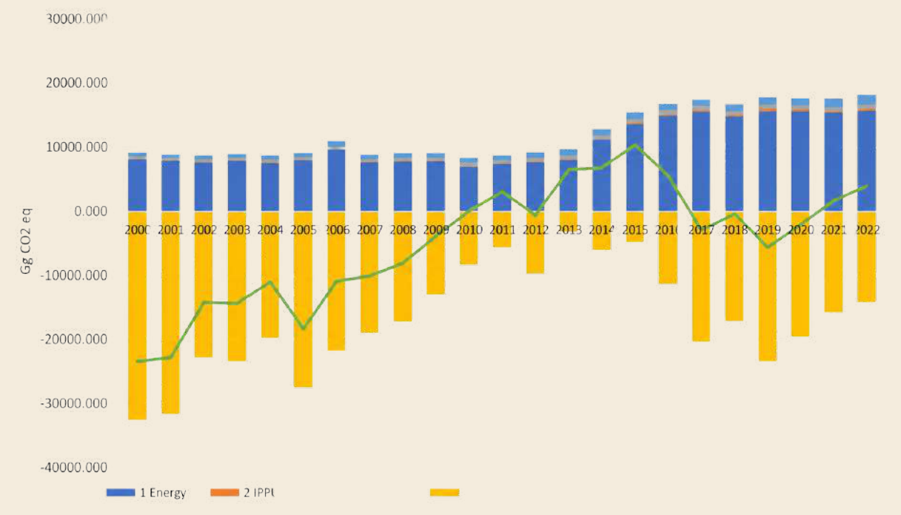
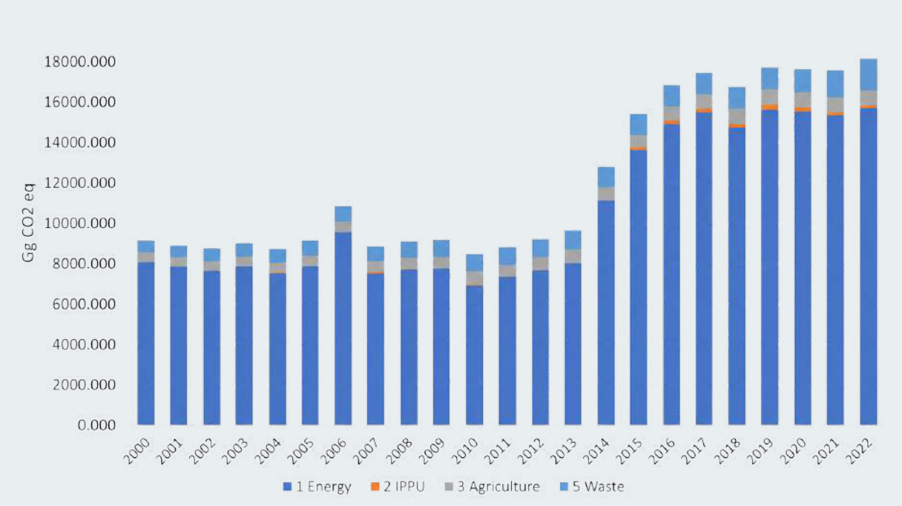
The development of PNG’s NDC 3.0 is a formal state process anchored in robust legislative frameworks. The Climate Change and Development Authority (CCDA) is the primary government body mandated to carry out this task, ensuring that PNG meets its international obligations under the Paris Agreement. This mandate is specifically codified in the Climate Change (Management) Act 2015, which provides the legal basis for climate action in the country. To further streamline this process, the Climate Change (Management) (Nationally Determined Contribution) Regulation 2022 was established, providing a clear, regulated roadmap for preparing, updating, and governing these climate targets.
A central pillar of the NDC preparation process is the seamless integration of climate goals into the broader national policy landscape. The CCDA acts as a central coordinator, working closely with various line government agencies to ensure that current and future sectoral policies, strategies and plans are strictly aligned with NDC targets. This synergy is bidirectional: while the NDC sets the overarching climate ambition, the specific measures and actions in individual sectoral plans are captured and reflected in the NDC. This approach ensures that climate action is not an isolated effort but is deeply embedded in the country’s development path and sectoral priorities.
The preparation of the NDC 3.0 involved a specialised governance structure designed to ensure technical accuracy and institutional ownership. An Inter-agency Core Working Group, consisting of technical-level representatives from key national government agencies, was established. The group was tasked with writing and incorporating input into the relevant sections of the NDC document, with a focus on ensuring that climate-related measures developed across sectors were represented. To refine the draft, the group conducted three technical working sessions.
To address the complexities of specific high-impact areas, three dedicated sub-technical working committees were established: Energy, Agriculture, Forestry, and Other Land Use (AFOLU) and Adaptation. These committees, which include representatives from both the government and the private sector, held three dedicated meetings to vet the document and provide specialised technical insights. Beyond these technical groups, the process emphasised inclusivity through three consultation workshops. These sessions allowed a broader range of stakeholders to contribute their expertise and feedback, ensuring that the NDC 3.0 is a comprehensive and participatory reflection of PNG’s climate ambitions.
Across all sections, efforts were made to ensure diverse engagement from stakeholder groups and effective gender balance in all meetings. A Gender and Social Inclusion advisor was also integrated into the technical support team to enhance the mainstreaming and strengthening of Gender Equality, Disability, and Social Inclusion-based considerations within the document.
PNG has shown significant progress in addressing its emissions as part of action under successive NDCs. PNG’s energy emissions, which account for 86% of non-LULUCF emissions, increased by an annual average of just 0.85% between 2017 and 2021, while action in PNG’s LULUCF sector saw PNG surpass its NDC 2.0 2030 emissions targets for the sector.
PNG’s mitigation commitment for the period 2025–2035 builds on this progress and the wider policy and institutional reforms achieved since NDC 2.0. They reflect an enhanced level of ambition in line with national development priorities and international climate obligations under the Paris Agreement while recognising the country’s unique context as a forest-rich, low-emission developing country with significant mitigation potential in the land-use sector.
The 2035 mitigation targets, as summarised in Table 3-2, are shown as both absolute and relative to a reference year of 2022, which is consistent with PNG’s national greenhouse gas (GHG) inventory. PNG’s mitigation commitment covers the period 2025-2035 and includes all major greenhouse gases, namely carbon dioxide (CO₂), methane (CH₄), nitrous oxide (N₂O), and hydrofluorocarbons (HFCs) across key sectors of the economy. The scope and coverage are consistent with the IPCC 2006 Guidelines, 2013 Wetland Supplements, and the 2019 Refinement, ensuring methodological robustness and transparency in emissions estimation and reporting17.
Given that the LULUCF sector represents the largest share of both emissions and mitigation potential in PNG, the NDC 3.0 continues to prioritise forest conservation, sustainable land management, and REDD+ implementation as central pillars of the country’s mitigation strategy.
At the same time, mitigation actions in energy, transport, and other sectors are expected to contribute to emission reductions while supporting sustainable economic growth. The energy sector is a key focus of PNG’s mitigation efforts, as PNG seeks not only to decrease its emissions but also to increase access to electricity from 21% to 70% by 2030 and to serve an economy projected to grow between 3.6% and 3.8% in the coming years.
Overall, PNG provides an economy-wide target of net-negative emissions (including LULUCF) as well as quantified emission targets for the energy sector, which accounts for 86% of non-LULUCF emissions, as well as a quantified emission target for LULUCF, which represents both PNG’s second largest sector for emissions and its most significant levels of removals. Non-GHG targets are also provided for the Transport subsector, Agriculture, Waste and IPPU.
In addition to these reported sectors, PNG will also act on blue carbon ecosystems to help strengthen their protection and enhancement across PNG’s Exclusive Economic Zones as part of global efforts towards mitigation.
|
Information element |
Response |
|
|
Conditionality |
PNG’s target is fully conditional |
|
|
Timeframes |
2030 and 2035 |
|
|
Scope and coverage |
GHGs include: |
Sectors included: |
|
|
|
Target Area |
Means of achievement and information on enhanced ambition from NDC 2.0 |
|
High level target |
Total emissions excluding LULUCF - 18,179 Gg CO₂e in 2022 Total net emissions with LULUCF – 3,909 Gg CO₂ eq in 2022 |
|
PNG will pursue a pathway toward net zero by 2030 and net-negative emissions by 2035 through strengthened action across energy, transport and land-use sectors |
This broadens PNG’s previous target, which focused only on neutrality against energy sector emissions – it represents PNG’s focus on economy-wide action on emissions. |
|
Energy |
Emissions in 2022: 15,660.99 Gg CO₂ eq Percentage of national, non-LULUCF, emissions 2022: 86% |
|
Reduction of 4,541 Gg CO₂ eq (29%) in total annual greenhouse gas emissions from the energy sector by 2035, relative to 2022 levels. |
This is the first time PNG presents a quantitative target for the energy sector. While emissions in this sector include energy industries, manufacturing industries and construction, transport and other sectors (residential and commercial) actions are divided between transport and the other aforementioned sectors based on PNG’s institutional arrangements. The target represents a decline in emissions of 4,541 Gg CO₂ eq against 2022 levels but would equate to emission reductions of 14,793 Gg CO₂ eq if a linear projection of emission increases from 2012–2022 is taken forward to 2035. |
|
Energy Sub-sector - Energy (excluding transport) |
Emissions in 2022: 13,812 Gg CO₂ eq Percentage of national, non-LULUCF, emissions 2022: 76% |
|
Significant progress on the enabling environment for sector transition was made in the energy sector since NDC 2.0, with development of key policies on Wind, Solar, Hydro, Geothermal, and Bioenergy all completed in 2025. Legal basis for domestic offsetting framework also established through amendments to the Climate Change (Management) Act 2015 and gazettal of the Climate Change (Management) (Carbon Market) Regulations 2025. In addition, PNG has also added significant additional renewable energy capacity to PNG’s grids. No quantified emission target, but target action areas shown adjacent. |
|
Transport Sub-sector - |
Emissions in 2022: 1,848.99 Gg CO₂ eq (77%) Road and (22%) Aviation Percentage of national, non-LULUCF, emissions 2022: 10% |
|
Reduced emission intensity in the transport sector. Enhance the rollout of electric vehicles. |
PNG will act in the short to medium term to reduce emissions intensity through action on reducing emission intensity of mass transport systems and providers, as well as action to address high-emitting vehicles. In the medium to long term, actions will be taken on the rollout of EVs based on PNG’s EV policy framework developed since NDC 2.0. |
|
Reduction in emission intensity within the aviation sector in line with PNG’s State Action Plan on CO₂ under the International Civil Aviation Organization (ICAO). |
Targets are non-quantitative and based on PNG’s State Action Plan on CO₂ (2023) under ICAO of:
This builds on progress made in the Aviation sector in the development of the State Action Plan, as well as action by PNG’s main carrier on fleet upgrades to improve performance and reduce emission intensity. |
|
Land Use Land Use Change and Forestry (LULUCF) |
(Net LULUCF) Emissions in 2022: -14,269.79 Gg CO₂ eq Equivalent to net LULUCF removals of 14,269.79 Gg CO₂ eq, comprising Forest Land net removals of 24,678.97 Gg CO₂ eq, partly offset by approximately 10,409 Gg CO₂ eq of emissions from other LULUCF categories. |
|
Net LULUCF removals of at least 17,000 Gg CO₂ eq by 2030, increasing to at least 18,000 Gg CO₂ eq by 2035. |
PNG’s latest BTR1/NID inventory reports net LULUCF emissions of -14,269.79 Gg CO₂ eq in 2022, equivalent to net removals of 14,269.79 Gg CO₂ eq. PNG has accessed results-based finance through the Green Climate Fund (GCF) REDD+ Result-Based Payment (RBP) programme and is taking action to establish a full jurisdictional carbon crediting programme. Progress toward the NDC 3.0 LULUCF targets will be tracked using the national greenhouse gas inventory, while REDD+ results will continue to be reported separately against the assessed Forest Reference Level. Further emissions reductions will be achieved through actions in line with PNG’s National REDD+ Strategy, with key action areas being:
As well as further work on cross-cutting capacity development. See Sections 8.2 and 8.3 |
|
Agriculture |
Emissions in 2022: 764.03 Gg CO₂ eq Percentage of national, non-LULUCF, emissions 2022: 4% |
|
Enhance the rollout and development of approaches to climate-friendly agricultural practices. |
PNG has progressed action in the agriculture sector through key strategy development, including the National Agriculture Sector Strategy (2024–2033) as well as key strategies within PNG’s main commodities. These provide a framework for the further rollout of climate-smart agricultural practices, which will both help address emissions and enhance climate resilience in this key sector. CCDA has also launched new levies on nitrogen-based fertilisers, helping maintain action on low-emission farming. |
|
Waste |
Emissions in 2022: 1,608.72 Gg CO₂ eq Percentage of national, non-LULUCF, emissions 2022: 9% |
|
Improve institutional arrangements for waste management. Develop opportunities for improved waste management and links with waste-to-energy actions. |
PNG has made progress in action on Waste through the development of the National Environmental Management Strategy 2021–2025 and is seeking to further develop this through:
|
|
Industrial Processes and Product Use |
Emissions in 2022: 145.17 Gg CO₂ eq Percentage of national emissions in 2022: 0.8% of non-LULUCF emissions |
|
Improve data collection and action on hydrofluorocarbons (HFCs). |
Key actions include:
|
|
Cross-cutting |
|
|
Strengthening domestic MRV and GHG accounting. |
This is noted across all sectors as part of PNG's action on continuous improvement. |
According to PNG’s National Inventory Document (NID) 2000 to 2022, the emissions from the energy sector (including transport) amounted to 15,660.99 Gg CO₂ eq in 2022, an increase of 7,571.55 Gg CO₂ eq (94%) when compared to 2000. CO₂ emissions from fuel combustion contributed 40% of the total GHG emissions in 2022, followed by CH₄ emissions from fugitive emissions from fuel (38%), CO₂ emissions from fugitive emissions from fuel (10%), CH₄ emissions from fuel combustion (4%), while N₂O emissions from Fuel Combustion contributed 1%. figure 3 outlines the trends of emissions from the Energy Sector from 2000 to 2022.
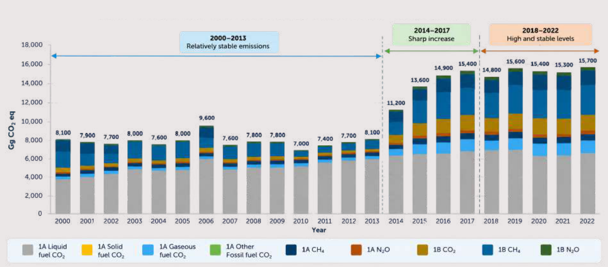
|
Energy sector Relative target |
Reduction of 4,541 Gg CO₂ eq (29%) in total annual greenhouse gas emissions from the energy sector by 2035, relative to 2022 levels |
The above target is for PNG’s full energy sector emissions and accounts for 86% of PNG’s non-LULUCF emissions.
The target represents an absolute decline in emissions of 4,541 Gg CO₂ eq relative to 2022 levels, but would equate to a reduction of 14,793 Gg CO₂ eq if a linear projection of emissions growth from 2012–2022 is carried forward to 2035.
It is the first time PNG has presented a quantified target for the energy sector, marking an increase in ambition in NDC 3.0.
These targets will be achieved through actions in the energy sector (excluding transport) and the transport sector, as presented in Section 3.2.2. and 3.2.3 below.
These actions will occur despite PNG also pursuing a rapid expansion of access to electricity from 21% to 70% by 203018, as well as projected economic growth of over 3% per annum.
GHG Target – No quantitative emissions-based target has been identified within the sub-sectors. Non-GHG Targets include:
PNG has established a strong policy framework to take action to reduce emissions from Energy industries through both cross-sector policy actions and sector-specific policies; these include:
In addition, PNG is working to establish the following policy areas:
This framework will support delivery across PNG’s key energy transition priorities through mutually reinforcing policy, regulatory, financing, and infrastructure actions, including:
This target will be achieved through the continued transition away from diesel-based generation in major grid systems, alongside investment in grid modernisation, energy storage systems, and backup infrastructure to support higher penetration of variable renewable energy. PNG possesses globally significant renewable energy potential, including hydropower, solar, geothermal, bioenergy, and distributed renewable systems, much of which remains underutilised.
PNG will strengthen pricing, financing, regulatory, and contractual arrangements to improve participation by Independent Power Producers (IPPs), including through more bankable power purchase arrangements, improved tariff structures, and enhanced regulatory certainty. Completion of key hydropower, solar, geothermal, and decentralised renewable energy projects will improve long-term energy security, reduce exposure to volatile imported fuel prices, and strengthen resilience of national and provincial energy systems.
PNG has set a target to increase national electricity access from approximately 21% to 70% by 2030, recognising that current electrification rates remain among the lowest in the Pacific region. Expansion of access will prioritise renewable and low-emission systems, including decentralised renewable energy, mini-grids, and off-grid solutions, particularly in remote and rural areas where conventional grid expansion is constrained by geography and cost.
PNG is strengthening the enabling environment for decentralised energy systems through development of licensing frameworks, technical standards, consumer protection measures, and improved engagement with IPPs and community-based energy providers. Actions will build on the National Electrification Roll-Out Plan (NEROP), which identifies renewable-based mini-grids and distributed systems as critical components of achieving national electrification targets.
Priority will be given to electrification of critical infrastructure, including health centres, hospitals, schools, transport systems, water supply infrastructure, and communication facilities. This integrated approach will deliver significant development, resilience, and social benefits, including improved health outcomes, enhanced educational access, strengthened disaster-response capabilities, and support for climate-resilient livelihoods and economic development.
PNG will strengthen controls on the importation of high-energy-consuming products and improve enforcement of energy performance standards across the building, appliance, and industrial sectors. Enhanced labelling systems will improve consumer awareness of energy efficiency and lifecycle energy costs across products.
PNG will also strengthen technical standards and quality assurance requirements for solar systems, batteries, mini-grid infrastructure, and household-scale renewable energy technologies to improve reliability, reduce system failure, and minimise dependence on diesel backup generation. Improved energy efficiency across both supply and end-use sectors is recognised as one of the most cost-effective measures to reduce long-term electricity demand growth, improve reliability, and reduce system losses.
PNG will work with industry, financial institutions, and development partners to develop emissions offsetting, pricing, and market-based mechanisms that support investment in renewable energy, energy efficiency, and low-emission technologies, while helping to reduce fugitive emissions across the energy sector. The development of these approaches will take into account PNG’s national circumstances, economic development priorities, and the need for a just and equitable transition. This will also include establishing relevant policy and legislative frameworks.
PNG will also continue to strengthen the enabling conditions for private-sector participation through public-private partnerships, improved investment frameworks, and blended-finance approaches to mobilise domestic and international investment in renewable energy infrastructure and low-emission technologies.
PNG will work with industry and other stakeholders to strengthen national energy profiling, emissions data collection, and monitoring systems, including systems for tracking oil and gas production, downstream petroleum supply, fuel imports, storage, distribution, and consumption. Improvements in data quality and transparency will support evidence-based planning, enhanced greenhouse gas inventory systems, and future development of sector-specific mitigation targets and carbon pricing or offsetting mechanisms.
PNG will also strengthen integrated energy planning, renewable energy resource assessments, and modelling systems through the National Energy Authority and associated sector agencies. This includes development of a centralised renewable energy data repository and enhanced resource mapping to support investment readiness and long-term energy transition planning.
Across all areas, GEDSI considerations will be mainstreamed into implementation to ensure transitions within the energy sector support equitable and socially inclusive growth as part of the just transition and do not reinforce existing inequalities.
The Lead Agencies include the National Energy Authority, the Climate Change and Development Authority, and the National Petroleum Authority.
According to PNG’s NID 2000 to 2022, emissions from the transport sector amounted to 1,848.99 Gg CO₂ eq in 2022, an increase of 945.25 Gg CO₂ eq (105%) when compared to 2000. Road transportation accounted for 77% of total emissions, followed by Domestic Aviation at 22%, and domestic navigation at 1%. figure 4 outlines the trend of emissions in this sector.
GHG Target – No quantitative emissions-based target has been identified within the sub-sectors. Non-GHG Targets include:
Target reductions are fully supported by PNG’s existing and developing policy framework. Key existing documents are shown in Box 2. In addition, PNG is working to deliver the actions identified in Table 3-3. below and to finalise the Maritime Policy to include consideration of emissions in the sector. Across all action areas, PNG will consider the social impacts of changes to transport systems to ensure an equitable transition.
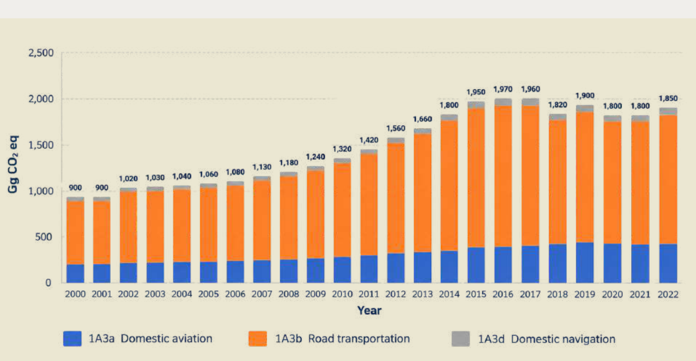
Emissions reductions will be achieved through a number of key steps, including: Reducing emissions intensity:
These will be undertaken in the short to medium term (1-5 years):
This will be a medium- to long-term strategy based on the need to establish charging infrastructure and the complex, challenging geography of PNG. Key elements of the approach will include the establishment of a policy framework with key actions including:
Actions are in line with PNG’s State Action Plan on CO₂ under ICAO, with four main action areas:
PNG will also finalise a comprehensive Aviation Policy that will provide an overarching framework for reducing emissions.
The Lead Agencies include the Department of Transport, Civil Aviation Safety Authority, National Maritime Safety Authority, Road Traffic Authority and Climate Change and Development Authority.
The Land Use, Land-Use Change and Forestry (LULUCF) sector remains central to PNG’s climate change mitigation efforts and continues to play a dual role as both a significant source and sink of greenhouse gas (GHG) emissions. PNG’s First Biennial Transparency Report (BTR1) indicates that while historical trends showed increasing emissions driven by deforestation and forest degradation, ongoing policy and programmatic interventions are beginning to reverse this trajectory.
According to PNG’s NID 2000 to 2022, the net emissions from the LULUCF sector amounted to -14,269.79 Gg CO₂ eq in 2022 compared to -32,564.71 Gg CO₂ eq in 2000. The net emissions from the LULUCF sector have fluctuated over the time series, which was mainly influenced by changes in Forest land and Cropland. In 2022, Forest Land contributed -24,678.97 Gg CO₂ eq, which was the principal source of net removals in the sector. Cropland contributed 9,715.13 Gg CO₂ eq, followed by Other Non-CO₂ gases - Forest Burning with 326.76 Gg CO₂ eq, then Grassland with 323.36 Gg CO₂ eq, and Settlements with 43.93 Gg CO₂ eq. LULUCF emissions and removals by sub-sector for 2000–2022 are shown in figure 5.
To complement the sub-sector breakdown shown in figure 5, figure 6 presents PNG’s updated LULUCF net emissions and removals pathway, an indicative BAU trajectory, and the NDC 3.0 LULUCF target pathway to 2035. This figure updates the pathway presented in PNG’s NDC 2.0 using the latest national greenhouse gas inventory information reported in PNG’s BTR1 for 2000–202220.
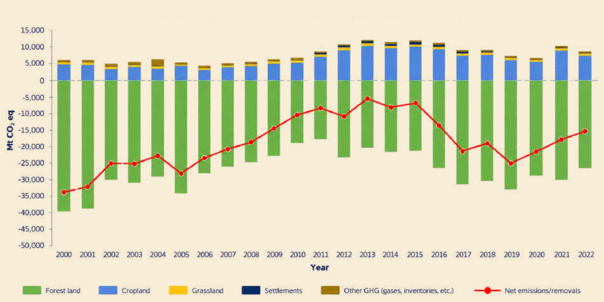
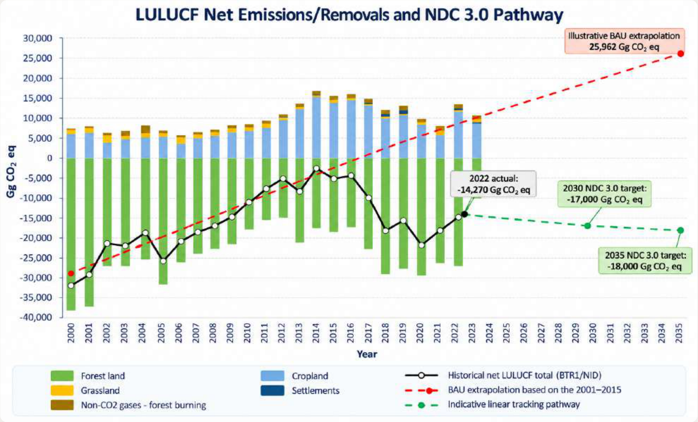
Note:
Historical values are based on PNG’s BTR1/NID inventory time series for 2000– 2022. Negative values indicate net removals. The red dashed Business-as-Usual line is a simple linear extrapolation of the historical inventory trend for 2001–2015 to 2030. It is included for illustrative purposes only and is not the accounting baseline for the NDC target or the assessed Forest Reference Level used for REDD+ reporting.
The green line is an indicative linear tracking pathway connecting the 2022 inventory result The green line is an indicative linear tracking pathway connecting the 2022 inventory result (-14,269.79 Gg CO₂ eq) to the 2030 target (-17,000 Gg CO₂ eq) and the 2035 target (-18,000 Gg CO₂ eq). Intermediate points on this line are indicative reference values for progress tracking and do not constitute separate annual NDC commitments. The historical time series and projections differ from those presented in NDC 2.0 because BTR1/NID incorporates improved activity data, updated land representation and methodological improvements, including revised forest-type-specific growth-rate assumptions informed by the IPCC 2019 Refinement.
|
Quantitative GHG emissions |
Net LULUCF removals of at least 17,000 Gg CO₂ eq by 2030, increasing to at least 18,000 Gg CO₂ eq by 2035. |
|
Relative non-GHG Emissions target |
PNG will seek to reduce annual gross deforestation area and annual forest degradation area by approximately 20% by 2035 relative to 2022 levels, subject to confirmation through PNG’s National Forest Monitoring System and relevant REDD+ reporting processes. This indicator supports implementation of the LULUCF GHG target but does not replace the national inventory-based LULUCF net removals target. |
PNG will maintain and enhance the LULUCF sector as a long-term national net carbon sink in line with Article 5 of the Paris Agreement and its own long-term commitments to both climate mitigation and environmental conservation. PNG targets net LULUCF removals of at least 17,000 Gg CO₂ eq in 2030 and at least 18,000 Gg CO₂ eq in 2035, equivalent to a net LULUCF balance of -17,000 Gg CO₂ eq or lower in 2030 and -18,000 Gg CO₂ eq or lower in 2035.
The targets were informed by an assessment of potential emissions trajectories and stakeholder discussions undertaken during the preparation of NDC 3.0. The final targets were selected for their alignment with PNG’s broader commitment to economy-wide net-zero emissions by 2030 and net-negative emissions by 2035.
Figure 6 presents the relationship among the latest BTR1/NID inventory time series, an illustrative business-as-usual (BAU) extrapolation, and an indicative linear-tracking pathway connecting the 2022 inventory result to the 2030 and 2035 NDC targets. The illustrative BAU line is based on a linear extrapolation of the 2001–2015 historical inventory trend (with 2015 as the start year for PNG’s first NDC). It is presented for communication purposes only and is not the accounting baseline for the NDC target, or the assessed Forest Reference Level used for REDD+ reporting.
Relative to the 2022 LULUCF net emissions level of -14,269.79 Gg CO₂ eq reported in PNG’s BTR1 and NID as submitted, the 2030 target represents an additional target-year increase in net removals of approximately 2,730 Gg CO₂ eq, while the 2035 target represents an additional target-year increase in net removals of approximately 3,730 Gg CO₂ eq.
The LULUCF target is fully conditional on adequate, predictable and sustained international support, including finance, technology transfer and capacity building for REDD+, sustainable forest management, conservation, restoration, reforestation, afforestation, integrated land-use planning and strengthened MRV.
If the 2022 inventory values, LULUCF time series or relevant reference indicators are subsequently revised through UNFCCC technical expert review, relevant REDD+ technical assessment or analysis processes, subsequent BTR/NID submissions or national inventory recalculations, PNG may review the relevant reference values and tracking parameters for NDC implementation and future NDC updates in a transparent manner, while maintaining the overall progression and ambition of this NDC.
|
Year |
Indicative net emissions reference value (Gg CO₂ eq) |
Status |
|
2022 |
−14,270 |
BTR1/NID reference year |
|
2023 |
−14,611 |
Indicative linear reference value |
|
2024 |
−14,952 |
Indicative linear reference value |
|
2025 |
−15,294 |
Indicative linear reference value |
|
2026 |
−15,635 |
Indicative linear reference value |
|
2027 |
−15,976 |
Indicative linear reference value |
|
2028 |
−16,317 |
Indicative linear reference value |
|
2029 |
−16,659 |
Indicative linear reference value |
|
2030 |
−17,000 |
Formal NDC target |
|
2031 |
−17,200 |
Indicative linear reference value |
|
2032 |
−17,400 |
Indicative linear reference value |
|
2033 |
−17,600 |
Indicative linear reference value |
|
2034 |
−17,800 |
Indicative linear reference value |
|
2035 |
−18,000 |
Formal NDC target |
Note: Values are rounded to the nearest Gg CO₂ eq. Only the 2030 and 2035 values constitute formal NDC targets. Values for the intervening years are indicative linear reference values for progress tracking and do not represent annual compliance thresholds or separate annual commitments.
It is important to note that PNG’s NDC accounting for the LULUCF sector is based on the national greenhouse gas inventory and National Inventory Document submitted with the Biennial Transparency Report.
REDD+ results are reported separately against the assessed Forest Reference Level using REDD+ accounting rules and should not be interpreted as identical to LULUCF inventory totals used for NDC tracking. PNG will continue to improve LULUCF accounting through future BTRs, NIDs, REDD+ submissions and inventory recalculations, including improved documentation of forest-type-specific growth-rate assumptions, age-class treatment, stock-flow dynamics of degraded and regenerating forests, repeated degradation, natural disturbance accounting, driver attribution, including where feasible commercial logging, commercial agriculture and subsistence-driven land-use change, uncertainty analysis, QA/QC procedures, and reconciliation between inventory and REDD+ reporting.
PNG has a strong policy framework for integrated action across the LULUCF sector and has achieved significant emissions reductions through the adoption of key policies and strategies.
These action areas span key LULUCF sectors and are integrated through cross-cutting national strategies such as the SDG 13 Roadmap and National REDD+ Strategy, incorporating key GEDSI considerations to ensure PNG’s action across sectors is part of a just transition. Key sector-based action areas include:
|
Land use and Development Planning |
Full integration of LULUCF targets into national development planning, with policy coherence across sectors: PNG has worked to integrate commitments to reduce emissions from deforestation and forest degradation, and to advance sustainable land management, into key national documents, including the Medium-Term Development Plan and the National SDG 13 Roadmap. This will be further strengthened in upcoming Medium-Term Development Plans, supported by stronger cross-sector coordination. Enhance Land Use Planning - The National Sustainable Land Use Policy is also entering implementation, with a focus on improving information levels and sustainable planning across PNG’s rural areas. Further roll out will improve integrated land use planning. Integration of sustainable land use planning and subnational development planning and financing – Climate performance will be included within the DPLGA provincial performance reporting from 2027, with action to be taken to strengthen forest- and land-use-based considerations within this. Integration of climate screening into public capital investment projects will also be further strengthened and expanded to address climate impacts of development activities. |
|
Forestry |
PNG has a strong framework for sustainable forest management and climate change actions and is seeking to further strengthen operations through: The PNG Timber Legality Standard (PNG TLS) – PNG will further strengthen its rollout. This provides a strong framework for production forest management and will aid tracking and operations in PNG’s timber sector. Enhanced downstream processing - A shift from round log export to a consolidated and sustainable downstream processing industry through the Forest Development Programme will enhance value addition and reduce levels of forest exploitation. Expansion of existing forest plantations and securing grassland areas for the establishment of new forest plantations – Through PNG’s National Reforestation and Afforestation Strategy 2025–2035, the forestry sector aims to enhance both production plantations and the rehabilitation and reforestation of degraded and deforested landscapes. Areas to be reforested include those that have been deforested and are now fallow, and forest areas degraded by selective logging that are being restored through Assisted Natural Regeneration (ANR) techniques. Strengthening of Community forestry extension and support programmes – enhancement of PNG’s community forestry activities to increase value addition and supply to domestic markets while protecting community livelihoods and sustaining PNG’s forest resources. Moratorium on Forest Clearance Authorities (FCAs) – PNGFA will maintain strong controls on the issuance of FCAs for agricultural development, helping to restrict risks of uncontrolled expansion of agricultural activities. |
|
Biodiversity Conservation |
PNG has committed to the 30x30 targets under the Kunming-Montreal Global Biodiversity Framework. As such, PNG is targeting a sixfold increase in terrestrial areas under conservation management, equating to over 120,000km2 of conserved landscapes. This will be achieved through:
Expansion is guided by the PNG Protected Areas Act (2024) as well as its Oceans Policy (2020–2030) Implementation Plan (2024) (with the documents covering mangrove areas) |
|
Agricultural development |
Agricultural development is a cornerstone of PNG’s development and has seen a transition in policy and international market demands. PNG is adapting to these with regard to their impacts on forests and land use change through:
Approaches are outlined within the National Agriculture Sector development plan (2024– 2033) as well as commodity specific plans development by key commodity boards and informed by PNG’s agricultural research systems. |
|
Cross-cutting actions – data management and quality |
PNG will enhance its GHG inventory for the LULUCF sector to capture categories that exist in PNG, such as peatland and seagrass, but are not currently estimated in the inventory. PNG is also taking action to strengthen its data collection and monitoring within the forest sector through its National Forest Inventory and National Forest Monitoring Systems, as well as establishing frameworks for action on REDD+ finance. Key action areas include: Forest and Land Use Change Assessments – through technological improvements, PNG will enhance the measurement and monitoring of deforestation and forest degradation to provide near-real-time information. This will allow early action on key mitigation areas and provide improved data for emissions reporting. National Forest Inventory (NFI) – PNG is also continuously taking action to expand and strengthen its data collection to develop country-specific forest-type emission factors. The scientific data (emission factors) for trees and soils collected during the National Forest Inventories will improve understanding of forest and soil carbon and strengthen emissions and removals reporting to the UNFCCC. |
The Lead Agencies include the PNG Forest Authority, the Conservation and Environmental Protection Authority, the Department of Lands and Physical Planning, and the Department of Agriculture and Livestock.
According to PNG’s NID 2000 to 2022, GHG emissions from the agriculture sector amounted to 764.03 Gg CO₂ eq in 2022, which is approximately 4% of the country’s overall emissions that year (excluding LULUCF). Total emissions increased by 285.76 Gg CO₂ eq (37%) when compared to the year 2000. The highest-emitting category in 2022 was agricultural soils, which accounted for 37% of the sector's total emissions. After this, enteric fermentation contributed 33%, followed by manure management at 30%. figure 7 below outlines the trends of emissions from the Agriculture Sector from 2000 to 2022.
GHG Target – No quantitative emissions-based target has been identified within the sub-sectors. Non-GHG Targets include:
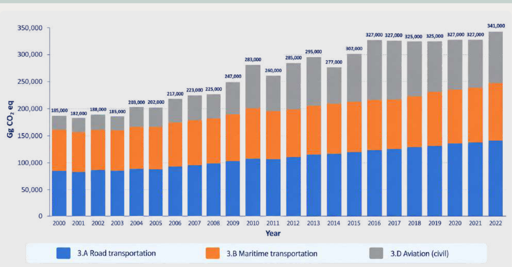
The National Agriculture Sector Plan 2024-2033 provides the overarching framework for action on agriculture during the NDC implementation period. This is supported by sector-specific action plans in key sectors such as coffee, cocoa and oil palm, with action in these areas led by their specific commodity boards. Key overall actions thus focus on improved awareness of climate actions and improved data collection on the sector, including the below priority action areas:
The Lead Agencies include the Department of Agriculture and Livestock and the Livestock Development Corporation as well as key sector commodity boards and agricultural research bodies.
According to PNG’s NID 2000 to 2022, in 2022, emissions from the Waste sector totalled 1,608.72 Gg CO₂ eq and accounted for 9% of PNG’s total GHG emissions (excluding LULUCF). Emissions from the waste sector have increased throughout the entire time series (2000-2022), as shown in figure 8.
The increase is influenced by population growth, development, consumption rate, and rural-to-urban drift. The breakdown of 2022 emissions from the Waste sector by category shows that Wastewater treatment and discharge accounted for 68% of the sector’s total emissions, followed by solid waste disposal (29%), Incineration and open burning of waste (3%), and biological treatment of solid waste (1%). The contributions of CO₂, CH₄, and N₂O to total sector emissions are 1%, 84%, and 15%, respectively.
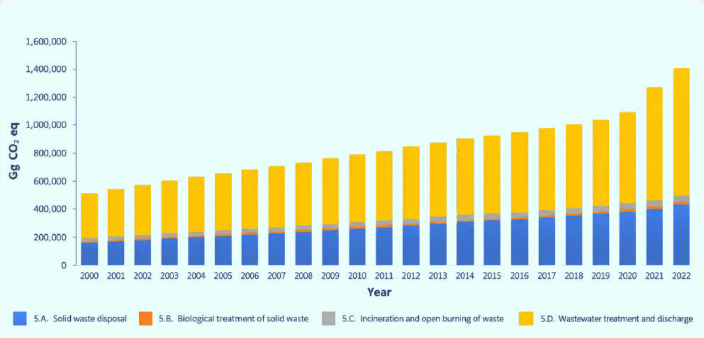
GHG Target – No quantitative emissions-based target has been identified within the sector.
Non-GHG Targets include:
PNG’s waste sector is guided by the National Environmental Management Strategy (2021-2025)[1]. Through NDC implementation, these will be further strengthened and developed by:
It is also noted that actions to improve the management and processing of waste will have wider social, health and environmental benefits, which will be integrated into climate-focused actions.
The Lead Agencies include the CEPA, National Capital District Commission (NCDC), and Provincial Authorities.
According to PNG’s NID 2000 to 2022, emissions from the IPPU sector in 2022 totalled 145.17 Gg CO₂ eq. The relative contributions of individual GHGs are as follows: CO₂ (1.2%), HFCs (98.7%), and N₂O (0.1%).
Figure 9 below outlines the trend in emissions from the IPPU sector from 2000 to 2022.
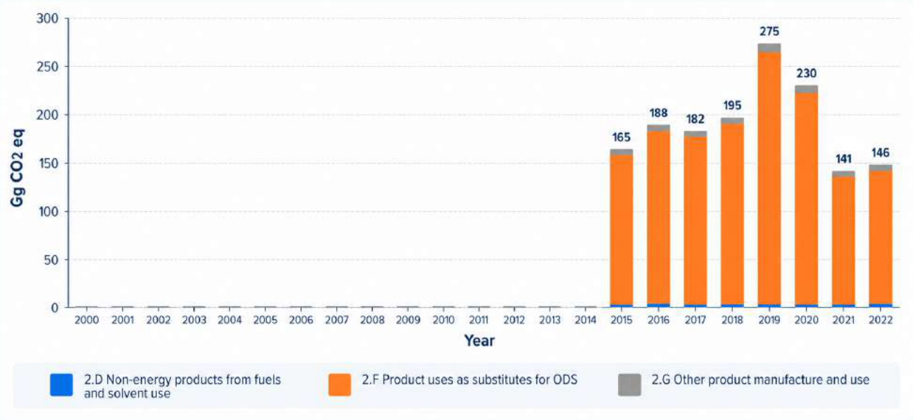
GHG Target – No quantitative emissions-based target has been identified within the sector.
Non-GHG Targets include:
The approach will be based on PNG's Environment (Ozone Depleting Substances, Synthetic GHGs, and Natural Refrigerants)
Regulation (2022) and commitments under the Kigali Amendment to the Montreal Protocol. Specific actions will be developed around:
The Lead Agencies include the Conservation and Environment Protection Authority and CCDA.
PNG is one of the world’s most vulnerable countries to climate change. Adaptation action is a critical pillar of PNG’s sustainable development pathway, and GoPNG is taking significant steps to strengthen it. These actions are based on PNG’s National Adaptation Plan (NAP) 2022-2030, which identifies key challenges facing PNG and nine priority action areas to be addressed through actions across four main sectors and six cross-cutting areas (see Table 4-1 and details in sections below).
The current NDC 3.0 reaffirms the critical importance of adaptation in PNG and commitment to the NAP framework for action, with no new targets or indicators added at this time. These targets and action areas also align with PNG’s NDC 2.0, with PNG’s NAP further advancing them.
The sections below provide an update on action across the NAP framework and identify areas for prioritisation within the upcoming NAP review, which will include assessment against the Global Goal on Adaptation, the United Arab Emirates Framework for Climate Resilience, and the 59 Belem Adaptation Indicators21. Following this review, the NAP targets and indicators will be revised to cover the period to 2030. A revised NAP is then planned for development to cover the period 2030-2040, including the timeframe of this NDC 3.0 from 2025–2035.
Early assessment of NAP progress identifies key areas for further action, including refining targets and indicators, strengthening GEDSI integration, strengthening the monitoring and evaluation framework, and improving the quality of data on climate vulnerability to support data-driven decision-making. Further review and actions will also coordinate closely with PNG’s action on Loss and Damage and reflect priorities and approaches identified within the policy framework under development (see Section 5).
|
Priority Areas to Address |
Priority Sectors for Action |
|
|
|
Cross-cutting actions |
|
|
Target: 10 per cent of the total population (0.8 million beneficiaries, 25 per cent are women) have increased resilience with respect to food and water security, health, and well-being in Papua New Guinea.
Key action areas identified in the NAP:
The Adaptation Fund–financed Agriculture Sector Support for Adaptation (ASSA) project, implemented by the Pacific Community, strengthens the climate resilience of smallholder agriculture in Papua New Guinea. Addressing risks such as drought, extreme weather, and pests, it promotes climate-smart farming, improved water and soil management, and diversified livelihoods.
Targeting key barriers including limited market access and technical capacity, the project prioritises women and vulnerable groups. Expected to benefit around 96,000 people, ASSA enhances food security, incomes, and ecosystem resilience. It directly supports NDC adaptation goals and provides a scalable model through capacity building, knowledge sharing, and institutional strengthening.
PNG’s population is more than 85% rural, relying predominantly on diverse subsistence agricultural systems that are specific to PNG’s varied island-to-montane environments. Commercial agricultural production contributes close to one quarter of PNG’s GDP and is a key source of export earnings, with production mixed between larger estates for crops such as oil palm and a significant smallholder production sector for crops such as cocoa and coffee.
These systems are heavily impacted by climate change, which is intensifying El Niño-induced droughts and La Niña-driven floods, raising temperatures that shift the distribution of pests and diseases, and driving sea-level rise that increases soil salinisation.
PNG is taking action to address these through the adoption of climate-smart agricultural practices, with approaches outlined in the National Agriculture Sector Development Strategy (2024-2033)22, including improved crop varieties, water management, soil conservation, and diversified farming systems to increase the capacity of local communities (see case study). Key technological solutions are also being adopted to enhance adaptive capacity, for example through early warning for extreme weather events, and to strengthen market access, improve price transparency, and develop sustainable value chains.
Agricultural commodity boards23are also taking specific actions to support the development of climate-smart agricultural practices and align action with changing climate conditions. Research bodies, including the National Agricultural Research Institute, and commodity-specific bodies, such as those for oil palm and coconuts, support their work. The Fresh Produce Development Authority also supports fresh produce and community gardening actions, and all groups are working to better integrate climate considerations into their planning.
As part of PNG’s integrated approach, the Department for Community Development and Religion (DfCDR) is providing improved training and capacity building on financial management, access to banking, and seed capital for small agricultural businesses in the informal sector, improving their long-term resilience24. Cash transfers managed by the DfCDR for child nutrition also help address the impacts of climatic shocks on child nutrition. This approach builds on and operationalises the National Gender Equality and Women’s Empowerment (GEWE) Policy 2025–2035, strengthens PNG’s approaches to Community-Based Adaptation (CBA), and supports PNG’s wider social protection framework in line with the National Social Protection Policy (2022-30). This GEDSI consideration within support for the informal sector links to PNG’s wider efforts to mainstream GEDSI action in the agricultural sector25.
Papua New Guinea is strengthening climate resilience in vulnerable communities through the Pilot Program for Climate Resilience (PPCR) and the Building Resilience to Climate Change in Papua New Guinea Project, which mobilised approximately US$24.25 million in grant financing.
Actions support climate-resilient water and community infrastructure, including rainwater harvesting, improved drainage, resilient water supply systems, and ecosystem restoration to reduce flooding, erosion, salinisation, and water shortages. Targeting highly climate-vulnerable coastal and island communities, the initiative improves water security, reduces disaster risks, and integrates adaptation into essential infrastructure and community planning.
Target: USD 172 million (PGK 608 million) value of building and utility infrastructure assets built/rehabilitated according to climate-resilient codes and standards.
Key action areas identified in the NAP:
Infrastructure is a cornerstone of economic growth, service delivery, and climate resilience in Papua New Guinea. As climate change increasingly threatens the performance and lifespan of infrastructure assets, integrating climate resilience across planning, design, construction, and maintenance has become a national adaptation priority.
Key progress in the sector includes climate vulnerability assessments around Port Moresby, the development of urban planning guidance to support vulnerability assessments, and the implementation of climate-resilient infrastructure and actions in the Water, Sanitation, and Hygiene (WASH) Sector across 21 priority atolls.
Under NDC 3.0, infrastructure is reaffirmed as a priority adaptation sector, with an increasing shift from policy commitments and guidance development to enforceable implementation.
As updated climate-resilient standards and manuals are finalised, the 2026 NAP mid-term review will assess their integration into official Department of Works and Highways (DoWH) specifications to ensure automatic application across all major infrastructure contracts. It will also assess how infrastructure adaptation activities affect different population groups, including women, youth, and vulnerable communities, to further strengthen the positive impact of these actions.
The GoPNG is working with development partners to integrate guidance on climate screening for public investment projects and is also prioritising enhanced climate resilience of key service infrastructure, such as hospitals and health centres, to improve the quality and reliability of access. This action is also closely linked to mitigation goals related to providing renewable energy to health centres to improve the quality and reliability of services. Actions in these areas are crucial to ensuring the most vulnerable groups can access health care when needed.
Target: US$ 1.2 billion (PGK 4.2 billion) value of transport (air, sea, and land) infrastructure built/rehabilitated according to climate resilience codes and standards.
Key action areas identified in the NAP:
PNG’s transport systems are fundamental to economic activity, enabling the movement of goods, people, and services while underpinning daily livelihoods across the country. The sector is highly exposed to climate-related hazards, particularly extreme rainfall, flooding, landslides, and coastal inundation. These hazards routinely damage roads, bridges, culverts, ports, jetties, wharves, and airport facilities, leading to service disruptions, community isolation, and rising maintenance and rehabilitation costs.
Climate-induced disruptions to transport networks often amplify existing vulnerabilities by constraining access to markets, health services, education, and emergency response, particularly in rural and remote areas.
PNG is addressing these challenges through enhanced standards and procedures for transport infrastructure development as well as investments in enhanced maintenance and management of existing assets (see also Boxes 5 and 6). The DoWH has established a Climate Change Policy Action Plan (2022) which builds on the National Transport Strategy 2013. The Transport Policy and Investment Plan to 2030 further recognises climate change as a cross-cutting issue to be integrated into all road, sea, and air transport planning and development processes.
The Department of Transport (DoT) collaborates closely with several agencies, including the DoWH, the Civil Aviation Safety Authority, the National Maritime Safety Authority, PNG Ports Corporation, the Road Traffic Authority, and the National Road Safety Council. While DoWH is responsible for infrastructure standards and quality assurance, the DoT focuses on policy formulation and sectoral coordination.
The DoWH, with support from the World Bank’s Resilient Transport Project, is investing about US$96 million to climate-proof key sections of the Ramu and Hiritano Highways. These transport corridors are highly vulnerable to flooding, erosion, landslides, and extreme rainfall.
The project combines engineered infrastructure upgrades with nature-based solutions, including revegetation, slope stabilisation, erosion control, and improved drainage systems. Long-term maintenance contracts are also helping reduce future climate-related repair costs and improve infrastructure reliability.
These actions strengthen resilience by improving access to markets, health services, and communities, showing how PNG is integrating adaptation into infrastructure planning while supporting sustainable, climate-resilient development.
Several initiatives have supported these agencies, including the Australian Department of Foreign Affairs and Trade (DFAT), the World Bank, the Asian Development Bank, and PNG’s Connect PNG Programme. Action has also been taken to integrate climate screening into Public Investment Programme applications to support improved climate-aligned infrastructure investments26. With support from the Australia PNG Transport Sector Support Program (TSSP), DoWH has established a Climate Change Risk and Vulnerability Framework (CCRVA) and is developing associated guidelines and tools to assess climate risks across infrastructure assets.
Design and maintenance manuals and engineering standards are also being updated to incorporate climate-resilient requirements that reflect evolving climate risks and projected impacts. These updates are central to ensuring climate resilience is systematically embedded in infrastructure design and construction, rather than applied on an ad hoc basis.
Approaches to reducing the impacts of climate hazards on infrastructure are also increasingly considering the utilisation of nature-based solutions (see Section 7) as part of an integrated engineering approach that both strengthens adaptation and delivers additional environmental and social benefits.
Key action areas identified in the NAP:
Climate change is increasingly undermining efforts to improve PNG’s public health outcomes. Rising temperatures are expanding transmission of vector-borne diseases such as malaria into higher-altitude areas, resulting in increased pressure on health services. One estimate indicates climate-related health costs will exceed USD 210 million by 2030.
PNG is strengthening climate resilience across its national airport network through the Civil Aviation Development Investment Program (CADIP), led by the National Airports Corporation with support from the Asian Development Bank, Australia, and Japan. The programme is upgrading22 national airports through a phased approach, with five airports completed under Phase 1 and additional upgrades underway.
The initiative integrates climate adaptation into critical aviation infrastructure through all-weather runway rehabilitation, improved drainage systems, upgraded airside facilities, and strengthened aviation safety systems. These measures reduce disruption from flooding, erosion, and extreme rainfall while improving reliability during disasters and emergencies.
In PNG, airports are essential lifelines for medical evacuations, food supply, trade, tourism, and access to government services. CADIP demonstrates how climate-proofing infrastructure can strengthen both national connectivity and community resilience in line with Papua New Guinea’s adaptation and NDC priorities.
Intensifying climate hazards, including flooding, drought, landslides, sea-level rise, and extreme rainfall, are amplifying the environmental drivers of vector-borne and water-borne diseases and compounding long-standing challenges in access to safe water and sanitation. Diarrhoeal disease remains a leading cause of child mortality and hospitalisation, while climate-related shocks are increasing food insecurity and nutrition risks, particularly in rural areas. Higher temperatures are also driving increases in heat-related illness, particularly among vulnerable groups such as the elderly, children, outdoor workers, and people with pre-existing health conditions, and disproportionately impact the poor and more marginalised members of society.
PNG has taken action to address these challenges through its NAP, including support to develop, test, and now apply an inclusive WASH and Climate Adaptation Framework27, and to strengthen the capacity and climate resilience of PNG’s rural health system.
Under NDC 3.0, PNG seeks to accelerate these actions through further strengthening climate-resilient health systems, disease surveillance, and climate-informed prevention measures. These form part of a suite of measures that link across both other adaptation areas (such as climate-resilient infrastructure and transport) and mitigation measures (such as enhanced access to reliable renewable energies in rural health centres) that provide a whole-of-systems approach to reducing PNG's vulnerability in the health sector, and have significant economic and societal benefits for PNG.
Headline Objective: Strengthen the integration of climate change adaptation and resilience considerations into national, provincial, district and sectoral planning, budgeting and implementation processes.
Key Action Areas Identified in the NAP:
Papua New Guinea has taken significant steps to strengthen the integration of climate change adaptation into national development planning and sectoral governance frameworks. Climate resilience considerations are reflected across key national policy frameworks, including the Medium-Term Development Plan IV (2023–2027)28
Through NAP implementation and under the legislative direction of the Climate Change (Management) Act 2015, as amended, the CCDA has established adaptation focal points in key sectors and at the provincial level, while maintaining the operation of the cross-sector Adaptation Working Committee. At the sub-national level, CCDA has supported provincial focal points and Provincial Climate Change Committees in developing Provincial Climate Change Adaptation plans and Climate Resilient and Green Growth Plans, and has worked to mainstream actions from these into development plans.
PNG is also strengthening the mainstreaming of climate risk screening processes for public investment. Support from the Asian Development Bank, the World Bank, and the Government of Australia has helped develop climate risk assessment approaches for infrastructure and the public investment programme (PIP). This includes guidance requirements for the screening of capital expenditure PIPs against climate risk criteria29. As such, all proposed capital investments over K10 million (USD 2.5 million) must undergo climate risk screening to ensure that climate risks are minimised and investments are resilient to future climate impacts. Further work is underway to train agencies on submitting these proposals and understanding climate-related risks and how to integrate them into budget decision-making.
Work has also been undertaken to integrate adaptation (and mitigation) needs into urban development, including within the National Capital District – National City Development Policy (draft). Such mainstreaming can also be integrated with other urban plans in PNG.
The planned 2026 NAP mid-term review will further assess institutional effectiveness, identify implementation gaps and strengthen mechanisms for integrating climate resilience into budgeting, planning and monitoring systems across all sectors and levels of government.
Key Action Areas Identified in the NAP:
1. Strengthen and operationalise decision-making and coordination arrangements
PNG has continued to strengthen the institutional foundations for climate adaptation. The Adaptation Technical Working Committee (ATWC), chaired by the CCDA, provides a national coordination platform for adaptation planning and implementation under the Climate Change (Management) Act (2015, as amended).
PNG has also strengthened governance frameworks linked to disaster risk reduction, climate finance and environmental management. This includes greater alignment among adaptation planning, the Medium-Term Development Plan IV, disaster preparedness frameworks, and sustainable land-use planning systems.
Further investment is needed to strengthen adaptation governance, institutional capacity, climate data systems, long-term financing arrangements and monitoring frameworks. The 2026 NAP review will assess progress in these areas and identify opportunities to strengthen coordination, accountability and delivery systems for adaptation implementation across all levels of government.
Key Action Areas Identified in the NAP:
PNG recognises that effective adaptation depends on strengthening climate literacy, institutional capability and community awareness across all levels of society. Significant progress has been made in integrating climate change awareness into education, training, and community resilience programmes through partnerships among government agencies, civil society organisations, development partners, and academic institutions.
Climate awareness and capacity-building activities have been implemented through programmes supported by the European Union, UNDP, the Pacific Community (SPC), Green Climate Fund readiness initiatives and bilateral partners. These programmes have supported training for government officials, provincial administrations, local communities, women’s groups and youth organisations on climate risk assessment, adaptation planning, sustainable land management and disaster preparedness.12
PNG is also strengthening climate information systems and technical knowledge platforms to improve evidence-based decision-making. Efforts include strengthening meteorological monitoring, hazard mapping, early warning systems and climate vulnerability assessments, including support for provincial-level climate profiling and risk assessments through the PNG National Weather Service and regional programmes coordinated through SPREP and SPC.13
Through collaboration with the Department of Higher Education, Research, Science and Technology (DEHRST) and the University of PNG, CCDA is also supporting the development of specific climate-based training and educational courses that are mainstreamed into PNG’s education system.
The 2026 NAP review will further assess capacity gaps and opportunities to strengthen climate education, technical training, information systems and adaptation learning frameworks to support implementation of NDC 3.0 and future NAP priorities.
Key Action Areas Identified in the NAP:
PNG recognises that climate change disproportionately affects women, children, youth, persons with disabilities and vulnerable communities, particularly in rural and coastal areas where livelihoods are highly dependent on natural resources and subsistence agriculture. PNG has therefore strengthened efforts to integrate Gender Equality, Disability and Social Inclusion (GEDSI) considerations across climate adaptation planning and implementation processes. PNG’s broader national policy framework supports these approaches, including the National Policy on Gender Equality and Women’s Empowerment (2024–2034), the National Gender Equality Policy, the National Youth Policy, and the National Disability Policy.
As such, PNG’s actions have gone beyond initial gap assessments to take tangible steps to integrate GEDSI considerations into adaptation planning and implementation, including developing provincial adaptation plans and implementing key projects and programmes supporting climate-resilient livelihoods, financial literacy, community adaptation planning, and leadership training. Programmes under the EU-STREIT initiative, the Water for Women Fund, Pacific Women Lead, and Adaptation Fund-supported activities, as well as those led by NGOs (see Box 7), have also supported women-led by NGOs (see Box 7), have also supported women-led adaptation actions, food security initiatives, and improved access to local decision-making processes.
The 2026 NAP mid-term review will further assess progress in mainstreaming GEDSI considerations across adaptation implementation. This will build on PNG’s wider GEDSI framework and the climate-specific framework presented within this NDC to identify opportunities to strengthen inclusive participation, equitable access to resources and gender-responsive monitoring systems across all sectors.
Headline Objective: Improve conservation, restoration and management of terrestrial and coastal ecosystems to protect livelihoods and communities.
Key Action Areas Identified in the NAP:
Papua New Guinea’s terrestrial, coastal and marine ecosystems are central to national adaptation efforts and underpin food security, water resources, biodiversity conservation, livelihoods and disaster resilience in PNG.
PNG has increasingly integrated ecosystem-based adaptation and Nature-based Solutions (NbS) into climate planning and implementation processes through the National Adaptation Plan, National REDD+ Strategy, Protected Areas Policy, Blue Carbon Policy Roadmap and the National Biodiversity Strategy and Action Plan. These plans stress the key need for the conservation and management of PNG’s natural resources,
The Nature Conservancy (TNC), in partnership with the PNG Conservation and Environmental Protection Authority (CEPA) and provincial administrations, is supporting the Mangoro Market Meri (“Mangrove Market Women”) initiative, which promotes the sustainable management of community mangroves while enhancing the economic benefits women can derive from them through ecotourism, sustainable livelihoods, and blue carbon opportunities. By supporting the sustainable management of mangroves and nearshore fisheries, the initiative addresses two pressing environmental challenges: overfishing and the overharvesting of coastal resources.
Similarly, the UNDP-supported Blue Carbon Incubation Facility Gutpela Solwara, Gutpela Bisnis in Kimbe Bay, West New Britain, working with CEPA and the West New Britain Provincial Authority, is empowering local women entrepreneurs to support marine conservation and sustainable livelihood initiatives through livelihood enterprises, helping communities adapt both economically and environmentally to the impacts of climate change on marine ecosystems. The Global Fund for Coral Reefs (GFCR) and the Joint SDG Fund provide financing for the programme, with additional efforts focused on mobilising private-sector investment in reef-positive and women-led blue-economy enterprises.
Through the Water for Women programme, women and girls have also played a central role in planning and managing climate-resilient water, sanitation, and hygiene (WASH) systems. The programme has strengthened women’s leadership in community adaptation while improving resilience to droughts, flooding, and water insecurity. The Australian Government’s Department of Foreign Affairs and Trade (DFAT) finances the initiative. The initiative has been delivered in collaboration with provincial administrations, local-level governments and relevant national agencies responsible for health, community development and WASH services.
The community-driven marine conservation group East New Britain Sea Keepers, founded by a female university graduate, is working with young people to protect and restore coastal habitats while building resilient, climate-adaptive communities. The initiative works alongside local communities, provincial stakeholders and conservation-focused government agencies to strengthen coastal ecosystem management and environmental awareness among youth. Support for the initiative has included partnerships with conservation organisations, local stakeholders and donor-supported community conservation activities focused on marine ecosystem protection and climate resilience.
Together, these initiatives show that women in PNG are not only disproportionately vulnerable to climate impacts but also leading innovative adaptation and resilience-building strategies through community leadership, environmental conservation, sustainable livelihoods, and locally led climate action. They also demonstrate the importance of partnerships among communities, government institutions, development partners, civil society organisations, and private finance mechanisms in supporting inclusive, gender-responsive climate resilience in Papua New Guinea.
both as critical resources to support adaptation (e.g., through coastal defences, flood protection, and access to nutrition) and as part of action to safeguard the natural systems themselves against the impacts of climate change by reducing other anthropogenic stressors.
The 2026 NAP review will assess opportunities to strengthen ecosystem resilience approaches, community-based adaptation planning and the integration of NbS within this. It will also assess the information needs to better monitor the health of critical ecosystems as part of PNG’s ecologically linked approach to adaptation.
Headline Objective: Strengthen climate information and early warning systems to improve community resilience and livelihoods.
Target: 6 million people (70% of the population) benefit from improved early warning systems/information to respond to extreme climate events.
Key Action Areas Identified in the NAP:
Papua New Guinea is highly exposed to climate-induced hazards including flooding, drought, tropical cyclones, landslides, storm surges and extreme rainfall events. Strengthening early warning systems and preparedness measures is therefore a critical component of PNG’s adaptation and disaster risk reduction efforts.
PNG has made important progress in strengthening disaster risk management (DRM), multi-hazard early warning systems, and climate risk governance. With technical support from UNDP and financial support from the Government of Australia, the Government reviewed its disaster management architecture and developed the draft National Emergency Management Act (NEMA) and Policy to modernise PNG’s DRM legal and institutional framework. UNDP has also supported the development of geospatial risk mapping, GEODRR training, and the integration of a Multi-Hazard Information Portal on the National Disaster Centre’s website to strengthen risk-informed planning and response coordination. In parallel, GGGI, with funding from the Government of New Zealand, is supporting the establishment of a national Climate Registry and climate information systems. Additional support is expected through the SOFF initiative and the planned GCF SMART Climate Programme to strengthen meteorological observation networks, climate and disaster risk information systems, forecasting capacities, and people-centred multi-hazard early warning systems at national and subnational levels.
Climate and disaster early warning systems are also being strengthened at the community level through improved communication systems, hazard awareness programmes and community-based preparedness activities. These initiatives help vulnerable communities better prepare for droughts, flooding, storm surges, and other climate-related hazards.
PNG has also strengthened integration between climate information systems and sector planning processes, including agriculture, transport, health and water management. This includes improved seasonal forecasting, drought monitoring and flood-risk assessments to support climate-informed decision-making and emergency preparedness.
The 2026 NAP review will further assess institutional capacity, monitoring systems, and financing requirements to strengthen multi-hazard early warning systems, climate services, and community preparedness frameworks across PNG.
PNG ranks among the most climate-vulnerable nations globally, facing unprecedented threats from intensifying climate hazards, including coastal and inland flooding, landslides, tropical cyclones, sea-level rise, and drought. While ambitious mitigation and adaptation efforts are essential, even with these in place, certain climate impacts will exceed PNG's adaptive capacity, resulting in unavoidable economic and non-economic loss and damage that threaten the nation's sustainable development trajectory.
For the purposes of this NDC, PNG’s L&D framework refers to economic and non-economic impacts of climate change that cannot be avoided through mitigation and adaptation efforts, including negative effects from slow-onset events (such as sea-level rise, desertification, and ocean acidification) and extreme weather events (such as cyclones, floods, and droughts).
For PNG, Loss and Damage encompasses:
Economic Losses: Direct damage to physical assets, infrastructure, and productive capacity, including housing destruction from cyclones and floods, forest plantations and agricultural land loss from landslides, degradation of marine and terrestrial ecosystems, loss of fisheries productivity, and damage to transport and communication networks.
Non-Economic Losses: Damages that cannot be easily quantified in monetary terms but represent profound impacts on communities, including displacement and permanent loss of homeland (as exemplified by PNG’s Carteret Islands, where communities face permanent relocation due to sea-level rise), cultural losses and threats to traditional ways of life, loss of biodiversity and endemic species, impacts on human health and wellbeing, and loss of indigenous knowledge systems and territorial integrity.
Regional studies on loss and damage in Pacific Island countries show that intangible losses, such as mental health impacts, disruption of traditional practices, weakening of social cohesion, and loss of connection to land and sea, are often more significant than purely economic losses and raise critical questions of justice and cultural survival.
These impacts are already being directly felt in PNG. Between 2008 and 2013, approximately 151,000 people were displaced in PNG, two-thirds due to natural hazards30. More recently, the May 2024 landslide in Enga Province claimed over 2,000 lives, with estimated damage reaching USD 130 million31.
Research assessments likewise identify PNG as one of the earliest and most visible examples of climate-induced relocation, with the Carteret Islanders widely cited as being on the frontline of climate-related losses of homeland, cultural identity, and territorial integrity (see Boxes 832and 9). Internal displacement, while traumatic in any context, is particularly complex in PNG, where 97% of land is customarily owned and almost all is undemarcated, presenting significant challenges for identifying lands for relocation.
Incorporating Loss and Damage (L&D) into PNG's NDC 3.0 marks a key evolution in the country's climate policy framework. It acknowledges that adaptation, while critical, has limits, and establishes PNG's commitment to developing a comprehensive national L&D response. This chapter aligns with the outcomes of the first Global Stocktake (GST), which recognised that significant adaptation gaps persist despite progress made, and positions PNG to access emerging international L&D financing mechanisms, particularly the Fund for Responding to Loss and Damage (FRLD).
PNG's approach to L&D is grounded in national ownership and country-driven action. The Climate Change Management Act (CCMA) 2015 (as amended 2021) establishes the legislative framework for addressing L&D, with specific provisions for cross-border relocation and for establishing L&D financing mechanisms managed by the Climate Change and Development Authority (CCDA).
PNG has already taken action on elements of this, including developing the National Internally Displaced Persons Policy (2025–2035) (which includes climate considerations) and working on a draft policy on Climate-Induced Planned Relocation. The National Capital District National City Development Policy Draft also includes considerations on climate-induced rural-to-urban migration.
To further strengthen this approach, PNG is currently developing a L&D policy framework which will:
The Carteret Islands are among Papua New Guinea’s most climate-vulnerable atoll communities, with approximately 2,500–3,000 people affected by sea-level rise, coastal erosion and saltwater intrusion. Community evidence submitted to the UNFCCC Loss and Damage Executive Committee documented the loss of food gardens, contamination of freshwater supplies and increasing damage to homes and community infrastructure.
In response, communities initiated planned relocation efforts to Bougainville, including building new housing, establishing food gardens, and supporting livelihood transitions. Communities also trialled adaptation measures such as sea walls and coastal planting, but they proved insufficient against escalating climate impacts.
The policy framework will be developed through an extensive consultation process in 2026, engaging national government entities, provincial administrations, civil society organisations, women's groups, and youth representatives.
Section 8.5 includes finance for L&D and identifies it as a separate element from wider climate finance.
In Veraibari Village in the Kikori Delta, climate change has intensified tidal flooding, coastal erosion and ecosystem degradation, threatening homes, food systems and traditional livelihoods for several hundred residents. Evidence submitted to the UN Special Rapporteur on Human Rights and Climate Change described repeated damage to housing, declining fisheries productivity and loss of sago areas critical for food security and income generation.
Communities have responded by relocating houses further inland where possible, rebuilding damaged infrastructure and modifying livelihood practices to cope with changing environmental conditions. However, limited financial resources and increasing climate pressures have constrained local adaptation efforts. The case demonstrates how climate change is affecting both economic resilience and the enjoyment of fundamental human rights, including access to food, housing, culture and self-determination.
Nature-based solutions (NbS) are a core element of PNG’s actions to address climate change and support sustainable development. With PNG’s extensive forest cover (78%), unique biodiversity, and critical marine areas, its approach links local action to global outcomes by preserving critical habitats and the local and international benefits they provide.
NbS are a core element of PNG’s locally based actions to address climate change, bridging adaptation and mitigation. For example, reforestation of highland hillsides increases slope stability and reduces runoff, while enhancing GHG removals; similarly, conservation and rehabilitation of mangrove stands provide multiple benefits in coastal areas, including risk reduction, enhanced adaptive capacity, and emissions reductions and removals.
NbS also provide key connections with PNG’s top-down bottom-up planning systems, providing a framework for community-based planning and action that links with and delivers national policies and strategies, such as the current NDC 3.0, NAP (through mainstreaming into Provincial Adaptation Plans, and key guidance for infrastructure and transport) PNG’s NBSAP (through conservation efforts and establishment of community-based conservation initiatives), its National REDD+ Strategy and wider forest and protected areas policies.
PNG’s approach to NbS also brings intergenerational traditional ecological and cultural knowledge held within communities to the fore by integrating customary land and marine management practices into its national landscape management. In supporting local action, the transmission of traditional knowledge and community-based approaches to NbS helps those most vulnerable in communities, as part of PNG's wider approach to mainstreaming GEDSI into climate action, including strengthening the role of women in decision-making groups and enhancing their access to livelihoods.
In this way, NbS will be key to delivering the core objectives of the current NDC, which aim to enhance the resilience of both PNG’s ecosystems and the people they support, who are also the custodians of the environment.
Nature-based Solutions are actions to protect, sustainably manage and restore natural and modified ecosystems in ways that address societal challenges effectively and adaptively, to provide both human well-being and biodiversity benefits (IUCN 2016)
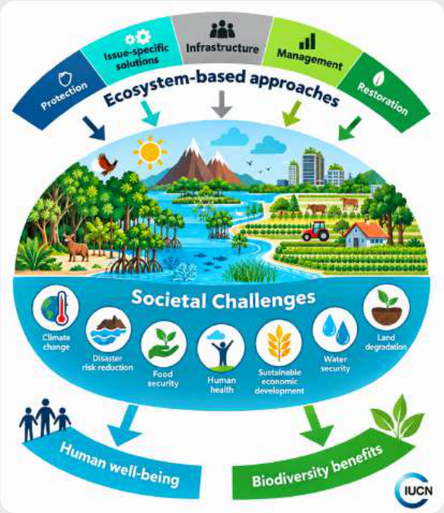
|
Action Area |
Policy Alignment |
Key Target Areas |
Benefits |
Scalability |
|
Reforestation and Landscape Restoration |
National Reforestation Strategy (2025–2035); National REDD+ Strategy (2017–2027); National Sustainable Land Use Policy; SDG 13 Roadmap; Medium Term Development Plan IV. |
Reforestation and assisted natural regeneration on degraded slopes and catchments; restoration of riparian corridors; rehabilitation of degraded forest lands; planted forestry and community woodlots; erosion control around transport and energy infrastructure. |
Enhanced slope stability and watershed protection; reduced runoff, flooding and sedimentation; improved water security; restoration of forest ecosystems and biodiversity; enhanced carbon sequestration; protection of transport and community infrastructure from climate-related landslides and erosion. |
PNG has extensive degraded upland and catchment areas suitable for restoration, particularly in erosion-prone highland regions. Restoration approaches can be scaled nationally through community forestry, provincial planning, watershed management programmes, and infrastructure resilience investments. |
|
Nature-based Infrastructure and Blue Carbon |
Blue Carbon Policy Roadmap (2025–2028); National Adaptation Plan (2023– 2030); National Reforestation Strategy; Climate-Compatible Development Management Policy; climate-smart infrastructure guidance. |
Mangrove restoration and protection as coastal buffer zones; riverbank stabilisation; watershed protection; restoration of wetlands and floodplains; integration of ecosystem-based approaches into roads, bridges, drainage systems and coastal infrastructure planning. |
Enhanced protection of infrastructure and settlements from coastal erosion, flooding and storm surge; improved coastal ecosystem functioning; reduced sedimentation and infrastructure damage; enhanced blue carbon sequestration; improved fisheries productivity and water quality; reduced risks of flash flooding. |
PNG has extensive coastal areas, major river systems, and more than 450,000 ha of mangrove ecosystems. Many of these areas are suitable for restoration and protection. Nature-based infrastructure approaches can be integrated into national infrastructure development, urban planning, transport corridors, and coastal resilience programmes. |
|
Agroforestry and Climate-Smart Agriculture |
Climate Smart Agriculture Policy; National Agriculture Sector Development Plan (NASDP); National Oil Palm Policy (2025–2035); National Cocoa Policy; Coffee Industry Corporation strategies; National Sustainable Land Use Policy; NBSAP. |
Integration of trees into cocoa, coffee, coconut, oil palm, and food crop production systems; restoration of degraded agricultural land; integrated watershed and soil management; climate-resilient farming systems; diversification of rural livelihoods. |
Improved soil fertility and moisture retention; enhanced slope stability and erosion control; diversified incomes and livelihoods; improved food security and resilience to droughts and extreme rainfall; reduced pressure on natural forests; enhanced biodiversity connectivity and carbon sequestration. |
Agroforestry systems are highly scalable across PNG’s rural agricultural landscapes where the majority of the population relies on subsistence and smallholder agriculture. Existing commodity value chains, extension systems, and climate-smart agriculture programmes provide strong platforms for expansion and mainstreaming. |
|
Community-Based Conservation and Ecosystem Stewardship |
National Biodiversity Strategy and Action Plan (2025–2035); Protected Areas Policy, and PA Act; Community Conservation Areas framework; National REDD+ Strategy; PNG Forest Policy; Blue Carbon Policy Roadmap. |
Expansion and strengthening of Community Conservation Areas (CCAs); locally managed marine areas (LMMAs); customary forest conservation; integrated ridge-to-reef and land-sea management; community-led ecosystem restoration and biodiversity protection. |
Enhanced biodiversity conservation and ecosystem services; strengthened climate resilience and adaptive capacity; improved forest and coastal carbon sequestration including seagrass areas; reduced deforestation and ecosystem degradation; enhanced water security, fisheries productivity, and livelihood resilience; strengthened customary governance systems and participation of Indigenous communities. |
PNG’s high levels of customary land ownership and strong community governance systems provide substantial opportunities for scaling community-based conservation nationally across terrestrial, freshwater, and marine ecosystems. Existing conservation networks and locally managed marine area approaches provide strong foundations for expansion. |
Climate change disproportionately affects women, youth, persons with disabilities, and rural communities in PNG, while limited access to information, finance, and land tenure rights further constrains their capacity to benefit from actions to address climate change. PNG’s NDC 3.0 seeks to address these structural inequalities by mainstreaming social inclusion into all elements of PNG’s response to climate change.
The approach is grounded in Section 55 of the National Constitution, which promotes equality among citizens and allows laws and policies to be developed to address the needs of groups of people, including females, children, young persons, members of underprivileged or less advanced groups, or residents of less advanced areas.
PNG recognises that, alongside women, persons with disabilities and other marginalised groups, young people (15–35 years, consistent with the National Youth Policy) are among those most affected by the long-term impacts of climate change. At the same time, they are important agents of change. Youth play critical roles as climate leaders, innovators, entrepreneurs, advocates and implementers of climate action at the community, provincial and national levels. This NDC 3.0 therefore seeks to strengthen the meaningful participation of women, youth, and marginalised groups across mitigation, adaptation, resilience-building, and climate governance processes.
As such, PNG’s NDC 3.0 has adopted a gender-responsive and socially inclusive framework to ensure equitable participation and benefits for all. This approach is built on the National Policy on Gender Equality and Women’s Empowerment (GEWEP 2024–2034) as well as other supporting policy and legislative frameworks, including those for youth and disability (see Annex 2), which provide the institutional, programmatic, and financing architecture for whole-of-government implementation as well as the inclusive, equitable climate and development outcomes under the UNFCCC Gender Action Plan and the Paris Agreement (see Table 7-1).
The Framework (shown in figure 9) will be operationalised through:
PNG’s National Policy on Gender Equality and Women’s Empowerment (2024–2034) provides the primary marker for this funding by requiring a 5% allocation of the domestic budget across all sectors. At the subnational level, GESI implementation will be supported through earmarked allocations from Provincial and District Service Improvement Programs, ensuring localisation of inclusive development outcomes.
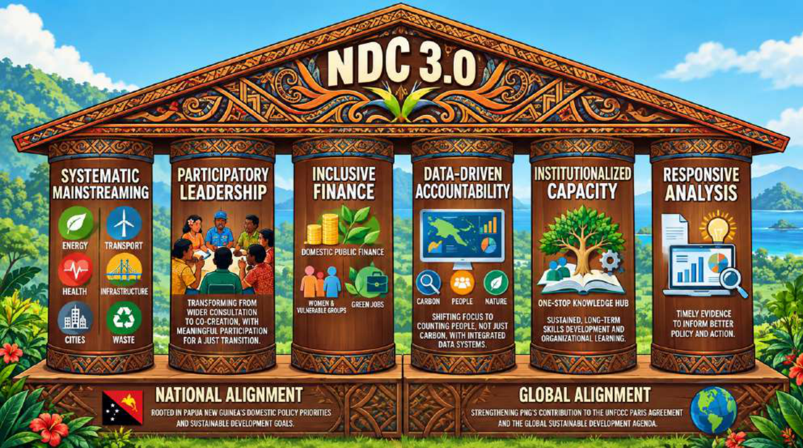
The NDC 3.0 Gender Equality, Disability and Social Inclusion (GEDSI) Framework is aligned with the Paris Agreement mandates, UNFCCC Gender Action Plan and Papua New Guinea’s ambition for inclusive and equitable adaptation, mitigation and sustainable development priorities.
|
Pillar No. |
Key Integration Principle |
UNFCCC GAP Priority Area |
Alignment with GAP Activities |
|
1 |
Systematic GESI Mainstreaming (Cross-Cutting Integration) |
Priority Area A: Capacity-building, knowledge management and communication. |
Supports integration of gender considerations across all climate policies and sectors. |
|
2 |
Participatory Leadership and Governance |
Priority Area B: Gender balance, participation and women’s leadership. |
Promotes women’s full, equal, and meaningful participation in climate decision-making processes; supports leadership pathways and inclusive governance structures at national and subnational levels. |
|
3 |
Inclusive Economic Opportunity and Finance |
Priority Area D: Gender-responsive implementation and means of implementation (finance, technology, capacity-building). |
Enhances women’s and marginalised groups’ access to climate finance, green jobs, and economic opportunities; supports gender-responsive budgeting and financing mechanisms. |
|
4 |
Data-Driven Accountability (Transparency) |
Priority Area E: Monitoring and reporting; aligned with the Enhanced Transparency Framework under the Paris Agreement. |
Promotes sex-disaggregated data collection, youth and gender-responsive indicators, and transparent reporting on climate actions; strengthens accountability through alignment with national and international reporting obligations. |
|
5 |
Institutionalized Capacity and Skills Development |
Priority Area A: Capacity-building, knowledge management and communication. |
Strengthens institutional and technical capacities to integrate gender into climate action; supports training, learning platforms, and knowledge exchange systems across sectors. |
|
6 |
Responsive Gender and Social Analysis |
Priority Area D: Gender-responsive implementation and means of implementation. |
Promotes the application of gender and social analysis tools (e.g., vulnerability assessments, gender analyses) to inform climate policy, planning, and implementation. |
The table below provides an overview of the key measures and expected outcomes for GESI by 2035
|
Key Measures |
Outcomes by 2035 |
Policy Reference |
|
Gender gap assessments developed for each climate sector to inform inclusive programming and implementation |
2 Assessments by 2027 4 Assessments by 2030 Targeted and inclusive programme design |
National Adaptation Plan 2023– 2030- Strategy Action 4.1 |
|
Strengthening women and youth representation in national /sub-national climate decision-making bodies. |
More effective and inclusive climate governance resulting in stronger climate outcomes |
National Adaptation Plan 2023– 2030- Strategy Action 4.1 GEWEP 2024–2034 |
|
Provide green skills training (renewable energy, conservation, sustainable agriculture) |
Mobilise and deliver tailored youth empowerment and employability pathways for 200,000 youths by 2028 |
NYES – Key Strategic Area 3 |
|
Mainstreaming climate change literacy into PNG's basic education system. |
Climate Change literacy is mainstreamed into the basic education system across PNG. |
NEP 2020-2029- Key Focus Area 4: Teachers and Teaching & Focus Area 5: Quality Learning |
|
Support youth-led innovation in renewable energy, agroforestry, and waste recycling. |
More than 500 youth groups are funded to carry out climate change programmes in their local areas by 2030. |
NYP – Pillar 2 Community & Environment |
|
Integrate Gender and Social Inclusion (GESI) in all NDC programmes and MRV systems. |
Equal and Inclusive participation of women, youth, and marginalised groups in climate action. |
UNFCCC GAP Priority Area B GEWEP 2024-2034 |
|
Mandate Sex-Age, Disability, Disaggregated (SADD) data collection and analysis for each sector. |
Evidence-based data on beneficiaries from climate investment which supports adjustments of policies. |
Paris Agreement ETF and UNFCCC GAP Priority Area E: Monitoring and Reporting |
|
Strengthen women’s leadership in community-based adaptation, REDD+, and Blue Carbon initiatives. |
Strengthened women’s leadership at levels of decision-making. More effective and locally relevant climate solutions and increased adaptive capacity and community resilience. |
UNFCCC GAP – Priority Area B GEWEP 2024-2034 |
|
Develop disability-inclusive adaptation tools and accessible climate information. |
Improved access to quality services and support programmes for persons with disability (PWD). |
National Disability Policy (2015-2025) Policy Objective 2 |
|
Technical and vocational education (TVET) and skills training in green jobs. |
Increased skills for green jobs and sustainable livelihoods. |
NEP 2020-2029 - Key Focus Area 4: Teachers and Teaching & Key Focus Area 5: Quality Learning Key Focus Area 6: Education Pathways |
|
Dedicated funding allocations for women and youth-led SMEs. |
More than 1,000 young people are employed in green jobs. |
NYP – Pillar 2 Community & Environment GEWEP Priority 1: Women’s Economic Empowerment GEWEP Priority 4: Girls’ education and women’s training |
|
Ensure gender-equitable access to financial resources and other benefits from climate finance for climate change adaptation. |
Expanded investment in climate-resilient livelihoods and reduced vulnerability. |
National Adaptation Plan 2023-2030 - Strategy Action 4.1 |
|
Gender-responsive governance structure |
Institutionalised GESI integration in climate governance. |
GEWEP 2024-2034 UNFCCC GAP Priority Area D National Women’s Council Act 2013 |
|
Promote inclusive and risk-informed approaches that consider social vulnerabilities in climate-affected and displaced communities. |
Strengthened long-term resilience of vulnerable groups to climate impacts. |
L&D Framework National Internally Displaced Persons Policy 2025-2035 |
|
Strengthen youth participation, leadership and climate entrepreneurship in climate action implementation. |
Increased participation of youth in climate governance, climate skills development, climate enterprises and community-based climate action initiatives. |
National Youth Policy 2020-2030 |
PNG has taken significant steps to establish an effective framework to take a whole-of-government approach to climate action. PNG was an early mover in establishing specific climate change legislation (Climate Change (Management) Act 2015) as well as government institutions – the Office of Climate Change and Development was established in 2010. It has also been committed to continually updating and strengthening this framework; the OCCD transitioned to the CCDA in 2015, the Climate Change (Management) Act was updated in 2021 and 2023 to reflect changing domestic and global needs, and the Climate Change (Management) (Carbon Market) Regulations were issued in 2025. This evolution has developed through governance framework that provides a strong basis for climate action, as outlined in Section 8.1 below.
Implementation of NDC 3.0 will, however, require substantial and sustained support through finance, technology transfer, capacity building, institutional strengthening, international cooperation, and dedicated support to address Loss and Damage (L&D) associated with the adverse impacts of climate change. This support will build on and strengthen PNG’s coordinated whole-of-government and whole-of-society approach that recognises and prioritises the role of customary landowners and local communities in PNG’s climate change action.
PNG’s implementation framework is informed by the Paris Agreement, the outcomes of the First Global Stocktake (GST), the outcomes of the Fourth International Conference on Financing for Development (FfD4) held in Seville in 2025, the National Adaptation Plan (NAP), REDD+ Strategy, Technology Needs Assessments (TNA I–III), and national development priorities under Vision 2050 and MTDP IV, as well as PNG’s emerging framework for addressing Loss and Damage.
Consistent with these international and domestic processes and their commitments on reforming the international financial architecture and scaling investment for sustainable development and climate action, PNG recognises and highlights the urgent need to:
PNG further recognises the importance of the FfD4 agenda and the NCQG process in addressing structural barriers faced by developing countries, including debt constraints, limited fiscal space, high transaction costs, limited institutional capacity and challenges in directly accessing international climate finance. PNG notes the importance of ensuring that the evolving global climate finance architecture responds to the needs and priorities of highly climate-vulnerable countries, including forest-rich and biodiversity-rich developing countries.
Given the scale of PNG’s needs to address climate change and in recognition of its position as a lower-middle-income country facing significant climate vulnerability and development challenges, this NDC remains wholly conditional upon adequate, predictable and accessible international support. This support may come in the form of finance, technology transfer, capacity building and institutional strengthening, consistent with the principles and obligations of the Paris Agreement, the outcomes of the First Global Stocktake, evolving arrangements under the NCQG, and commitments reaffirmed through the Fourth International Conference on Financing for Development (FfD4) in Seville.
PNG further recognises that significant support is required to establish the enabling conditions necessary to mobilise domestic public and private finance, improve investment readiness, strengthen institutional systems, enhance access to international markets, and scale up the implementation of mitigation, adaptation, and Loss and Damage responses. The need for such enabling support remains the basis for the fully conditional nature of PNG’s NDC.
The Climate Change and Development Authority (CCDA) is the lead agency for coordination, implementation, and monitoring of PNG’s NDC 3.0 under the Climate Change (Management) Act and the Climate Change (Management) (Nationally Determined Contribution) Regulation. Women and youth representatives will be included within relevant national and subnational climate governance and consultation processes, ensuring their meaningful participation in decision-making. The organogram in figure 11 below provides an overview of the structure and approach utilised by the Authority.
The National Climate Change Board provides a key mechanism for cross-sector coordination and decision-making. Technical Working Committees facilitate and strengthen cross-sector coordination at the technical level, with key long-standing committees on Adaptation and Mitigation (Energy Sector and REDD+), as well as other sub-committees established to address specific topics, such as those formed for NDC development. Committees also bring together representatives from the private sector and civil society and provide important mechanisms to increase broader engagement.
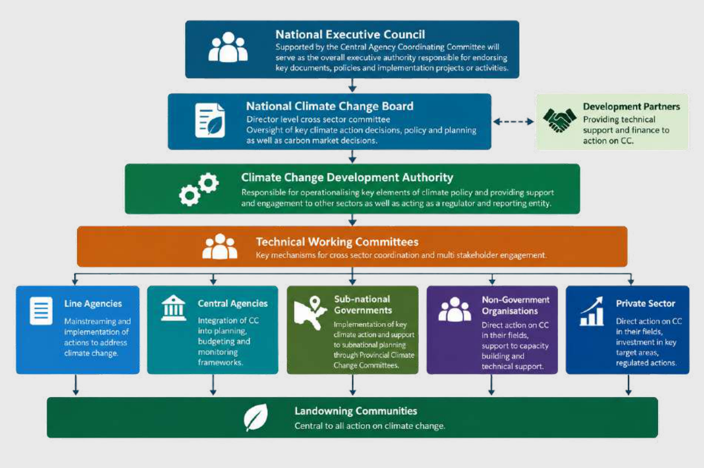
Climate change is also being increasingly mainstreamed into planning and decision-making across PNG. PNG has integrated key climate change targets into its Medium Term Development Plan, and incorporated climate risk screening into assessments of public investment projects (PIPs) valued over K 10 million (USD 2.5m). At the subnational level, provincial adaptation and climate-resilient green growth plans are being developed, and climate change has also been added as a performance indicator for provinces under the provincial service agreements from 2027. Ward-level development plans also provide a mechanism to identify and present climate action at the subnational level and provide an important part of PNG’s top-down and bottom-up approach to governance that also respects the critical role of land-owning communities as stewards of their land and as both the most vulnerable to the impacts of climate change and the primary actors in addressing climate change.
PNG faces one of the largest climate finance gaps in the Pacific and has received the lowest per capita levels of climate finance. Current climate finance inflows remain substantially below the level required to implement national mitigation, adaptation, resilience and sustainable development priorities, meeting only a limited proportion of PNG’s overall NDC implementation requirements.
PNG therefore commits to strengthening a comprehensive national climate finance architecture capable of mobilising, coordinating, tracking and deploying climate finance at scale. Priority financing sources include:
PNG’s National Climate Finance Strategy 2025–2030, which is currently under development, will focus on:
The strategy will also provide a framework for project prioritisation, including consideration of the multiple benefits of climate action and the need for finance to support those most vulnerable to the impacts of climate change. As part of strategy development and further institutional strengthening, PNG is also working to enhance capacity to track, monitor, and assess climate finance to help ensure maximum impacts.
Domestically, PNG is seeking to both further strengthen climate-aligned budgeting (see Box 10) and take action to raise domestic revenue for climate action; this includes:
Fees and levies – PNG’s Green Fees on international visitors are already operational, while levies on fossil fuel imports and fertilisers have been legislated for and will soon come into operation.
Emissions pricing and offsetting – PNG is developing an emissions pricing and offsetting mechanism to help drive investment in low-emission technology and provide revenue for NbS. This includes development of relevant domestic policy and legislative frameworks.
As further development of these systems depends on international support, they remain conditional, as does the use of their revenue.
On accessing international finance, PNG also recognises the need for more predictable, accessible, and grant-based climate finance, consistent with GST findings on the inadequacy and complexity of current global climate finance arrangements and the FfD4 call to reform international financing systems to better support vulnerable developing countries and Small Island Developing States.
The Climate Finance Unit (CFU) of the CCDA leads this work in close coordination with other key sector and central government agencies, as well as private sector bodies. The CFU is also working to strengthen links with other agencies to further align funding with other sectors and PNG’s climate needs and goals. This is particularly relevant in the sectors identified in this NDC and across the climate–nature nexus, with investments in effective environmental management and conservation seen as critical to achieving PNG’s mitigation and adaptation goals.
Significant support is still needed to fully operationalise these systems and support the full operationalisation of the CFU, including work on developing investment pipelines, finance tracking and monitoring procedures, and capacity to coordinate with and support key sector and subnational agencies.
Domestically PNG has made significant progress in enhancing climate-aligned domestic planning and budgeting systems. Climate change action has been integrated into key sector strategies such as the Department of Works and Highways (DoWH), Climate Change Policy Action Plan (2022) as well as specific climate-focused action plans within agriculture, and aviation. These build on specific technical assessment tools such as the DoWH’s Climate Change Risk and Vulnerability Framework (CCRVA), as well as guidelines, engineering standards and manuals.
These are being supported by strengthened budgeting frameworks that require climate screening and alignment. New requirements for public capital investment projects over K10 million (USD 2 million) which account for the majority of the K10.3 billion / USD 2.3 billion capital investment project allocation in PNG’s national budget (total budget is K30.9 billion). At subnational level the Department of Provincial and Local Level Government is also integrating the need for climate reporting as part of its performance monitoring of provincial governments, a process that impacts future budget allocations.
PNG recognises the potential role of high-integrity carbon markets and cooperative approaches under Article 6 of the Paris Agreement in supporting climate ambition, sustainable development and long-term forest and marine conservation. It also recognises the important role of non-market mechanisms and results-based finance in supporting action to maintain, sustainably manage, and conserve forests, as part of efforts to provide predictable climate finance that is not vulnerable to market conditions.
On this basis, PNG will utilise cooperative approaches under Article 6 to mobilise additional international climate finance, accelerate implementation of this NDC 3.0, and support sustainable development while maintaining environmental integrity and ensuring that international cooperation contributes to global mitigation ambition.
PNG reaffirms its commitment to Article 5 of the Paris Agreement by maintaining and enhancing its tropical forest carbon sinks through robust REDD+ implementation, sustainable forest management, and the use of results-based approaches to leverage mitigation outcomes. PNG has accessed results-based Payments for REDD+ action through the Green Climate Fund. PNG, however, notes the need for continued efforts to maintain and scale this financing so that unit values remain in line with market prices and with the prices identified as necessary to meet the Paris Agreement's 1.5 °C target through other assessments. Access to funds must also become more predictable and timely to match countries' emission-reduction commitments.
PNG has also stated its support for the Tropical Forest Forever Facility (TFFF), which recognises the role of High Forest, Low Deforestation (HFLD) countries in taking action to maintain a global public good. PNG encourages the participatory development of clear, inclusive mechanisms for access to the facility, as well as global action to support its capitalisation.
PNG will also progressively operationalise its Article 6.2 framework by establishing national authorisation procedures, corresponding adjustment accounting arrangements, registry systems, tracking mechanisms, and reporting consistent with Decision 2/CMA.3 and subsequent CMA decisions. This will be done by building on the legislative framework established by the Climate Change (Management) Act (2015, as amended) and the Climate Change (Management) (Carbon Market) Regulations 2025, with the aim of developing a clear carbon market access framework for PNG to guide all parties.
As part of the action to fully operationalise these markets, PNG will:
Through this process, PNG will ensure that any authorised transfer of carbon credits under Article 6 or for other international purposes strictly follows international rules and national laws. This includes applying the corresponding adjustments and complying with the required REDD+ guidelines to prevent double-counting.
Mitigation outcomes used solely for domestic purposes and not authorised for international transfer or other international mitigation purposes will remain within PNG’s national accounting framework and may, as applicable, support the implementation and achievement of PNG’s NDC 3.0.
Authorised international transfers, REDD+ results-based finance, domestic offsetting, and other carbon market transactions will be transparently tracked and accounted for according to their respective uses and applicable accounting treatments, with measures to prevent double counting, double claiming, and double use. Reconciliation between the national greenhouse gas inventory, the applicable NDC accounting method and relevant national and international registries and tracking systems will inform authorisation decisions.
PNG emphasises that carbon market participation must support sustainable development outcomes, through strong alignment with PNG’s development targets and application of safeguard frameworks to protect customary landowners, maintain environmental integrity and avoid double counting. It also highlights that PNG’s benefit-sharing arrangements, integrated into PNG’s guidance framework, ensure that a share of benefits flows to landowning communities, and that PNG provides some of the most direct benefits to communities from carbon markets of any country globally.
In addition to cooperative market-based mechanisms, PNG will explore non-market opportunities under Article 6.8 of the Paris Agreement to advance its climate ambition. Recognising the vital role of holistic international cooperation, PNG aims to leverage the Article 6.8 Framework for Non-Market Approaches (NMAs) to catalyse climate finance, technology transfer, and technical capacity-building. This integrated approach will support joint mitigation and adaptation initiatives, particularly across sustainable forest management, blue carbon, and community resilience, without relying on the transfer of mitigation outcomes.
As such, PNG will combine different financing approaches to deliver its conditional targets and notes that, if insufficient finance is available to meet the targets, it will use carbon markets and the sale of correspondingly adjusted credits. PNG will develop a roadmap to harmonise and ensure the coherent implementation of the various carbon pricing and market instruments.
PNG recognises that the private sector will play a critical role in financing and delivering the transition toward a climate-resilient and low-emission development pathway. PNG will strengthen enabling conditions for private sector participation through:
Priority areas for private investment include renewable energy, resilient infrastructure, sustainable forestry and agriculture, blue carbon, ecosystem restoration and digital climate services.
PNG recognises that the costs of Loss and Damage (L&D) associated with the adverse impacts of climate change are already occurring and are likely to increase significantly given PNG’s high levels of climate vulnerability, exposure to extreme weather events, sea-level rise, ecosystem degradation and impacts on livelihoods, infrastructure and communities. PNG further recognises that significant financial, technical and institutional support will be required to address Loss and Damage, and that this support should be separate from, additional to, and complementary to wider climate finance for mitigation and adaptation.
PNG will seek to mobilise support for Loss and Damage through a combination of international, regional and domestic financing mechanisms. International support will include efforts to access financing from the Fund for Responding to Loss and Damage (FRLD), with PNG developing proposals for submission from mid-2026 onward. PNG will also seek to access regional financing mechanisms, including the Pacific Resilience Facility (PRF), which includes dedicated windows for Loss and Damage alongside adaptation and disaster preparedness support, as well as bilateral and multilateral climate finance from development partners and international financial institutions.
At the domestic level, PNG will continue to support Loss and Damage responses through Government budget allocations, including through the annual recurrent and development budgets of the Climate Change and Development Authority (CCDA), while also exploring innovative financing mechanisms. These may include climate-based levies or dedicated taxation mechanisms, climate risk insurance arrangements, private sector and corporate social responsibility contributions, philanthropic support and partnerships with non-governmental organisations.
PNG emphasises that Loss and Damage financing should be primarily grant-based and should not create additional debt burdens for vulnerable developing countries already facing substantial climate adaptation and development costs.
PNG recognises that access to environmentally sound technologies, digital systems, innovation and strengthened institutional capability will be essential to achieving the objectives of this NDC.
PNG’s approach to technology transfer is informed by Article 10 of the Paris Agreement, the UNFCCC Technology Mechanism and PNG’s Technology Needs Assessments. The assessments identified the following priority needs:
PNG will continue engaging with international and regional partners, including the Climate Technology Centre and Network (CTCN), to accelerate technology deployment, technical assistance and innovation partnerships.
PNG recognises that long-term implementation of this NDC will require strengthened institutional, technical and human capacity at national, provincial and community levels.
Priority capacity-building areas include:
PNG will strengthen provincial technical capability through Provincial Climate Change Committees (PCCCs), universities, TVET institutions and embedded technical advisors. PNG will also continue partnerships with development partners, research institutions, civil society and Indigenous knowledge holders to strengthen national implementation capacity.
Particular attention will be given to developing the skills of women, youth and other underrepresented groups to participate in climate planning, implementation, innovation and climate-related employment opportunities.
Consistent with the GST outcomes and the Enhanced Transparency Framework (ETF), PNG is committed to maintaining and strengthening transparency, monitoring, reporting and accountability systems. PNG has been active in preparing and submitting its Biennial Transparency Reports (BTRs) and updated accounting, and will provide initial reports for key sectors identified for action under Article 6. As noted in other sections, PNG is also working to improve data collection and strengthen monitoring and reporting systems across GHG emissions, climate vulnerability, adaptation actions, finance, loss and damage, and wider social, environmental and economic indicators.
Key actions include:
PNG recognises that transparent and accessible data systems are essential for evidence-based decision-making, climate finance mobilisation and effective implementation. PNG will also work to strengthen cross-sector linkages on data collection to improve PNG’s overall environmental data collection and its transparent use and management.
Monitoring systems will, where feasible, use gender-, age-, and disability-disaggregated data and include indicators on women, marginalised groups, and youth participation in training, leadership, and climate-related livelihood opportunities.
PNG recognises that achieving the objectives of this NDC 3.0 will require a just, inclusive and equitable transition that supports sustainable economic development, decent work creation and improved livelihoods, while ensuring that no communities are left behind.
PNG further recognises that the impacts of climate change, as well as the transition toward lower-emission and climate-resilient development pathways, may disproportionately affect vulnerable populations, including women, youth, persons with disabilities, Indigenous peoples, customary landowners and rural and coastal communities that are highly dependent on natural resources and climate-sensitive sectors. Implementation of this NDC 3.0 will therefore seek to maximise social and economic co-benefits by creating sustainable and inclusive employment opportunities across renewable energy, sustainable transport, climate-smart agriculture, forestry, ecosystem restoration, blue carbon, sustainable fisheries, and circular economy activities.
Climate investments supported under this NDC 3.0 will also prioritise local employment, skills development, vocational training and community participation, with a particular focus on increasing access for women and youth to green jobs, technical training, entrepreneurship and leadership opportunities. PNG also recognises the importance of supporting local industries and community-based enterprises to participate in emerging climate finance, carbon markets and sustainable value-chain opportunities.
This approach will also be strengthened by prioritising equitable participation in planning, decision-making, and benefit-sharing, as guided by the NDC’s Gender Equality, Disability and Social Inclusion (GEDSI) approach and wider legislative framework. Full integration at these levels will help ensure climate actions are gender-responsive and socially inclusive. Actions undertaken under this NDC will also seek to uphold principles of Free, Prior and Informed Consent (FPIC), transparency, accountability, intergenerational equity and respect for customary governance systems and traditional knowledge.
PNG recognises that a just transition must balance economic development, environmental protection and social well-being. Accordingly, implementation of this NDC 3.0 will seek to avoid adverse socio-economic impacts associated with economic transformation and land-use change, while supporting resilient local economies, strengthened social protection, enhanced energy access and long-term sustainable development outcomes for all Papua New Guineans.
Education will also be a key part of this approach, with actions targeting the mainstreaming of climate considerations into the education system, not only to enhance understanding and awareness of climate change, its impacts, and responses, but also to provide appropriate training and skills to equip individuals to benefit from new economic opportunities.
PNG will further develop detailed national just transition pathways within its NDC Implementation Plan, Long-Term Low Greenhouse Gas Emission Development Strategy (LT-LEDS), and updated NAP.
Papua New Guinea’s NDC 3.0 has been developed considering the outcomes of the first Global Stocktake (GST) adopted under Decision 1/CMA.5 at the twenty-eighth session of the Conference of the Parties serving as the meeting of the Parties to the Paris Agreement (CMA.5). PNG recognises the GST as a critical mechanism for assessing collective progress towards achieving the long-term goals of the Paris Agreement and informing enhanced ambition and implementation in successive Nationally Determined Contributions.
PNG’s NDC 3.0 responds to the GST by strengthening economy-wide climate action, enhancing integration among mitigation, adaptation, and sustainable development priorities, and improving institutional readiness for implementation, monitoring, finance mobilisation, and international cooperation.
Consistent with the GST call for accelerated economy-wide emissions reductions, PNG has strengthened its mitigation framework by adopting an economy-wide net-zero pathway, supported by sectoral mitigation actions across energy, transport, forestry, agriculture, waste, and industrial processes.
PNG’s NDC 3.0 maintains the central role of the Land Use, Land Use Change and Forestry (LULUCF) sector while also strengthening action in non-LULUCF sectors, particularly energy and transport. The NDC 3.0 reinforces PNG’s long-term commitment to transition toward low-emission development pathways while recognising national circumstances, development needs and the importance of expanding energy access and economic opportunity.
In response to GST outcomes calling for the transition away from fossil fuels and acceleration of renewable energy deployment, PNG has strengthened commitments within the energy sector, including:
These measures seek to simultaneously reduce emissions, enhance resilience, support sustainable development and address energy poverty.
The GST found that global progress on adaptation remains insufficient and highlighted the need for enhanced ambition, implementation, and finance. PNG’s NDC 3.0 reaffirms adaptation as a national priority and maintains alignment with the National Adaptation Plan (NAP) 2022–2030.
PNG has committed to undertaking a comprehensive review of the NAP in 2026 to:
The NDC 3.0 strengthens the integration of adaptation across priority sectors, including agriculture, infrastructure, transport, and health, while also enhancing cross-cutting action on ecosystem resilience, climate information systems, disaster preparedness, and community-based adaptation.
The GST highlighted the importance of protecting and restoring ecosystems, halting deforestation and degradation, and conserving biodiversity as part of global climate action. PNG’s NDC 3.0 strongly aligns with these outcomes through its emphasis on:
PNG recognises that its forests, mangroves, seagrass ecosystems and marine biodiversity are globally significant natural assets that contribute to climate mitigation, adaptation, biodiversity conservation and sustainable livelihoods (see Section 6 for further information on PNG’s actions).
The GST recognised the increasing significance of Loss and Damage associated with climate change impacts, particularly for vulnerable developing countries and Small Island Developing States. PNG’s NDC 3.0 introduces a dedicated section on Loss and Damage for the first time, reflecting the increasing impacts of climate-related disasters, sea-level rise, displacement, ecosystem degradation and economic disruption experienced across the country (see section 5 for further information).
PNG commits to:
Pursuing access to international Loss and Damage finance mechanisms, including the Fund for Responding to Loss and Damage.
The GST identified major gaps in climate finance, technology transfer and capacity building for developing countries. PNG’s NDC 3.0 therefore places strong emphasis on mobilising international support and strengthening enabling environments for implementation (see Section 8 for further information).
Key actions include:
PNG reiterates that implementing many components of this NDC remains conditional on adequate and predictable international support.
Consistent with GST calls for strengthened implementation systems and transparency arrangements, PNG is continuing to enhance its national Monitoring, Reporting and Verification (MRV) systems and Enhanced Transparency Framework (ETF) readiness through:
The GST reaffirmed the importance of inclusive and equitable climate action, including the role of Indigenous Peoples, local communities, women, youth and persons with disabilities. PNG’s NDC 3.0 integrates Gender Equality, Disability and Social Inclusion (GEDSI) considerations across mitigation, adaptation, Nature-based Solutions and Loss and Damage responses (see Section 7 for further information).
PNG’s approach recognises:
Through these actions, Papua New Guinea’s NDC 3.0 seeks to contribute meaningfully to implementing the Paris Agreement while reflecting national circumstances, development priorities, and the outcomes of the first Global Stocktake.
|
Information Element |
Response |
|
NDC 3.0 Target |
Papua New Guinea will pursue a pathway toward net zero by 2030 and net-negative emissions by 2035 through strengthened mitigation action across the energy, transport, forestry and land-use sectors, while strengthening resilience and sustainable development outcomes. PNG’s NDC is fully conditional upon international support including climate finance, technology transfer and capacity building. |
|
1. Quantifiable information on the reference point (including, as appropriate, a base year) |
|
|
1(a). Reference year(s), base year(s), reference period(s) or other starting point(s) |
The base year for the NDC 3.0 is 2022, consistent with PNG’s most recent national greenhouse gas inventory and Biennial Transparency Report (BTR1). |
|
1(b). Quantifiable information on the reference indicators, their values in the reference year(s), base year(s), reference period(s) or other starting point(s), and as applicable, in the target year |
The indicator is net national greenhouse gas emissions. Net national greenhouse gas emissions in 2022 were approximately 3,900 Gg CO₂ eq, including LULUCF. Total emissions excluding LULUCF were approximately 18,179 Gg CO₂ eq in 2022. Sector-specific emissions in 2022 are as follows:
|
|
1(c). For strategies, plans and actions referred to in Article 4, paragraph 6, of the Paris Agreement, or policies and measures as components of nationally determined contributions where paragraph 1(b) above is not applicable, Parties to provide other relevant information |
PNG’s NDC 3.0 includes policy and action-based contributions including renewable energy deployment, expansion of electricity access, REDD+ implementation, climate-resilient infrastructure, ecosystem restoration, blue carbon actions, climate-smart agriculture, climate-resilient transport and strengthened adaptation systems. The following plans, strategies, and policies will be implemented to achieve the NDC 3.0:
Additionally, PNG also plans to develop the following plans, strategies, and policies within the implementation period of the NDC 3.0:
|
|
1(d). Target relative to the reference indicator, expressed numerically, for example, in percentage or amount of reduction |
Papua New Guinea will pursue a pathway to net-zero emissions by 2030 and net-negative emissions by 2035 through strengthened mitigation action across the energy, transport, forestry, and land-use sectors. Sector-specific targets include:
|
|
1(f). Information on the circumstances under which the Party may update the values of the reference indicators |
PNG may update reference values and indicators in future NDC submissions, Biennial Transparency Reports, NIDs or related reporting where improved data, methodologies, updated IPCC guidance, strengthened MRV systems, national inventory recalculations, or outcomes of UNFCCC technical expert review or relevant technical assessment or analysis processes become available. Where such updates affect the 2022 reference values, LULUCF time series, sectoral emissions or removals, or other NDC tracking indicators, PNG will document the changes transparently and may reflect them, as appropriate, in future NDC implementation reporting or NDC updates, while maintaining progression and overall ambition. |
|
2. Time frames and/or periods for implementation |
|
|
2(a). Time frame and/or period for implementation, including start and end date, consistent with any further relevant decision adopted by the CMA |
The implementation period for this NDC 3.0 is 2025–2035. |
|
2(b). Whether it is a single-year or multi-year target, as applicable |
PNG’s NDC 3.0 covers the implementation period 2025–2035 and includes headline target years of 2030 and 2035. |
|
3. Scope and Coverage |
|
|
3(a). General description of the target |
PNG’s NDC 3.0 is an absolute economy-wide net national greenhouse gas emissions reduction target implemented over the period 2025–2035. |
|
3(b). Sectors, gases, categories and pools covered by the nationally determined contribution, including, as applicable, consistent with IPCC guidelines |
Covered sectors include Energy, Transport, LULUCF, Agriculture, Waste and IPPU. Greenhouse gases covered include CO₂, CH₄, N₂O and HFCs. Accounting and reporting are consistent with the 2006 IPCC Guidelines for National Greenhouse Gas Inventories, the 2013 Wetlands Supplement and the 2019 Refinement. And Global Warming Potential used was from the IPCC 5th Assessment Report. Carbon pools covered under LULUCF are consistent with PNG’s national inventory methodologies and forest reference level submission. |
|
3(c). How the Party has taken into consideration paragraph 31(c) and (d) of decision 1/CP.21 |
PNG seeks to progressively improve the coverage and completeness of all significant anthropogenic emissions and removals in line with the IPCC Guidelines for National Greenhouse Gas Inventories, the IPCC 5th Assessment Report Global Warming Potential, and the Enhanced Transparency Framework requirements. PNG will continue improving data quality, activity data and sectoral coverage over time. Any exclusions are due to current technical and data limitations and are expected to be progressively addressed through enhanced MRV systems and inventory development. |
|
3(d). Mitigation co-benefits resulting from Parties’ adaptation actions and/or economic diversification plans |
PNG’s adaptation and sustainable development actions provide significant mitigation co-benefits through reforestation, mangrove restoration, climate-smart agriculture, watershed management, ecosystem-based adaptation, climate-resilient infrastructure, renewable energy access and sustainable transport systems. Community conservation and blue carbon initiatives also contribute to emissions reductions and carbon sequestration while strengthening resilience and livelihoods. |
|
4. Planning Process |
|
|
4(a). Information on the planning process that the Party undertook to prepare its nationally determined contribution and, if available, on the Party’s implementation plans |
The Government of Papua New Guinea, through the Climate Change and Development Authority, is responsible for preparing and regularly updating PNG’s NDCs. The mandate and process for preparing the NDCs are outlined in the Climate Change (Management) Act 2015 (as amended) and the Climate Change (Management) (Nationally Determined Contribution) Regulation 2022. The Climate Change and Development Authority (CCDA) coordinated the process in consultation with line ministries, provincial governments, development partners, civil society, customary landowners, women’s groups, youth organisations, and the private sector. The NDC 3.0 was prepared in four phases: Phase 1: Initiation and Deep Stakeholder Consultation (2024 – 2025) The foundation of NDC 3.0 relied on identifying national priorities, establishing data baselines, and building multi-sector consensus over nearly two years. Initial Workshop (February 2024): This served as the official launch of the NDC 3.0 formulation process. It brought together key government agencies, development partners, and civil society to establish the scope, work plan, and methodological approaches for updating PNG's climate commitments. One-on-one consultations with Key Stakeholders (March to October 2025): A comprehensive, eight-month period dedicated to bilateral meetings. This allowed technical teams to dive deep into sector-specific data, policy targets, and implementation barriers directly with relevant ministries, private sector actors, and non-governmental organisations. Internal Working Session (October 2025): Following the individual consultations, internal climate policy teams synthesised the gathered data, reconciled conflicting sectoral targets, and drafted the preliminary components of the updated NDC 3.0 framework. Phase 2: Technical Drafting and Core Group Mobilisation (Early 2026) Moving into 2026, the process shifted from broad data-gathering to intensive technical drafting, overseen by a dedicated management structure. Establishment of Inter-agency Core Group (January 2026): To streamline decision-making, a specialised Inter-agency Core Group consisting of technical-level representatives from key government agencies was established. Core Group Working Session (January 2026): An intensive session where this newly formed group reviewed the preliminary synthesis, mapped out the narrative structure of NDC 3.0, and ensured alignment with existing and planned sectoral policies, strategies or plans. Stakeholder Consultation Workshop (February 2026): The wider stakeholder network was re-engaged to review the Core Group's progress. This workshop acted as a feedback loop to validate assumptions before locking in technical calculations. Phase 3: Sectoral Technical Working Committees (March 2026) In March 2026, the drafting process was broken down into highly specialised Technical Working Committees (TWCs) to finalise sector-specific mitigation and adaptation strategies: March 4th – Energy Sector TWC: Focused on GHG and non-GHG targets for the energy sector. March 5th – AFOLU Sector TWC: Focused on GHG and non-GHG targets for the Agriculture, Forestry, and Other Land Use sector. This included updating historical deforestation baselines, REDD+ mechanisms, and sustainable land management strategies. March 6th – Adaptation TWC: Focused on climate resilience, climate-proofing infrastructure, food security, and coastal zone protection strategies for vulnerable communities. Core Team 2nd Working Session for Finalisation of PNG NDC 3.0 (March 2026): Immediately following the TWCs, the core team reconvened to integrate the outputs of the Energy, AFOLU, and Adaptation sessions into a unified, final draft of the NDC 3.0 document. Phase 4: Validation and National Endorsement (June – July 2026) The final phase ensures institutional ownership, legal validity under PNG law, and formal international submission. Validation Workshop (June 2026): A final gathering of all stakeholders to collectively review the completed draft, ensuring that all feedback from the TWCs has been accurately captured and that the commitments are mutually agreed upon. National Climate Change Board Endorsement (July 2026): The finalised document is presented to the National Climate Change Board for technical approval, confirming that the NDC 3.0 aligns with national climate legislation, such as the Climate Change Management Act. NEC Endorsement (August 2026): The document is submitted to the National Executive Council (Cabinet). NEC endorsement provides the necessary high-level political mandate and confirms the government's executive commitment to funding and implementing the policy. Publication in the National Gazette (August 2026): Gazettal officially announces NEC (Cabinet) 's endorsement of NDC 3.0. Submission (August 2026): The process culminates with the formal transmission of PNG’s NDC 3.0 to the UNFCCC Secretariat, anchoring PNG's updated climate targets on the global stage ahead of international deadlines. |
|
4(a)(i). Domestic institutional arrangements, public participation and engagement with local communities and indigenous peoples, in a gender-responsive manner |
Preparation of the NDC 3.0 included Inter-agency Core Group, technical working groups and stakeholder consultations. The process sought to ensure gender balance and inclusion of Indigenous Peoples, customary landowners, women, youth and persons with disabilities. A GEDSI advisor supported integration of Gender Equality, Disability and Social Inclusion considerations across the NDC 3.0. |
|
4(a)(ii)(a). National circumstances, such as geography, climate, economy, sustainable development and poverty eradication |
PNG is a forest-rich lower-middle-income developing country with high biodiversity, significant marine resources and a dispersed rural population. Approximately 97% of land is under customary ownership. PNG faces major development and infrastructure challenges and is highly vulnerable to climate change impacts including flooding, drought, sea-level rise and landslides. |
|
4(a)(ii)(b). Best practices and experience related to the preparation of the nationally determined contribution |
PNG’s NDC 3.0 preparation built on lessons from implementation of NDC 1.0 and NDC 2.0, the National Adaptation Plan, REDD+ processes, Biennial Transparency Report preparation and sectoral climate planning. The process strengthened whole-of-government coordination, sector engagement by ensuring sectoral policy alignment and integration of climate and development planning. |
|
4(a)(ii)(c). Other contextual aspirations and priorities acknowledged when joining the Paris Agreement |
PNG seeks to achieve sustainable economic development, poverty reduction, energy access, environmental protection and resilience-building while contributing to the goals of the Paris Agreement. PNG also seeks to protect globally significant forests and marine ecosystems while ensuring inclusive and equitable development outcomes. |
|
4(b). Specific information applicable to Parties that have reached an agreement to act jointly under Article 4, paragraph 2, of the Paris Agreement |
Not applicable. PNG is not participating in a joint NDC arrangement under Article 4.16–18 of the Paris Agreement. |
|
4(c). How the Party’s preparation of its nationally determined contribution has been informed by the outcomes of the global stocktake |
PNG’s NDC 3.0 directly responds to the outcomes of the first Global Stocktake through strengthened mitigation ambition, expanded renewable energy deployment, enhanced adaptation planning, integration of loss and damage, strengthened climate finance mobilisation, Nature-based Solutions, improved transparency systems and stronger inclusion and just transition approaches. |
|
4(d). Each Party with a nationally determined contribution under Article 4 that consists of adaptation action and/or economic diversification plans resulting in mitigation co-benefits |
PNG’s adaptation actions and sustainable development plans provide significant mitigation co-benefits through ecosystem restoration, sustainable land-use planning, renewable energy deployment, climate-smart agriculture, community-based conservation and blue carbon initiatives. |
|
4(d)(i). How the economic and social consequences of response measures have been considered in developing the nationally determined contribution |
PNG’s NDC 3.0 integrates just transition and GEDSI considerations to ensure climate action supports livelihoods, sustainable development, community resilience, equitable participation and benefit-sharing while minimising adverse social and economic impacts. |
|
4(d)(ii). Specific projects, measures and activities to be implemented to contribute to mitigation co-benefits |
PNG will implement renewable energy expansion, REDD+ and reforestation programmes, blue carbon restoration, climate-smart agriculture, climate-resilient infrastructure, electric mobility initiatives, community conservation areas and integrated watershed management approaches. |
|
5. Assumptions and methodological approaches, including those for estimating and accounting for anthropogenic greenhouse gas emissions and, as appropriate, removals |
|
|
5(a). Assumptions and methodological approaches used for accounting for anthropogenic greenhouse gas emissions and removals corresponding to the Party’s nationally determined contribution |
PNG will assess progress towards its 2035 emission reduction targets by comparing net greenhouse gas emissions over the period 2025 to 2035. The net greenhouse gas emissions will be calculated based on the data submitted in PNG’s National Inventory Document (NID) submitted with the Biennial Transparency Report. The NID is compiled in accordance with the Modalities, Procedures and Guidelines adopted by the CMA (currently decisions 18/CMA.1 and 5/CMA.3), including application of methodologies and common metrics assessed by the IPCC. That is the 2006 IPCC Guidelines, the 2013 Wetlands Supplement and the 2019 Refinement, and Global Warming Potentials of the 5th Assessment Report. For the avoidance of doubt, values used for NDC 3.0 tracking may be reviewed in future reporting cycles if the underlying inventory values are revised through UNFCCC technical expert review, relevant REDD+ technical assessment or analysis processes, subsequent BTR/NID submissions, or national inventory recalculations. Any such changes will be transparently documented and reflected, as appropriate, in NDC implementation reporting or future NDC updates, while maintaining progression and overall ambition. |
|
5(b). Assumptions and methodological approaches used for accounting for the implementation of policies and measures or strategies in the nationally determined contribution |
PNG will apply specific assumptions and methodologies, where relevant, when reporting on various policies and measures in its Biennial Transparency Report. |
|
5(c). Information on how the Party will take into account existing methods and guidance under the Convention to account for anthropogenic emissions and removals |
See 5 (a) above |
|
5(d). IPCC methodologies and metrics used for estimating anthropogenic greenhouse gas emissions and removals |
PNG’s emissions and removals for CO₂, CH₄, N₂O, and HFCs will be calculated using the 2006 IPCC Guidelines, the 2013 Wetlands Supplement and the 2019 Refinement, via the Sectoral approach. The Tier 1 methodology will be used for most emissions estimates. Higher tier methodology will be used, where relevant and depending on availability of data. The aggregation of GHG emissions and removals will be reported using the 100-year time horizon based on Global Warming Potential values from the IPCC Fifth Assessment Report. |
|
5(e). Sector-, category-or activity-specific assumptions, methodologies and approaches consistent with IPCC guidance |
|
|
5(e)(i). Approach to addressing emissions and subsequent removals from natural disturbances on managed lands |
PNG will account for the reporting of GHG emissions and removals from the LULUCF sector in accordance with the 2006 IPCC Guidelines, up to Tier 2 level where available and covering all prescribed land-use categories and all carbon pools depending on the availability of data. The 2013 Wetlands Supplement and the 2019 Refinement will also be incorporated. PNG will continue improving methodologies and data systems for accounting of natural disturbances consistent with evolving IPCC guidance and national forest monitoring approaches. |
|
5(e)(ii). Approach used to account for emissions and removals from harvested wood products |
PNG currently applies approaches consistent with national inventory methodologies and IPCC guidance. Methodologies may be updated as data availability and accounting systems improve. |
|
5(e)(iii). Approach used to address the effects of age-class structure in forests |
PNG’s forest accounting approaches utilise national forest inventory information and forest monitoring systems consistent with IPCC methodologies and national forest reference level submissions. |
|
5(f). Other assumptions and methodological approaches used for understanding the nationally determined contribution and, if applicable, estimating corresponding emissions and removals |
|
|
5(f)(i). How the reference indicators, baseline(s) and/or reference level(s) are constructed |
The reference indicators for PNG’s NDC 3.0 are the net GHG emissions in 2022 published in the National Inventory Document that was submitted with the First Biennial Transparency Report to the UNFCCC Secretariat in January 2026. |
|
5(f)(ii). Information on assumptions and methodological approaches used in relation to non-greenhouse-gas components |
Non-GHG components of PNG’s NDC 3.0 are based on action-based targets and measures as outlined in sectoral policies, strategies or plans. |
|
5(f)(iii). For climate forcers included in nationally determined contributions not covered by IPCC guidelines, information on how the climate forcers is estimated |
Not applicable |
|
5(f)(iv). Further technical information, as necessary |
PNG will continue strengthening technical systems, MRV arrangements, digital reporting systems and national data management capacity over the implementation period. |
|
5(g). The intention to use voluntary cooperation under Article 6 of the Paris Agreement, if applicable |
PNG intends to utilise cooperative approaches under Article 6 of the Paris Agreement, including ITMO transactions, and participation in high-integrity voluntary carbon markets, consistent with national legislation and safeguards frameworks. Article 6 cooperation is intended to mobilise additional finance for priority mitigation actions and support implementation of PNG’s fully conditional NDC and future ambition. Internationally transferred mitigation outcomes will be authorised, tracked and accounted for in accordance with applicable Article 6 guidance, including corresponding adjustments where required to avoid double counting. |
|
6. How the Party considers that its nationally determined contribution is fair and ambitious in the light of national circumstances |
|
|
6(a). How the Party considers that its nationally determined contribution is fair and ambitious in the light of its national circumstances |
PNG’s NDC 3.0 reflects enhanced ambition while recognising PNG’s status as a developing country with relatively low historical emissions, significant climate vulnerability, major development challenges and substantial global ecosystem contributions through its forests and marine systems. |
|
6(b). Fairness considerations, including reflecting on equity |
PNG’s NDC 3.0 is informed by the principle of common but differentiated responsibilities and respective capabilities (CBDR-RC), equity and sustainable development needs. PNG’s actions contribute to global climate goals while prioritising poverty reduction, resilience and energy access. |
|
6(c). How the Party has addressed Article 4, paragraph 3, of the Paris Agreement |
PNG’s NDC 3.0 represents a progression beyond previous NDC submissions through strengthened mitigation ambition, expanded adaptation planning, inclusion of loss and damage, strengthened transparency systems and enhanced institutional readiness. |
|
6(d). How the Party has addressed Article 4, paragraph 4, of the Paris Agreement |
PNG is enhancing economy-wide mitigation efforts through expanded renewable energy deployment, low-emission development pathways, strengthened land-use management and integrated climate planning consistent with its national circumstances. |
|
6(e). How the Party has addressed Article 4, paragraph 6, of the Paris Agreement |
PNG’s NDC includes integrated policies, strategies, plans and actions for low-emission and climate-resilient development reflecting PNG’s status as a climate-vulnerable developing country with significant adaptation and sustainable development needs. |
|
7. How the nationally determined contribution contributes towards achieving the objective of the Convention as set out in its Article 2 |
|
|
7(a). How the nationally determined contribution contributes towards achieving the objective of the Convention as set out in its Article 2 |
PNG’s NDC 3.0 contributes to the objectives of the Convention by reducing greenhouse gas emissions, enhancing removals through forests and blue carbon ecosystems, strengthening resilience and adaptation, promoting sustainable development and supporting equitable climate action. |
|
7(b). How the nationally determined contribution contributes towards Article 2, paragraph 1(a), and Article 4, paragraph 1, of the Paris Agreement |
PNG’s NDC 3.0 contributes to global efforts to limit temperature increase to 1.5°C above pre-industrial levels through enhanced mitigation ambition, protection of globally significant forest carbon stocks, renewable energy deployment and strengthened climate resilience. |
Papua New Guinea's Third Nationally Determined Contribution (NDC 3.0) establishes the country's climate commitments for 2025–2035. This Implementation Plan provides a practical framework for delivery, linking NDC targets and policy commitments with responsible institutions, sector plans, programmes, investment and implementation monitoring.
The Plan is based on a central principle:
NDC implementation should be delivered through PNG's existing Government, sector and subnational institutions rather than through parallel implementation structures.
Implementation will operate through a tiered and integrated governance structure as shown in the figure below:
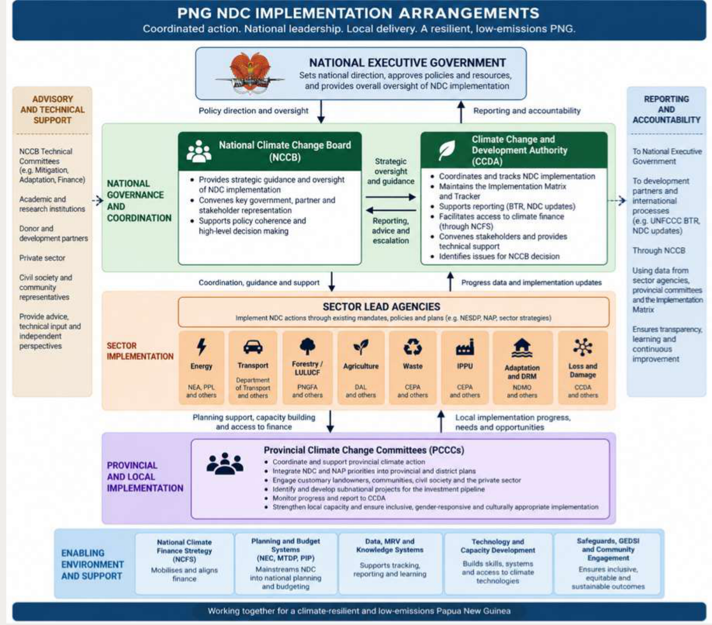
Sector Technical Working Committees and nominated agency NDC focal points will support technical coordination. Issues that cannot be resolved through these arrangements should be elevated to the NCCB or the appropriate senior Government mechanism. The NCCB should receive at least an annual consolidated assessment of implementation progress and key decisions required.
The NDC Implementation Matrix is the principal operational tool for managing implementation. The current Implementation plan establishes the overall governance framework, priorities and implementation pathways, while the Matrix provides the detailed and dynamic layer of implementation information. For each NDC action area it will identify outcomes, priority actions and activities, lead and supporting agencies, milestones and indicators, relevant policies and existing programmes, financing requirements and gaps, technology and capacity needs, implementation risks and current status.
The Matrix functions as a living implementation tool, updated as sector plans are completed, programmes and projects are developed, finance is secured and implementation progresses. It provides the basis for a digital NDC Implementation Tracker.
Implementation will proceed through three phases, while allowing investment-ready and priority actions to move ahead whenever financing and capacity are available.
Phase I – Mobilisation and systems strengthening (2026–2027) will establish the foundations for accelerated delivery. Priorities include confirming agency responsibilities, strengthening coordination and monitoring systems, completing and operationalising sector Implementation Matrices, reviewing the National Adaptation Plan, advancing the national Loss and Damage framework, strengthening MRV and climate-finance tracking, costing priority interventions and establishing the initial NDC investment pipeline. This will link with work on the National Climate Finance Strategy as well as action to integrate and align NDC implementation actions within sectors with the updating of PNG Medium Term Development Plan.
Phase II – Accelerated implementation (2028–2030) will focus on scaling mitigation and adaptation programmes, mobilising finance, strengthening provincial and locally led implementation and achieving the NDC's 2030 milestones. Progress in 2030 will provide a key point for reviewing performance and determining priorities for the remaining implementation period.
Phase III – Scale-up and delivery (2031– 2035) will expand successful interventions, address remaining implementation and financing gaps and focus on achievement of the NDC's 2035 outcomes and preparation for subsequent national climate commitments.
Mitigation implementation will focus on the sector pathways established in NDC 3.0, including the quantified Energy and LULUCF targets and supporting actions across Transport, Agriculture, Waste and IPPU. Adaptation implementation will continue primarily through the National Adaptation Plan and its planned review and update. The emerging national Loss and Damage framework will define detailed institutional and financing arrangements, while Nature-based Solutions, GEDSI, communities and Just Transition requirements will be mainstreamed across sector implementation.
NDC implementation will also require significant additional investment. The National Climate Finance Strategy 2025– 2030 provides the overarching framework for mobilising and managing finance. Financing requirements identified through the Implementation Matrix will be costed and developed into programmes and investments for prioritisation through the NCFS Investment Prioritisation Framework and national climate-finance pipeline.
Technology and capacity-building needs will similarly be integrated into sector delivery. PNG's Technology Needs Assessment provides an initial basis for prioritising mitigation technologies in Energy, Transport and LULUCF, while the associated Barrier Analysis, Technology Action Plans and sector Implementation Matrices will support conversion of these priorities into implementable interventions and investment needs.
Implementation will follow an annual management cycle in which lead agencies review progress, update the Implementation Matrix, identify actions requiring additional finance or policy support, incorporate priorities into planning and budgets, implement and monitor actions, and report progress to CCDA. CCDA will consolidate this information into an Annual NDC Implementation Progress Report, and the NCCB will review overall performance and identify issues requiring strategic intervention.
This approach is intended to make the NDC a continuing Government implementation process rather than a periodic reporting exercise. The same information architecture should support PNG's Biennial Transparency Reports and future NDC updates, reducing duplication between domestic implementation management and international reporting.
Papua New Guinea's Third Nationally Determined Contribution (NDC 3.0) establishes the country's climate commitments for 2025–2035, covering mitigation, adaptation, Loss and Damage, Nature-based Solutions (NbS), inclusive and just transition, and the means of implementation required to deliver these commitments.
This NDC 3.0 Implementation Plan translates these commitments into a coordinated framework for delivery. It identifies priority actions, responsibilities and milestones; supports mobilisation and coordination of finance and other resources; and provides a basis for tracking progress.
The Plan is intended as a practical delivery and management framework linking NDC commitments with the policies, programmes, investments and institutional actions through which they will be implemented:
NDC implementation builds on existing government policies, strategies, institutions and programmes rather than establishing parallel planning and delivery systems. The Plan provides a common framework for aligning these activities with NDC outcomes, clarifying responsibilities and identifying additional actions, investment and the support required to close implementation gaps.
NDC priorities will progressively be integrated into responsible agencies' sector plans, work programmes and budgets and, where appropriate, national development planning and the Public Investment Programme (PIP).
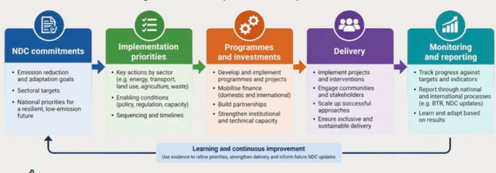
The Implementation Plan covers the full scope of NDC 3.0, including mitigation, adaptation and resilience, Loss and Damage, Nature-based Solutions, inclusive and just transition, and means of implementation. These areas are interconnected, and implementation will seek to maximise opportunities to deliver multiple climate, environmental, social and development outcomes.
The Plan will operate as a living framework, supported by a detailed NDC Implementation Matrix and Tracker. The main Plan establishes the overall implementation framework, responsibilities and priorities, while the Matrix and Tracker will be updated as programmes are developed, finance is secured, and implementation progresses.
Implementation of NDC 3.0 will be guided by five principles:
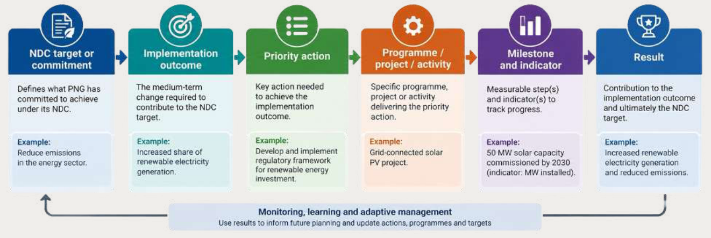
The Implementation Plan will use a common results framework to translate the commitments contained in NDC 3.0 into implementable actions:
|
Implementation area |
Principal outcome |
|
Mitigation |
Sector mitigation actions deliver measurable progress towards PNG's economy-wide and sector NDC targets. |
|
Adaptation and resilience |
National, sector and locally led action reduces vulnerability and increases resilience to priority climate risks. |
|
Loss and Damage |
Policy, institutional, information and financing systems are strengthened to avert, minimise and address economic and non-economic Loss and Damage. |
|
Nature-based Solutions |
Forests, landscapes, freshwater, coastal and marine ecosystems are protected, sustainably managed and restored to deliver mitigation, adaptation, biodiversity and livelihood benefits. |
|
Inclusive and Just Transition |
Climate action provides equitable benefits and opportunities and recognises the rights and roles of customary landowners and communities, women, youth, persons with disabilities and other vulnerable groups. |
|
Means of Implementation |
Finance, technology, institutional capacity, data, MRV and transparency systems enable effective implementation across all NDC areas. |
A limited set of headline results will provide the basis for high-level monitoring of NDC implementation. More detailed sector- and action-level indicators will be maintained through the NDC Implementation Matrix.
|
Area |
Headline NDC result |
Implementation focus |
|
Economy-wide |
Progress towards net-zero emissions by 2030 and net-negative emissions by 2035. |
Coordinated delivery of sector mitigation actions and economy-wide GHG accounting. |
|
Energy |
Reduce annual energy-sector emissions by 4,541 Gg CO₂e, or 29%, by 2035 relative to 2022. |
Renewable energy, efficiency, lower-emission technologies and improved MRV. |
|
LULUCF |
Maintain net removals of at least 17,000 Gg CO₂e by 2030 and 18,000 Gg CO₂e by 2035. |
REDD+, sustainable forest management, conservation, restoration and sustainable land management. |
|
Forests |
Reduce deforestation and forest degradation by 20% by 2035 against 2022 levels. |
Forest governance, land-use planning, sustainable management and incentives. |
|
Adaptation |
Strengthen implementation of PNG's national adaptation framework and priority sector actions. |
NAP implementation and review, sector resilience and locally led adaptation. |
|
Loss and Damage |
Establish a strengthened national framework for addressing economic and non-economic Loss and Damage. |
Policy, risk information, institutional coordination, response systems and finance. |
|
Cross-cutting |
Strengthen systems required to implement and demonstrate delivery of the NDC. |
Finance, MRV, transparency, GEDSI, technology and institutional capacity. |
Where NDC 3.0 establishes a policy direction or commitment without a quantified target, appropriate implementation indicators and milestones will be developed with the responsible agency.
Implementation will be phased across the NDC period while allowing investment-ready actions to proceed as soon as financing and implementation capacity are available.
Phase I – Mobilisation and systems strengthening (2026–2027). Priority will be given to confirming implementation responsibilities, strengthening coordination and monitoring systems, developing sector implementation matrices, completing the NAP review, advancing the national Loss and Damage framework, strengthening MRV and climate-finance tracking, costing priority interventions and developing an initial NDC investment pipeline.
Phase II – Accelerated implementation (2028– 2030). Implementation will focus increasingly on scaling priority mitigation and adaptation programmes, mobilising finance, strengthening provincial and locally led delivery and achieving the NDC's 2030 milestones. Progress at 2030 will provide a key point for reviewing performance and priorities for the remainder of the NDC period.
Phase III – Scale-up and delivery (2031– 2035). Successful interventions will be expanded and remaining implementation and financing gaps addressed, with emphasis on achieving the NDC's 2035 outcomes and informing subsequent national climate commitments.
The Implementation Plan will be periodically reviewed, while detailed activities, financing and implementation status will be updated more regularly through the NDC Implementation Matrix and Tracker.
Implementation of NDC 3.0 will build on PNG's existing climate governance framework under the Climate Change (Management) Act 2015, as amended, the Climate Change (Management) (Nationally Determined Contribution) Regulation 2022, and existing government planning, budgeting and sector coordination arrangements.
A central principle is that:
CCDA coordinates and tracks implementation of the NDC, while responsibility for delivery remains with the government agencies and other institutions holding the relevant sectoral and statutory mandates.
The governance framework therefore distinguishes between national policy direction, strategic oversight, coordination and tracking, planning and financing, and implementation and delivery.
The governance framework therefore distinguishes between national policy direction, strategic oversight, coordination and tracking, planning and financing, and implementation and delivery.
Implementation will operate through existing Government institutions and coordination mechanisms, strengthened where necessary to support NDC delivery.
|
Function |
Institution |
Principal Role |
|
National policy direction |
National Executive Council (NEC) |
Provide overall Government policy direction and address major issues requiring cross-government decisions. |
|
Strategic oversight |
National Climate Change Board (NCCB) |
Review overall NDC performance, major implementation constraints and strategic priorities and provide direction where required. |
|
National coordination and tracking |
Climate Change and Development Authority (CCDA) |
Coordinate implementation; maintain the Implementation Plan and Tracker; consolidate sector reporting; coordinate MRV and transparency; and identify cross-sector implementation constraints. |
|
Planning and investment |
Department of National Planning and Monitoring (DNPM) |
Support integration of NDC priorities into national development planning, the MTDP, PIP and development-partner programming. |
|
Budget and public finance |
Department of Treasury and relevant finance institutions |
Support integration of climate priorities into budgeting and fiscal processes and strengthen tracking and mobilisation of public climate finance. |
|
Sector implementation |
Relevant ministries, departments and agencies |
Lead implementation of NDC actions within their mandates; integrate actions into sector plans and programmes; develop projects; maintain relevant data; and report progress. |
|
Subnational implementation |
Provincial and local-level governments |
Integrate and deliver relevant NDC priorities through provincial and local planning and implementation arrangements with support from Provincial Climate Change Committees. |
CCDA will coordinate implementation using existing inter-agency and sector Technical Working Committee (TWC) arrangements wherever possible. Lead agencies will nominate an appropriate NDC focal point responsible for coordinating implementation information and engagement with CCDA. Cross-sector issues that cannot be resolved through technical coordination should be elevated to the appropriate senior Government mechanism or the NCCB.
The NCCB should receive a consolidated assessment of NDC implementation at least annually, focused on overall progress, major constraints and issues requiring strategic Government action. The proposed institutional structure is shown in the figure below.
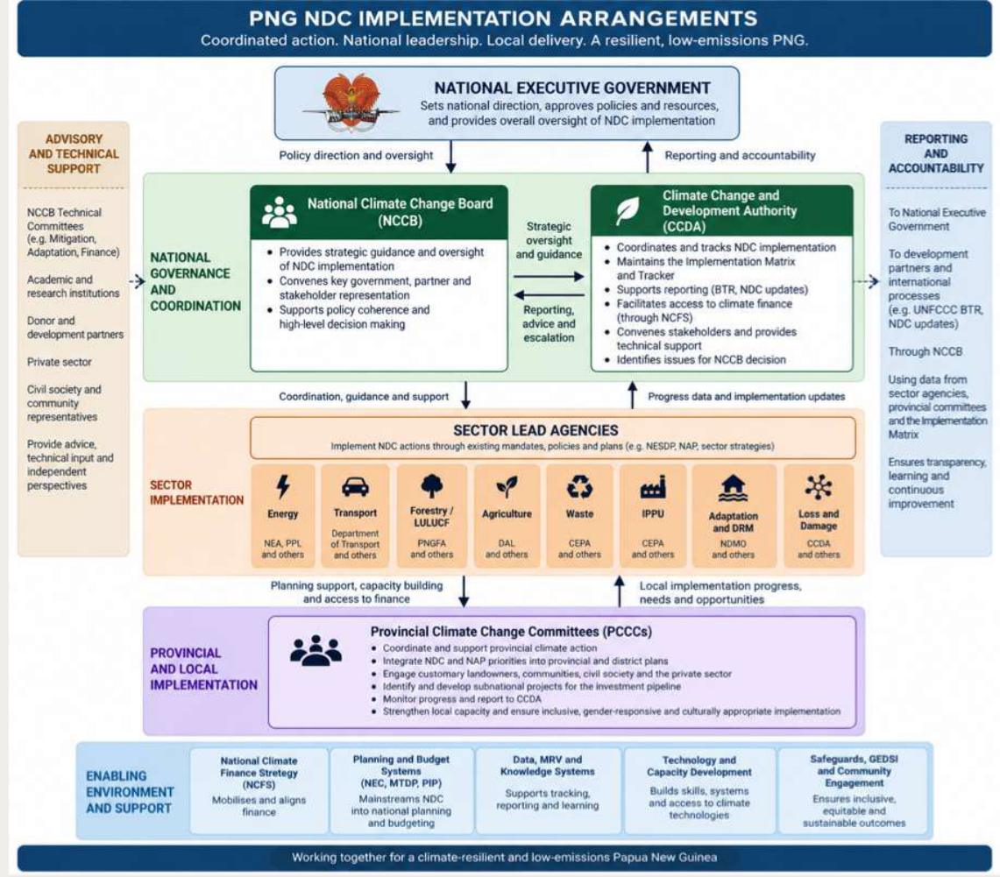
NDC implementation will be progressively embedded within PNG's established development planning and public-finance systems.
Lead agencies should integrate relevant NDC actions into sector policies, plans, annual work programmes and budgets. Where appropriate, priority investments should also be incorporated into national development planning and the Public Investment Programme.
DNPM and Treasury will provide the key interface between NDC implementation and wider Government planning, budgeting and investment processes.
This approach will enable implementation planning to distinguish between:
This distinction will provide a stronger basis for identifying implementation and financing gaps and developing the NDC investment pipeline. Detailed arrangements for mobilisation of domestic, international, carbon and private finance are addressed in the NDC Investment and Climate Finance section of this Plan.
This distinction will provide a stronger basis for identifying implementation and financing gaps and developing the NDC investment pipeline. Detailed arrangements for mobilisation of domestic, international, carbon and private finance are addressed in the NDC Investment and Climate Finance section of this Plan.
The National NDC Implementation Matrix provides the principal operational tool for managing implementation.
For each NDC action area, the Matrix identifies more specific outcomes, priority activities, lead and supporting agencies, milestones and indicators, relevant policies and existing programmes, financing requirements and status, capacity and technology needs, key implementation risks and current implementation status. The detailed Matrix structure is provided as a separate document.
The Matrix will progressively provide the basis for a digital NDC Implementation Tracker monitoring four interconnected dimensions:
NDC results + implementation progress + financing + enabling conditions
Implementation status should be assessed periodically to identify where intervention is required:
|
Status |
Meaning |
|
On track |
Implementation and financing are sufficient to achieve the planned milestone. |
|
Implementation constraint |
Action is underway but faces institutional, technical or capacity barriers. |
|
Financing gap |
Action is sufficiently developed for implementation but lacks required finance. |
|
Policy decision required |
Progress depends on a regulatory, policy or cross-government decision. |
|
Off track |
Progress is insufficient to achieve the relevant milestone without corrective action. |
This approach allows lead agencies, CCDA and the NCCB to focus on actions requiring decisions, resources or corrective intervention rather than using NDC reporting primarily as a retrospective exercise.
NDC implementation will operate through an annual cycle aligned, as far as practicable, with existing Government planning and budgeting processes.
The Annual NDC Implementation Progress Report should provide a concise assessment of progress against headline results, implementation status by sector, financing progress and gaps, major implementation constraints and priority decisions for the following period.
The same information architecture should progressively support PNG's Biennial Transparency Reports and future NDC updates, reducing duplication between domestic implementation monitoring and international reporting.
A significant proportion of NDC implementation will occur at provincial, district and community levels, particularly across adaptation, agriculture, forestry, biodiversity, coastal and marine management and Nature-based Solutions.
Relevant NDC priorities should therefore progressively be incorporated into provincial and local development planning and investment processes.
Provincial Climate Change Coordination Committees (PCCCs) will provide the key coordination mechanism between national NDC priorities and locally identified climate and development needs, supported by national policy guidance, technical assistance, data and appropriate financing mechanisms.
Customary landowners and communities will be critical implementation partners, particularly given that approximately 97% of PNG's land is under customary ownership. Implementation will thus also focus on ensuring meaningful participation in planning and decision-making, appropriate safeguards and FPIC where applicable, transparent benefit sharing, access to relevant financing opportunities and strengthened local capacity.
Implementation will also require coordinated engagement with the private sector, civil society, academia, customary landowners and communities, development partners and financing institutions.
Relevant stakeholders should participate through sector and national coordination mechanisms according to their roles in implementation. Development-partner engagement should be increasingly aligned with Government-identified NDC priorities and the associated investment pipeline, while private-sector participation should be supported where opportunities exist to mobilise investment and technical capacity for NDC delivery.
PNG's NDC 3.0 establishes an economy-wide pathway towards net-zero emissions by 2030 and net-negative emissions by 2035, with mitigation action focused across energy, transport, LULUCF, agriculture, waste and IPPU. The sections below provide a summary of key action areas and approaches with further detail provided within the Implementation Matrix.
Energy is central to PNG’s mitigation pathway. NDC 3.0 commits PNG to reduce annual energy-sector greenhouse gas emissions by 4,541 Gg CO₂e, or 29%, by 2035 relative to 2022, increase the renewable share of on-grid electricity production from approximately 60% in 2022 to 80% by 2035, and support expansion of national electricity access to 70% by 2030.
NEA will lead sector implementation, working with PPL, CCDA and other responsible agencies. The proposed National Energy Sector Development Plan (NESDP) 2026– 2035 will serve as the operational vehicle for sector delivery.
Implementation will be organised around five pathways:
Detailed actions and report-derived milestones will be maintained through the NDC Implementation Matrix and NESDP.
PNG will reduce emissions from grid-connected electricity generation by increasing renewable generation, strengthening grid infrastructure and reducing dependence on higher-emission thermal generation.
Priority actions include:
Decentralised renewable energy will be central to expanding electricity access while limiting emissions growth, particularly in rural and remote areas where conventional grid extension is constrained.
Priority actions include:
Proposed targets across these areas include 150 MW of mini-grid capacity, 250,000 solar home systems, more than 1,000 off-grid health facilities, 25 hybridised town systems and 150 public-facility clusters by 2035.34
Long-term operation and maintenance should form part of project design and approval, with assessments of DRE identifying weak operations and maintenance (O&M) and asset renewal as a major cause of system failure and noting that part of PNG’s current electricity-access deficit reflects the deterioration of previously installed systems.35
NDC 3.0 commits PNG to enact and implement Minimum Energy Performance Standards and Labelling Regulations.
Priority actions include:
This pathway will focus principally on reducing end-use energy demand, while electricity-system losses will be addressed under the on-grid pathway.
Strengthening domestic MRV is a specific NDC energy action. Implementation will improve data on electricity generation, fuels, renewable-energy deployment, electricity access, system losses, petroleum supply and consumption, and major mitigation programmes.
The NESDP monitoring framework should provide the main source of energy-sector implementation information, with NEA and responsible institutions generating sector data and CCDA responsible for national aggregation, NDC tracking and UNFCCC reporting.36
Delivery of the four implementation pathways will require strengthened sector planning, institutional capacity, workforce development and investment mobilisation.
Priority actions include:
Existing assessments identify institutional capacity and workforce constraints as significant barriers to accelerated deployment and recommend that skills development proceed in parallel with infrastructure investment.37
GEDSI considerations should be mainstreamed across all energy programmes, consistent with NDC 3.0.
|
Implementation Pathway |
2026–2027 Priority |
Direction to 2030–2035 |
|
Overall energy-sector emissions |
Establish sector emissions pathway and integrate with NESDP and NDC tracking. |
Reduce annual energy-sector emissions by 4,541 Gg CO₂e /29% by 2035. |
|
1. On-grid emissions reductions |
Confirm priority renewable generation, grid and loss-reduction investments. |
Achieve 80% renewable on-grid electricity production by 2035. |
|
2. Decentralised renewable energy and access |
Operationalise Off-grid Regulation; establish priority DRE pipeline and sustainable O&M models. |
Accelerate renewable-based electrification contributing to 70% access by 2030. |
|
3. Energy efficiency and MEPS |
Operationalise Off-grid Regulation; establish priority DRE pipeline and sustainable O&M models. |
Reduced demand growth and improved end-use efficiency. |
|
4. MRV and implementation tracking |
Operationalise Off-grid Regulation; establish priority DRE pipeline and sustainable O&M models. |
Routine sector data supports NDC, BTR and GHG inventory reporting. |
|
5. Policy, institutions and finance |
Operationalise Off-grid Regulation; establish priority DRE pipeline and sustainable O&M models. |
Sufficient institutional, policy and financing support for scaled implementation. |
The NEA will provide the principal sector lead for implementation. PPL will retain its central role in grid-connected generation, transmission, distribution and system modernisation, while other agencies, provincial authorities, IPPs and private operators will contribute according to their mandates.
CCDA will coordinate the energy sector’s contribution to overall NDC implementation and national reporting. Energy-sector indicators should, as far as possible, be generated through the NESDP and responsible sector institutions and then incorporated into the national NDC tracking framework.
Transport emissions were 1,848.99 Gg CO₂e in 2022, with road transport accounting for approximately 77%, domestic aviation 22% and domestic navigation around 1%. NDC 3.0 does not establish a separate quantified transport emissions target, but commits PNG to reducing transport emissions intensity, addressing high-emitting vehicles and mass transport, enhancing the medium-term roll-out of electric vehicles, and reducing aviation emissions intensity in line with PNG’s ICAO State Action Plan.
Implementation will focus on five linked areas.
1. Lower-emission road transport
Road transport will remain the principal mitigation focus. Actions will strengthen vehicle registration, inspection and fleet data; assess appropriate vehicle-efficiency and emissions standards; improve maintenance and fuel quality; and progressively address high-emitting and inefficient vehicles.
The Asian Transport Outlook identifies vehicle-efficiency standards, fuel quality, vehicle inspection and maintenance, and improved transport data systems among PNG’s existing climate-relevant transport policy priorities.
2. Electric mobility and low-emission public transport
PNG will establish the policy, technical standards, charging infrastructure and investment conditions needed for progressive EV deployment, coordinated with electricity-system development. Public transport measures will support lower-emission fleets and improved urban mobility in major centres.
Existing policy work includes proposed EV deployment, charging and managed-charging measures and options for electrifying public transport. These should be treated as supporting implementation measures rather than formal NDC 3.0 targets unless subsequently endorsed by Government.
3. Lower-emission aviation
Aviation implementation will be guided by PNG’s State Action Plan on CO₂ Emissions Reductions from International Aviation38.
Priority measures include:
The State Action Plan identifies aircraft technology, operational improvements, SAF and market-based measures as PNG’s four principal aviation mitigation areas. It also identifies specific operational measures including Performance Based Navigation, optimum routings and flight levels, flexible tracks, RNAV/RNP and ADS-B.
PNG will also strengthen aviation fuel and emissions data, CORSIA inventories, MRV and technical capacity. The State Action Plan identifies data management, GHG-review training, CORSIA inventories and MRV among the sector’s principal capacity needs.
4. Lower-emission maritime transport
Initial maritime action will focus on establishing stronger vessel fuel and activity data and identifying practical measures for vessel efficiency, port efficiency, alternative fuels and renewable-energy technologies. Priority measures should be incorporated into the proposed Maritime Policy and associated investment planning.
5. Transport MRV, resilience and investment Transport-sector data will be strengthened to support a quantified mitigation pathway and future target-setting, including vehicle fleet characteristics, fuel use, EV deployment, aviation fuel use and maritime activity.
Major transport investments should also be screened for both emissions and climate risk, with priority low-emission projects incorporated into the NDC Investment Pipeline. Existing transport policy provides a basis for strengthening resilient design standards, including consideration of increased rainfall and sea-level rise in transport infrastructure design.
|
Implementation Area |
2026–2027 Priority |
Direction to 2030–2035 |
|
Road vehicles |
Establish fleet baseline and assess priority efficiency, inspection and emissions measures. |
Reduced emissions intensity of the road vehicle fleet. |
|
EVs and public transport |
Operationalise EV framework; establish priority charging and fleet pilots. |
Increasing EV uptake and lower-emission public transport. |
|
Aviation |
Integrate State Action Plan actions into NDC implementation and strengthen aviation MRV. |
Sustained improvement in aviation fuel and emissions intensity. |
|
Maritime |
Establish fuel/activity baseline and assess priority mitigation options. |
Progressive improvement in vessel and port efficiency. |
|
MRV and investment |
Establish data responsibilities and priority investment pipeline. |
Routine transport emissions reporting and increased climate-aligned investment. |
The LULUCF sector is central to PNG’s mitigation pathway. In 2022, the sector provided net removals of 14,269.79 Gg CO₂e. NDC 3.0 targets net LULUCF removals of at least 17,000 Gg CO₂e annually by 2030 and 18,000 Gg CO₂e by 2035, together with a 20% reduction in deforestation and forest degradation by 2035 relative to 2022. Delivery is organised around four action areas: Land Use and Development Planning; Sustainable Management of Forests; Biodiversity Conservation; and Climate-Smart Agricultural Development, supported by cross-cutting MRV and enabling systems.
1. Land Use and Development Planning.
Implementation will strengthen the integration of LULUCF objectives into national and subnational development planning, including the rollout of the National Sustainable Land Use Policy, improved cross-sector coordination and stronger incorporation of forest and land-use considerations into provincial planning, performance reporting and public investment screening.
2. Sustainable Management of Forests.
Implementation will focus on reducing forest loss and degradation while maintaining and increasing forest carbon stocks. Priority actions include strengthening forest governance and the PNG Timber Legality Standard, maintaining controls over forest clearance, improving sustainable management of production forests and community forestry, supporting sustainable downstream processing and value addition, and expanding reforestation, afforestation, restoration and Assisted Natural Regeneration in line with the National Reforestation and Afforestation Strategy 2025–2035.
3. Biodiversity Conservation.
Conservation measures will support protection of high-carbon and high-biodiversity landscapes and contribute to maintaining forest carbon stocks. Implementation will include expansion and improved management of protected and conserved areas, stronger community conservation and environmental management, and improved access to information and recourse mechanisms. These targets also align with PNG’s 30x30 commitment and expansion of terrestrial conservation.
4. Climate-Smart Agricultural Development.
Implementation will reduce pressure for agricultural expansion into forests while supporting productivity, food security and rural livelihoods. Priorities include sustainable commercial commodity production, support for deforestation-free supply chains, improved productivity on existing agricultural land, climate-smart and agroforestry practices, and stronger extension support for family and smallholder agriculture.
Delivery across the four action areas will be supported by strengthened LULUCF governance, finance, REDD+ coordination, safeguards and forest-carbon accounting.
Priority enabling actions include:
|
NDC result / action area |
Implementation focus |
Headline indicator |
|
≥17,000 Gg CO₂e removals by 2030; ≥18,000 by 2035 |
Integrated delivery across all four action areas. |
Annual net LULUCF removals. |
|
Land Use and Development Planning |
National and subnational integrated land-use planning. |
Land-use plans incorporating LULUCF objectives. |
|
Sustainable Management of Forests |
Forest governance, sustainable management, reduced degradation, reforestation and restoration. |
Deforestation/degradation; area under sustainable management/restoration. |
|
Biodiversity Conservation |
Protected/conserved areas and community conservation. |
Forest area under effective conservation management. |
|
Climate-Smart Agricultural Development |
Reduce agriculture-driven forest conversion while improving productivity. |
Forest conversion associated with agriculture; area under sustainable practices. |
|
Cross-cutting enabling systems |
NFMS/NFI, FRL/accounting, REDD+, safeguards and finance. |
Systems operational; data and finance reported. |
Agriculture accounted for 764.03 Gg CO₂e in 2022, approximately 4% of PNG's emissions excluding LULUCF. Emissions increased by 37% between 2000 and 2022, with agricultural soils accounting for 37% of sector emissions, enteric fermentation 33%, and manure management 30%. NDC 3.0 does not establish a quantitative agriculture-sector emissions target, but commits PNG to expand climate-friendly agricultural practices and strengthen the quality and coverage of agricultural emissions data.
Implementation will be aligned with the National Agriculture Sector Plan 2024–2033 and relevant commodity plans and will focus on three priorities:
The Department of Agriculture and Livestock (DAL) will lead implementation in collaboration with the Livestock Development Corporation, commodity boards, agricultural research organisations, provincial authorities and CCDA. Agriculture mitigation actions will also be coordinated closely with the LULUCF programme, as well as actions to enhance adaptation and resilience to climate change.
|
NDC result/direction |
Implementation focus |
Key indicator |
|
Expand climate-friendly agriculture |
Climate-smart crop and livestock practices, extension and awareness. |
Farmers/production systems adopting identified practices. |
|
Strengthen sustainable commodity production |
Integrate climate and environmental standards into coffee, cocoa, oil palm and other priority commodities. |
Commodity programmes incorporating climate/environmental measures. |
|
Improve agriculture MRV |
Activity data and improved inventory methodologies. |
Coverage and quality of agriculture emissions data. |
|
Quantify future mitigation opportunities |
Assess major emissions sources and mitigation potential. |
Mitigation options quantified and incorporated into NDC tracking. |
Waste is PNG's second-largest source of emissions outside the Energy sector, contributing 1,608.72 Gg CO₂e in 2022, or approximately 9% of emissions excluding LULUCF. Wastewater treatment and discharge accounted for approximately 68% of sector emissions, solid waste disposal 29%, incineration and open burning 3%, and biological treatment around 1%. Methane accounted for the majority of waste-sector emissions. Emissions have increased with population growth, urbanisation and changing consumption and waste-generation patterns.
Implementation will focus on four priorities:
Implementation will be led by CEPA, working with NCDC, provincial and urban authorities, service providers, CCDA and other relevant agencies. Improved waste management should be designed to deliver wider public-health, environmental and urban-development benefits alongside emissions reductions.
|
NDC result/direction |
Implementation focus |
Key indicator |
|
Strengthen waste-management institutions |
Policy/legal framework, national coordination and institutional capacity |
Waste governance arrangements operational |
|
Reduce waste-sector emissions |
Wastewater and solid-waste management improvements |
Waste/wastewater receiving improved treatment; estimated GHG reduction |
|
Develop waste recovery and energy opportunities |
Recycling, organic waste and viable waste-to-energy investments |
Projects developed/implemented; waste diverted from disposal |
|
Improve waste MRV |
Waste generation, treatment and disposal data |
Coverage and quality of waste emissions data |
IPPU is currently a relatively small source of PNG's national emissions, contributing 145.17 Gg CO₂e in 2022, approximately 1% of emissions excluding LULUCF. However, the emissions profile is highly concentrated: HFCs accounted for 98.7% of IPPU emissions, compared with 1.2% from CO₂ and 0.1% from N₂O.
NDC 3.0 does not establish a quantitative IPPU emissions target. Its principal mitigation direction is to reduce HFC consumption while strengthening sector data collection and the national GHG inventory. Implementation will build on PNG's Environment (Ozone Depleting Substances, Synthetic GHG, and Natural Refrigerant Regulation 2022) and its commitments under the Kigali Amendment to the Montreal Protocol.
Implementation will focus on three priorities:
Implementation will be led by CEPA in collaboration with CCDA, with engagement from importers, industry and other agencies responsible for relevant industrial products and equipment.
|
NDC result/direction |
Implementation focus |
Key indicator |
|
Reduce HFC consumption and emissions |
Kigali Amendment and 2022 Regulation implementation |
HFC consumption/imports by substance and CO₂e |
|
Accelerate transition to lower-GWP alternatives |
Refrigeration, air-conditioning and other HFC-consuming equipment |
Share/quantity of lower-GWP alternatives introduced |
|
Strengthen compliance and monitoring |
Import/use monitoring and regulatory implementation |
HFC reporting and compliance system operational |
|
Improve IPPU MRV |
HFC and industrial-process activity data and inventory |
Coverage and quality of IPPU inventory |
Adaptation is a national priority for Papua New Guinea, reflecting the country's high exposure and vulnerability to coastal and inland flooding, drought, sea-level rise, landslides, food insecurity, climate-sensitive disease, water insecurity and impacts on terrestrial and marine ecosystems. NDC 3.0 maintains the National Adaptation Plan (NAP) 2022–2030 as the principal framework for delivering PNG's adaptation commitments.
The NAP identifies nine priority climate challenges, delivered through four priority sectors – agriculture, infrastructure, transport and health – and six cross-cutting areas covering mainstreaming, governance, information and capacity, gender responsiveness, resilient ecosystems and early warning systems.
As such, the review of the current NAP and preparation of NAP 2.0 for 2030–2040 are key initial implementation priorities.
PNG is already experiencing economic and non-economic Loss and Damage associated with climate change, including impacts on infrastructure, livelihoods, ecosystems, culture, health and communities facing displacement. NDC 3.0 establishes Loss and Damage as a distinct area of national climate action and commits PNG to develop a national policy framework, strengthen climate-risk and impact assessment, improve links with disaster risk reduction and social protection, support community-based and culturally appropriate responses, and pursue access to international Loss and Damage finance, including the Fund for Responding to Loss and Damage.
Detailed arrangements for Loss and Damage will be developed through the emerging national policy and institutional framework rather than prescribed through this Implementation Plan. During the first implementation phase, priority should therefore be given to establishing that framework, clarifying institutional responsibilities, strengthening systems for assessing economic and non-economic losses, improving coordination with disaster response, recovery, social protection and displacement planning, and developing an initial pipeline of priority programmes for domestic and international financing. Community participation, customary land tenure, cultural values and GEDSI considerations should be integrated into these arrangements, particularly where displacement or non-economic losses are involved. The Implementation Matrix should be updated as the national Loss and Damage framework develops.
|
Implementation area |
2026–2027 priority |
Direction to 2030–2035 |
|
National policy and institutional framework |
Develop and operationalise the national Loss and Damage framework and clarify agency responsibilities. |
Coordinated national system for assessing and responding to Loss and Damage. |
|
Assessment and information |
Establish approaches for recording economic and non-economic losses and strengthen use of climate, disaster and socioeconomic data. |
Loss and Damage information routinely supports planning, response and financing. |
|
Response, recovery and displacement |
Strengthen links with disaster response, social protection, recovery and planning for communities at risk of displacement. |
More coordinated and locally appropriate support for affected households and communities. |
|
Finance |
Assess priority needs, develop an initial programme pipeline and strengthen readiness for FRLD and other financing. |
Increased access to domestic and international Loss and Damage finance. |
|
Community and inclusive delivery |
Integrate community participation, customary rights, cultural values and GEDSI into framework development. |
Loss and Damage responses are locally appropriate, inclusive and safeguard-compliant. |
PNG’s forests, mangroves, seagrass, coral reefs, freshwater systems and other ecosystems provide important climate, biodiversity, livelihood and economic benefits. NDC 3.0 therefore identifies Nature-based Solutions (NbS) as a cross-cutting approach for delivering mitigation, adaptation and sustainable development outcomes.
NbS implementation will complement sector programmes rather than create a separate delivery system. Forest carbon outcomes will primarily be delivered and accounted for through LULUCF, while resilience outcomes will contribute to the Adaptation programme. The role of NbS is to identify and scale interventions capable of delivering multiple benefits from the same investment.
Implementation will focus on four priorities:
NbS should progressively move from individual conservation projects towards integration within national, sector and provincial planning and investment. NDC 3.0 identifies mainstreaming NbS into 22 provincial climate adaptation plans as an implementation priority.
|
Priority |
2026–2027 focus |
2030–2035 direction |
|
Forest and landscape restoration |
Identify priority landscapes and consolidate restoration pipeline. |
Scale restoration, agroforestry and ANR. |
|
Coastal and marine NbS |
Identify priority ecosystems and develop blue carbon/conservation pipeline. |
Scale mangrove, seagrass, reef and community conservation. |
|
Resilient infrastructure |
Develop guidance and demonstration projects. |
Mainstream natural/hybrid solutions into infrastructure investment. |
|
Community conservation |
Strengthen community delivery and benefit-sharing models. |
Scale community conservation and sustainable livelihoods. |
|
Mainstreaming and finance |
Integrate NbS into planning and establish costed investment pipeline. |
Mobilise and scale climate, biodiversity and private finance. |
Successful implementation of NDC 3.0 will depend on ensuring that climate action is inclusive, locally appropriate and delivers equitable social and economic benefits. This is particularly important in PNG, where most land is under customary ownership and a large proportion of the population depends directly on land, forests, fisheries and other natural resources for livelihoods.
NDC 3.0 therefore integrates gender equality, disability and social inclusion (GEDSI), community participation and Just Transition considerations across mitigation, adaptation, Nature-based Solutions and Loss and Damage. These considerations should be embedded within sector programmes and investments rather than implemented as separate activities.
Implementation will focus on four priorities:
Provincial, district and community institutions will be important delivery partners across the NDC. National programmes should therefore progressively strengthen the capacity of subnational institutions and communities to identify priorities, participate in planning, access finance, implement activities and monitor results.
Rather than establishing a separate GEDSI or Just Transition programme, the following requirements should apply across the NDC Implementation Matrix:
|
Implementation requirement |
Application |
|
Inclusive participation |
Relevant groups and customary landowners engaged in programme and investment design and implementation. |
|
GEDSI assessment |
Material gender, disability and social inclusion risks and opportunities identified. |
|
Safeguards and rights |
Applicable environmental and social safeguards, customary rights and consultation requirements addressed. |
|
Benefit sharing |
Transparent arrangements established where programmes generate financial or other benefits. |
|
Local capacity |
Community and subnational capacity requirements identified and supported. |
|
Livelihoods and employment |
Opportunities for local employment, enterprise and livelihood improvement identified. |
|
Transition impacts |
Potential adverse distributional impacts identified and appropriate mitigation/support measures developed. |
|
Monitoring |
Relevant participation, benefit and social indicators incorporated into programme reporting. |
Mobilising finance at sufficient scale will be critical to the implementation of NDC 3.0. PNG's mitigation, adaptation, Loss and Damage and resilience priorities require sustained investment across national, sectoral and subnational levels and will depend on a mix of domestic, international, private and market-based finance.
The National Climate Finance Strategy (NCFS) 2025–2030 provides the overarching framework for mobilising, accessing, managing and tracking climate finance. It seeks to move PNG from fragmented, project-by-project financing towards a more coordinated and country-driven approach, focused on four strategic directions:
The NDC Implementation Plan applies this framework to NDC delivery. Priority financing needs identified through the NDC Implementation Matrix will be costed, developed into programmes and investments, and prioritised through the NCFS Investment Prioritisation Framework (IPF) and national climate-finance pipeline.
A central implementation priority is to convert NDC commitments into a costed and prioritised portfolio of programmes and investments. Sector agencies will identify financing requirements through the Implementation Matrix, with actions requiring additional resources progressively developed into programme or project concepts for consideration within the national climate-finance pipeline. The NCFS envisages the Climate Finance Unit maintaining this pipeline as PNG's coordinated portfolio for engagement with Government, climate funds, development partners and investors.
|
Investment Information |
Purpose |
|
NDC result and implementation action |
Establish direct alignment with NDC 3.0 |
|
action Lead and supporting agencies |
Confirm ownership and delivery responsibility |
|
Proposed programme/project and indicative cost |
Define the investment and financing requirement |
|
Existing or committed finance |
Identify resources already available |
|
Financing gap |
Identify the additional requirement |
|
Appropriate instrument and potential source |
Identify how and by whom the investment could be financed |
|
Readiness requirements |
Identify feasibility, safeguards, design or other preparation needs |
|
Expected climate and development results |
Support IPF prioritisation and results tracking |
Investment readiness will be particularly important for accessing international and private finance. Priority preparation requirements include technical and feasibility studies, economic and financial analysis, climate rationale, safeguards and GEDSI
Financing instruments should be matched to the characteristics of each investment. The NCFS identifies a diversified mix including grants, concessional finance, blended finance, guarantees and risk-sharing instruments, domestic finance, carbon markets and results-based payments, and insurance and risk-pooling mechanisms. For NDC implementation:
Financing choices should consider fiscal space and debt sustainability and use grant, concessional and catalytic resources strategically. Public and concessional finance should address specific barriers to investment while preserving grant-based support for public-good and community-level interventions without viable revenue streams.
NDC priorities should be progressively incorporated into sector planning, annual budgets, the Public Investment Programme (PIP) and national development planning. During 2026–2027, a particular priority will be integration of NDC 3.0 implementation and investment requirements into preparation of MTDP V (2028–2032) and associated sector plans and budgets. The NCFS also identifies climate budget tagging, improved climate-finance reporting and stronger climate screening of PIP investments as priorities.
International climate finance will remain particularly important given the conditional nature of NDC 3.0. Priority investments should be developed for appropriate sources including the GCF, GEF, Adaptation Fund, Fund for Responding to Loss and Damage, multilateral development banks, bilateral partners and regional financing mechanisms, while strengthening PNG's capacity for direct access where appropriate.
Private investment should be targeted towards sectors and activities with viable commercial or revenue models, including renewable energy, sustainable forestry, climate-smart agriculture, resilient infrastructure and financial services. Blended-finance and risk-sharing approaches can be used where defined barriers prevent otherwise viable investments from attracting capital.
Carbon markets and results-based finance will form part of this wider financing mix. Potential transactions should be considered within the national climate-finance pipeline and assessed for transaction costs, market risks, safeguards and benefit-sharing requirements, corresponding adjustments where applicable, and implications for achievement of PNG's own NDC.
A significant share of NDC implementation will occur at provincial, district and community levels. The financing architecture should therefore strengthen the ability of subnational institutions and communities to identify, prepare, access, manage and report on climate investments.
The NCFS proposes stronger subnational financing channels and increased support for climate screening and project development within provincial and district investment planning. Relevant subnational priorities identified through sector, provincial and community planning should be linked to the national pipeline, while financing mechanisms should be designed to enable resources to reach locally led implementation effectively. Detailed requirements relating to participation, customary rights, GEDSI, safeguards and benefit sharing are addressed under Section 9 and should be applied to relevant financing mechanisms and investments.
NDC financing will use the institutional architecture established through the NCFS. The Climate Finance Unit (CFU) will provide operational coordination under the climate-policy leadership of CCDA and strategic oversight of the National Climate Finance Steering Committee (NCFSC). DNPM will support alignment with national development planning, the PIP and development-partner coordination, while Treasury and relevant finance institutions will support budgeting, fiscal and public-finance arrangements. Sector agencies and subnational governments will identify and implement priority investments.
|
Institution |
Principal Role |
|
NCFSC |
Strategic oversight and endorsement of national climate-finance priorities and pipeline |
|
CCDA |
Climate-policy leadership and alignment with NDC 3.0 |
|
CFU |
Climate-finance coordination, pipeline management, project-preparation support and finance tracking |
|
DNPM |
Alignment with national planning, PIP and development-partner coordination |
|
Treasury / finance institutions |
Budgeting, PFM, fiscal and public-finance arrangements |
|
Sector agencies |
Identification, development and delivery of sector investments |
|
Provincial/local government |
Identification and implementation of subnational priorities |
Finance tracking should be integrated with the wider NDC tracking system and progressively capture investment requirements, finance committed and mobilised, remaining financing gaps and associated implementation results. This should align with the NCFS proposal for a national climate-finance database and reporting system.
|
Priority |
2026–2027 |
2028–2030 |
2031–2035 |
|
Costing and investment pipeline |
Cost-priority actions and establish an initial NDC investment portfolio aligned with the NCFS/IPF. |
Develop and finance priority programmes. |
Maintain and update the pipeline based on implementation needs. |
|
Planning and domestic finance |
Integrate priorities into MTDP V, sector plans, PIP and budgets. |
Strengthen climate-budget and expenditure alignment. |
Embed climate priorities within regular planning and budgeting. |
|
International finance |
Strengthen investment readiness and match priorities with financing sources. |
Increase mobilisation from climate funds, MDBs, bilateral and regional partners. |
Scale successful programmes. |
|
Private and blended finance |
Identify investable opportunities and key financing barriers. |
Deploy appropriate blended, PPP and risk-sharing structures, |
Expand investment in proven models. |
|
Carbon/results-based finance |
Develop eligible programmes and strengthen integrity/accounting systems. |
Mobilise high-integrity carbon and results-based finance. |
Scale effective mechanisms where appropriate. |
|
Subnational finance |
Strengthen local project origination and financing pathways. |
Increase finance reaching provincial and locally led implementation. |
Embed effective subnational financing arrangements. |
|
Finance tracking |
Align NDC and NCFS finance-tracking arrangements. |
Report annually on flows and gaps. |
Use financing and performance data to guide future investment. |
Technology development, transfer and capacity building are important enablers of NDC 3.0 implementation. PNG's Technology Needs Assessment for Climate Change Mitigation (2025) provides the principal assessment of priority mitigation technologies for the Energy, Transport and LULUCF sectors. The TNA was developed through stakeholder consultation and multi-criteria analysis, considering factors including cost, environmental and socioeconomic benefits, sustainability, mitigation potential, readiness and applicability to PNG.
The TNA selected the following technologies for progression through the Barrier Analysis and Enabling Framework and Technology Action Plan processes:
|
Sector |
TNA-Prioritised Technologies |
|
Energy |
Biomass gasifier stoves; solar power; hydropower. |
|
Transport |
Electric vehicles; hybrid vehicles. |
|
LULUCF |
Reduced deforestation and forest degradation; sustainable land-use planning; reforestation and rehabilitation. |
These priorities should inform NDC sector implementation and investment planning, while not excluding other technologies identified through sector policies, strategies or subsequent technical assessment. The TNA, for example, also assessed wind, biogas, geothermal and biomass energy; biofuels, CNG and improved public transport; and protected-area management, environmental safeguards, sustainable palm oil and downstream forest processing.
The immediate priority is to translate the TNA results into implementable programmes and investments. This includes completing and applying the associated Barrier Analysis and Enabling Frameworks and Technology Action Plans (TAPs), identifying the policy, institutional, skills, infrastructure and financing constraints affecting priority technologies, and incorporating viable interventions into sector plans and the NDC Investment Pipeline. This progression from prioritisation to barrier analysis, enabling frameworks and TAP development is an explicit part of the TNA process.
Technology requirements should primarily be implemented through the relevant sector pathways. For Energy, this includes solar and hydropower deployment and appropriate applications of biomass gasifier stoves; for Transport, EV and hybrid vehicle deployment; and for LULUCF, land-use planning, forest monitoring and management, and restoration. The TNA uses a broad concept of technology encompassing physical equipment, methods and techniques, and institutional or organisational arrangements.
Deployment of priority technologies will require corresponding investment in skills, institutions and local capability. Key needs include technical and vocational skills; operation and maintenance; regulatory and standards capacity; project preparation and finance; data and MRV; and research and adaptation of technologies to PNG conditions.
Universities, TVET institutions, research organisations and the private sector should
support development of the domestic technical workforce and local service capacity needed to deploy, operate and maintain technologies over their lifecycle.
CCDA, as PNG's National Designated Entity for the UNFCCC Technology Mechanism, should coordinate access to international technology cooperation and technical assistance, including through the Climate Technology Centre and Network (CTCN), in partnership with responsible sector agencies.
|
Priority |
2026-2027 |
2028-2030 |
2031-2035 |
|
TNA/TAP implementation |
Complete/apply Barrier Analysis, Enabling Frameworks and TAPs and align actions with sector matrices. |
Implement priority TAP actions. |
Review and update technology priorities. |
|
Technology investment |
Develop costed concepts for priority technologies and identify preparation and financing gaps. |
Mobilise finance and implement priority investments. |
Scale technologies demonstrating strong results. |
|
Policy and enabling environment |
Address key regulatory, standards, infrastructure and market barriers. |
Implement and review enabling reforms. |
Address emerging barriers. |
|
Skills and O&M |
Identify priority skills and O&M needs and establish training partnerships. |
Expand technical training and certification. |
Maintain sustainable domestic technical and service capacity. |
|
Technology cooperation |
Identify priority international technology-transfer and technical-assistance needs. |
Mobilise support through CTCN and other partners. |
Maintain targeted international partnerships. |
|
Monitoring |
Establish technology-deployment indicators within sector matrices. |
Track uptake and implementation barriers. |
Use results to inform future TNA/TAP priorities. |
GOVERNMENT OF PAPUA NEW GUINEA
Phone: +675 3414287
Email: info@ccda.gov.pg
Website: https://ccda.gov.pg/
Address: Enchi Bldg, Fig Street Wards Road Hohola Port Moresby Papua New Guinea
ISBN: 978-9980-918-16-1
Supported by: